Kapitálové trhy II · výklad
1BP404 · pojmy v souvislostech, lidsky a s kartami. Čísla a slajdy jsou stejné jako ve výpiscích; tam je i harmonogram. Průběžný test 26. 11.
1. Finanční trhy a jejich struktura
Přednáška 24. 9. · P. Musílek · zdroj: Finanční trhy a jejich struktura (1BP404_01_prednaska.pptx, čísla slajdů v závorkách)
Celé téma odpovídá na jednu otázku: jak se peníze z úspor dostanou k těm, kdo je potřebují, a proč to v Česku funguje hůř než jinde. Nejdřív se podíváme, jak se o investování přemýšlelo v čase, pak jak trh funguje a jak se měří jeho síla. Na konci stojí domácnosti, které do trhu peníze dávají, a český trh, kde se to nedaří.
Jak se vyvíjela investiční teorie
Slajdy (s. 3–6) jsou jen chronologický seznam. Dá se v něm ale vidět jednoduchý příběh o třech etapách. Nejdřív lidé zkoumali, co má akcie za hodnotu a jak se hýbou ceny. Pak přišla matematika portfolia a rizika, která vydržela do 70. let. Od konce 70. let se pozornost obrátila k tomu, jak se lidé a trhy chovají doopravdy, a nakonec k právu, likviditě a udržitelnosti.
- 1899–1936, co je akcie hodnotná: Simon (hodnota), Bachelier (ceny), Dow (trendy, technická analýza), Smith (růst), Fisher (krize), Graham a Dodd 1934 (vnitřní hodnota, fundamentální analýza), Keynes 1936 (psychologie).
- 1952–1976, racionální modely: Markowitz 1952, Miller a Modigliani 1959, Sharpe 1964, Fama 1965, Black–Scholes–Merton 1973, Solnik 1974, Jensen a Meckling 1976.
- od 1979, realita: Tversky a Kahneman 1979 (behavioral finance), Mendelson a Amihud 1986 (likvidita), La Porta a spol. 1998 (právo), Stambaugh a Pastor 2003 (likvidita jako faktor), Baker, Zechner, Pastor od 2012 (ESG).
Fundamentální analýza (Graham a Dodd 1934) hledá vnitřní hodnotu akcie z hospodaření firmy a porovnává ji s cenou. Technická analýza (základ položil Dow) čte z historie cen trendy a z nich odhaduje další pohyb.
Riziko a výnos se posuzují pro celé portfolio, ne pro jednu akcii. Díky diverzifikaci může být portfolio bezpečnější než jeho jednotlivé části. Na tom stojí skoro všechno, co následuje.
CAPM říká, že výnos akcie je odměna za systematické riziko, tedy za to, co diverzifikací nezmizí. Teorie efektivního trhu říká, že ceny už obsahují všechny dostupné informace, takže je těžké trh systematicky porazit.
Investoři dělají systematické chyby, nejsou plně racionální. Na to navazuje Keynesova myšlenka z roku 1936, že ceny ovlivňuje i nálada a očekávání ostatních. Podrobně se k tomu vrátíme u technické analýzy a efektivních trhů (témata 8 a 9).
Podle slajdu (s. 4) je teorie efektivního trhu od Famy z roku 1965. V literatuře se často uvádí 1970 (Famův přehledový článek o třech formách efektivity). V testu platí údaj ze slajdů. Roky Markowitze (1952) a Sharpea (1964) sedí s literaturou.
Jak se úspory dostávají k těm, kdo je potřebují
Domácnosti mívají peníze navíc a firmy a stát jich mají málo. Aby se obě strany našly, existují podle s. 8 tři cesty. První vede přes banky a další zprostředkovatele, kteří peníze přijmou a půjčí dál. Druhá vede přímo přes kapitálový trh, kde firma vydá cenný papír a investor ho koupí. Třetí je sekuritizovaný úvěrový trh, kde se z klasických úvěrů vyrobí obchodovatelné cenné papíry.
- alokační: úspory jdou do nejlepších projektů,
- cenotvorná: trh tvoří ceny a shrnuje v nich informace,
- likviditní: cenný papír lze kdykoli prodat,
- diverzifikační: investor rozloží riziko,
- výkon vlastnických práv: akcionáři kontrolují firmu.
Trhy cenných papírů se dají třídit podle několika hledisek (s. 10). Nejdůležitější je rozdíl, kam jdou peníze: na primárním trhu se papír prodává poprvé a peníze dostane emitent, na sekundárním si papíry mezi sebou prodávají investoři a firma z toho nic nemá. Dál se trhy dělí na burzovní a mimoburzovní (OTC), veřejné a privátní, podle instrumentu na akciové, dluhopisové a derivátové, podle splatnosti na peněžní a kapitálové a podle území na národní, zahraniční, eurotrhy a off-shore.
Doplněk (Musílek 2011): výklad primárního a sekundárního trhu a hranice peněžního trhu (splatnost do 1 roku) na slajdu 10 nejsou, je to jen výčet hledisek.
Jak se měří význam trhu: tři ukazatele
Tady se nejčastěji chybuje, protože všechny tři ukazatele mají podobný název i podobné vzorce. Pomůže představa koláče. Koláč je celková hodnota všech akcií na burze. Ekonomika země je pak stůl, na kterém koláč stojí. Podle toho, co s koláčem porovnáváme, dostaneme tři různé ukazatele (data Světové banky, s. 11, 12, 34).
$$\text{hloubka} = \frac{\text{tržní kapitalizace}}{\text{HDP}}$$
Jak velký je koláč vůči ekonomice. V USA a Švédsku je přes 100 %, v ČR jen 28,2 % (2005) a 18,0 % (2012).
$$\text{míra obratu} = \frac{\text{burzovní akciové obchody}}{\text{tržní kapitalizace}}$$
Jak rychle se koláč protáčí, tedy jak aktivně se stávající akcie přeprodávají. HDP v tom vzorci vůbec není. V ČR klesla ze 118,6 % na 27,0 %.
$$\text{likvidita} = \frac{\text{burzovní akciové obchody}}{\text{HDP}}$$
Kolik peněz se na burze reálně zobchoduje v poměru k celé ekonomice. ČR spadla z 30,2 % (2005) na 4,9 % (2012), Polsko vzrostlo z 9,8 % na 13,6 %, USA mají 132 až 164 %.
Tržní kapitalizace se ve vzorci zkrátí, takže platí:
$$\text{hloubka} \cdot \text{míra obratu} = \frac{\text{kapitalizace}}{\text{HDP}} \cdot \frac{\text{obchody}}{\text{kapitalizace}} = \frac{\text{obchody}}{\text{HDP}} = \text{likvidita}$$
Trh může být malý (nízká hloubka), a přesto se na něm obchoduje divoce (vysoká míra obratu). Tak to bylo v ČR kolem roku 2005. Likvidita pak říká, jak je to celé výsledně významné pro ekonomiku.
Hloubka 18,0 % (s. 11), míra obratu 27,0 % (s. 12):
$$0{,}180 \cdot 0{,}270 = 0{,}0486 \approx 4{,}9\,\%$$
To sedí se slajdem 34 (tržní likvidita ČR 2012 je 4,9 %). U jiných zemí vychází hodnoty jen přibližně (USA 2012: $1{,}155 \cdot 1{,}246 = 143{,}9$ proti 132,2 na s. 34), protože tabulky nepočítají úplně stejně.
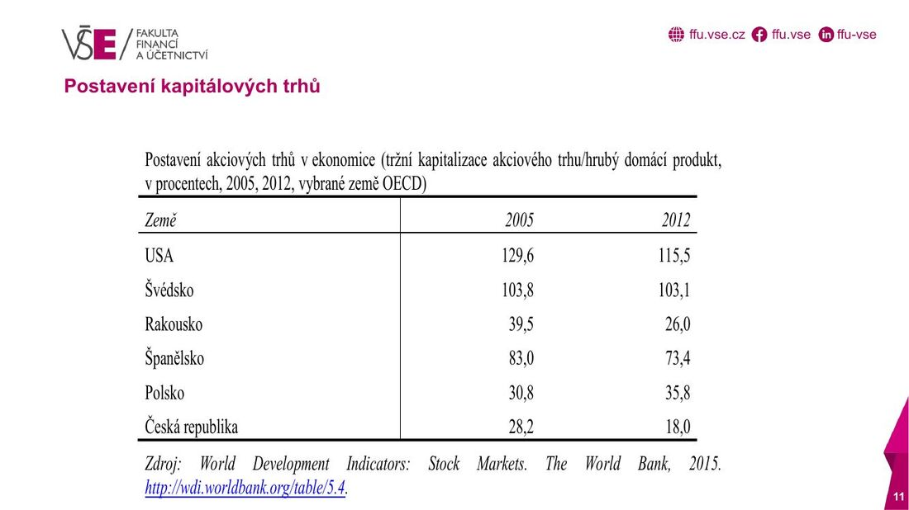
Rakousko má na s. 12 (míra obratu) stejné hodnoty jako na s. 11 (hloubka): 39,5 a 26,0. Je to patrně chyba na slajdu, neopírej se o ni.
Z čeho se skládá majetek domácností
Slajdy 13–19 ukazují, do čeho domácnosti ukládají peníze v USA, Rakousku, Švédsku, Španělsku, Polsku a ČR (OECD, MF ČR). Hlavní zjištění je, že existují dva modely. V bankovním modelu (Rakousko, ČR) jsou domácnosti rizikově averzní a nejvíc drží v bankovních vkladech. V kapitálovém modelu (USA, Švédsko) mají největší podíl akcie, kolektivní investování a penzijní fondy.
| Země | Hotovost + depozita | Akcie | Penzijní fondy |
|---|---|---|---|
| USA | 12,95 % | 33,68 % | 26,95 % |
| Švédsko | 15,50 % | 36,61 % | 28,00 % |
| Rakousko | 41,68 % | 19,63 % | 6,19 % |
| Španělsko | 45,67 % | 24,48 % | 8,03 % |
| Polsko | 44,03 % | 21,45 % | 19,97 % |
Nahoře je kapitálový model (málo vkladů, hodně akcií a penzí), dole bankovní.

Vklady: $42{,}9 + 8{,}5 + 2{,}7 = 54{,}1\,\%$. Se stavebním spořením: $54{,}1 + 14{,}8 = 68{,}9\,\%$. Investiční fondy mají jen 9,6 %. Součet všech sedmi položek je 100,2 % (zaokrouhlení).
Krize ukázala, jak citlivé to je. Před krizí 2007–2009 (pád Lehman Brothers) dlouhodobě rostl podíl akcií, kolektivního investování a penzijních instrumentů. Po propuknutí krize domácnosti utekly od rizika (v USA klesl podíl akcií z 37,72 % v roce 2006 na 28,80 % v roce 2008) a při zotavování se postupně zvyšoval podíl investičně-pojistných instrumentů. Zvláštní případy jsou Japonsko (depozita přes 50 %, s. 26) a Itálie (velký podíl dluhopisů, 16 až 21 %, s. 27).
Proč se struktura majetku v zemích liší
Teorii psali Boersch-Supan a Eymann (1999), Starr-McCluer a Bertaut (2000), Campbell (2006), Wachter a Yogo (2010) a Becker (2014). Z jejich prací vychází osm důvodů ze slajdů 23–24. Dají se seskupit do tří otázek: kolik domácnost má a v jaké je fázi života, jak je nastavený stát a trh a jak domácnost sama uvažuje.
- Domácnost: celkový majetek a příjem, fáze životního cyklu, investiční gramotnost.
- Stát a trh: model důchodového systému, efektivní ochrana práv vnějších investorů, likvidita.
- Výnosy a historie: historická, aktuální a očekávaná výnosnost a riziko aktiv, tradice, historické události a národní specifika.
Seskupení je moje pro lepší zapamatování. Na slajdech je to jeden výčet osmi bodů.
Český kapitálový trh: stav
Slajdy 29–36 ukazují jediný trend: český trh dlouhodobě ztrácí na významu. Počet akciových emisí na Burze cenných papírů Praha (BCPP) spadl z 1 670 v roce 1996 přes 151 (2000) a 32 (2006) na pouhých 23 v roce 2014. Nových emisí (IPO) je 0 až 2 ročně, za celé období 2004–2014 jen 9, zatímco na polské burze WSE jich bylo 12 až 38 ročně. Objem akciových obchodů vyrostl z 250 mld. Kč (1996) na rekord 849 mld. Kč (2006) a pak klesl na 154 mld. Kč (2014). BCPP má asi 97 až 98 % obchodů, zbytek patří RM-Systému. Zájem o investiční certifikáty a warranty je slabý, warranty měly v roce 2014 jen 4 obchody.
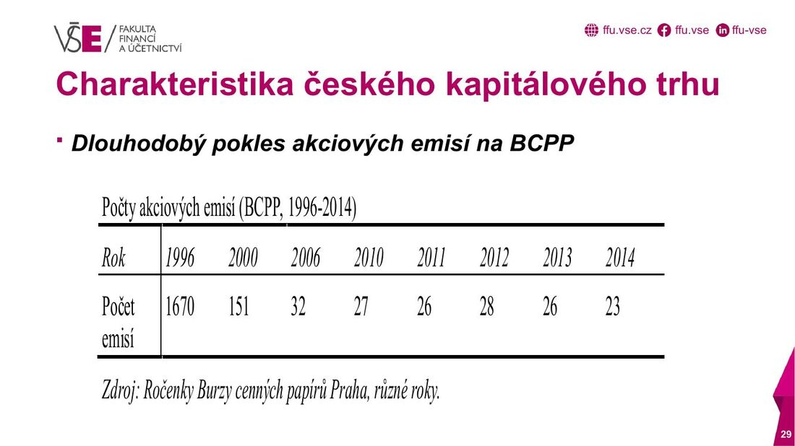
Emise: $1670 / 23 \approx 72{,}6$, takže za 18 let kleslo číslo téměř 73krát.
Obchody: $154 / 250 = 0{,}616$, tedy proti roku 1996 pokles o 38 %, ale proti rekordu 2006 jde o $154 / 849 \approx 18\,\%$.
Podíl BCPP v 2014: $153{,}5 / 157{,}7 = 97{,}3\,\%$ (s. 33, sedí).
Příčiny a opatření: dohromady jeden příběh
Osm příčin nerozvinutosti ze s. 37 je dobré znát jako výčet, ale lépe se pamatují jako řetěz. Domácnosti jsou rizikově averzní a drží peníze ve vkladech. Chybí domácí institucionální investoři, hlavně penzijní fondy, kteří by trh živili. Investoři navíc nejsou dobře chráněni a zákony jsou složité, takže o trh není zájem. Firmy proto neemitují, trh neplní emisní funkci a má minimální cenotvornou roli. Globální krize situaci ještě zhoršila.
- neúplnost trhu, téměř neplní emisní funkci,
- složité kapitálové zákonodárství,
- minimální informační (cenotvorná) role,
- nedostatečná ochrana vnějších investorů,
- všeobecný nezájem o kapitálový trh,
- nedostatečná role domácích portfoliových investorů,
- neúměrně vysoká riziková averze přebytkových jednotek (domácností),
- nepříznivý dopad globální finanční krize.
Opatření míří přesně na tyto příčiny. Neúspěšný pokus byl projekt KCP a BCPP z roku 2004 (podpora emisí, privatizace státních podniků přes burzu, lepší infrastruktura, výhodnější zdanění fondů, posílení penzijního připojištění a kvalitní právní rámec). Nezbytná opatření (s. 39–41): privatizace státních podílů přes domácí kapitálový trh, efektivní dohled s ochranou vnějších investorů, hospodářská politika bez státního dirigismu, přitažlivý dohled ČNB, daňové stimuly pro správu aktiv v ČR, vícepilířová penzijní reforma s významným podílem kapitalizace a mezinárodně atraktivní zdanění výnosů. Aktuální úsilí (s. 42): kritická zpráva Světové banky 2017, Koncepce rozvoje českého kapitálového trhu 2019–2023 a účet dlouhodobých investic.
- rizikově averzní domácnosti a málo domácích investorů → penzijní reforma, daňové stimuly,
- slabá ochrana investorů a složité zákony → efektivní dohled, kvalitní právní rámec,
- žádné emise → privatizace státních podílů přes burzu.
Doplněk: účet dlouhodobých investic ze s. 42 byl později zaveden (DIP, zákonná úprava platí od roku 2024). Nejde o údaj ze slajdů, ověř v aktuálním znění zákona.
2 strany, vyhodnocení správy zvoleného fondu (hlavně fond dostupný v ČR). Obsah: investiční politika, výkonnost (výnos a riziko) a nákladovost za 2022–2025, srovnání s benchmarkem a konkurencí, celková známka 1–4. Portfolio se hlásí 8. 10., odevzdání papírově 10. 12., obhajoba je na začátku ústní zkoušky. Postup výpočtu je v tématu 5.
- Teorie: Markowitz 1952 (portfolio), Sharpe 1964 (CAPM), Fama 1965 (efektivní trh), Tversky a Kahneman 1979 (behavioral finance).
- Alokace úspor: zprostředkovatelé, kapitálový trh, sekuritizovaný úvěrový trh. Pět funkcí trhu: alokační, cenotvorná, likviditní, diverzifikační, výkon vlastnických práv.
- Hloubka = kapitalizace / HDP, míra obratu = obchody / kapitalizace, likvidita = obchody / HDP. Hloubka × obrat = likvidita.
- Rakousko a ČR: bankovní model (vklady). USA a Švédsko: kapitálový model (akcie, penze). Po krizi klesl podíl akcií.
- Český trh: emise 1 670 → 23, likvidita 4,9 % HDP v 2012, 0–2 IPO ročně (Polsko 12–38).
- Příčiny: neplnění emisní funkce, slabá ochrana investorů, rizikově averzní domácnosti, málo domácích institucí. Řešení: privatizace přes trh, dohled, daně, penzijní reforma.
2. Regulace a dohled nad kapitálovým trhem
Přednáška 1. 10. (odhad) · P. Musílek · zdroj: Regulace trhu cenných papírů (1BP404_02_prednaska.pptx, čísla slajdů v závorkách)
Kapitálový trh stojí na důvěře. Investor kupuje papír od firmy, kterou nezná, a nevidí jí do karet. Téma proto odpovídá na tři otázky: proč trh potřebuje pravidla, kdo nad nimi bdí a jak je dohled uspořádaný v Evropě a v Česku. Nejvíc se v testu ptají na čtyři modely dohledu a jejich výhody a nevýhody.
Proč a jak se trh reguluje
Důvody jsou dva (s. 2). Prvním je tržní selhávání: jedna strana ví víc než druhá (informační asymetrie), zlé věci se šíří na ostatní (záporné externality) a trh se může monopolizovat. Druhým jsou nepoctivé praktiky, kterým by se bez pravidel nikdo nebránil. Cíle regulace jsou tři: podpora transparentnosti, zabezpečení důvěryhodnosti a ochrana investorů (s. 4).
Regulace jsou pravidla: kdo smí na trh vstoupit, jak musí fungovat a jak má jednat s klienty. Má primární podobu (zákony) nebo sekundární (vyhlášky, předpisy, metodiky).
Dohled je kontrola, že se pravidla dodržují. Bez účinného vynucování by byl jen formalitou.
- regulace vstupu do odvětví (licence, povolení),
- regulace informačních povinností emitentů a poskytovatelů investičních služeb,
- regulace nepoctivých praktik.
Podle přednášky (s. 6) jsou nejrozšířenější nepoctivé praktiky obchody na základě neveřejných informací, obcházení regulace, zneužívání svěřeného majetku, konflikt zájmů mezi vlastními a cizími obchody a manipulace tržních cen.
Doplněk (obecná literatura, Musílek 2011, kap. 5): obchod s neveřejnou informací se nazývá insider trading. Obchod makléře na vlastní účet těsně před velkým pokynem klienta je front running. V EU zneužívání trhu zakazuje nařízení MAR (596/2014). Na slajdech tyto názvy nejsou.
Mezinárodní harmonizace: IOSCO
Trhy jsou propojené, a proto potřebují podobná pravidla. IOSCO (International Organization of Securities Commissions) usiluje o mezinárodní harmonizaci regulace, podmínek fungování investičních firem a informačních povinností emitentů. Chce, aby regulátoři spolupracovali na vysokém standardu, vyměňovali si zkušenosti, sjednocovali dohled nad přeshraničními obchody a pomáhali si s vynucováním pravidel (s. 7).
Dokument „Cíle a principy regulace trhu cenných papírů“ z srpna 1998 uvádí tři základní cíle:
- ochrana investorů,
- spravedlivé, efektivní a transparentní trhy,
- omezení systémového rizika.
Na slajdu 4 jsou cíle jen tři obecné (transparentnost, důvěryhodnost, ochrana investorů). IOSCO (s. 8) má jinou trojici, kde přibývá systémové riziko. Obě je dobré umět a nepleťte si je. Společná je ochrana investorů a transparentní trh.
Kdo dohlíží: čtyři modely uspořádání
Teorie regulace dosud nepřinesla důvod, který by určil „ideální“ uspořádání dohledu. Vyspělé státy proto používají čtyři základní modely (s. 9): jednotný dohled, odvětvový, dohled v rámci centrální banky a funkcionální. Rozdíl je v tom, kdo dohlíží. Jedna instituce nad vším, oddělené instituce pro banky, pojišťovny a cenné papíry, centrální banka, nebo úřady rozdělené podle činnosti.
Aby tabulka dávala smysl, hodí se pojem finanční supermarket: instituce, která v jednom místě nabízí bankovní, pojistné i investiční služby. Právě takové firmy pletou hranice mezi dohledovými úřady a z nich vyplývají hlavní výhody a nevýhody modelů.
Jeden samostatný úřad dohlíží na celý finanční trh. Není součástí centrální banky.
Výhody: řeší překrývání kompetencí i mezery u finančních supermarketů, umožňuje konsolidovaný dohled, přináší úspory z rozsahu a sortimentu a harmonizuje požadavky na různé instituce. Centrální banka se věnuje jen měnové politice a chrání si reputaci.
Nevýhody: komplikovaná integrace odlišných přístupů, financování ze státního rozpočtu (horší platy než na trhu), nástroje finanční stability jsou mimo centrální banku, takže koordinace je dražší, a roste politický tlak.
Každý sektor (banky, pojišťovny, cenné papíry) má svůj úřad.
Výhody: specializace, jasná odpovědnost, konkurence přístupů a diverzifikace selhání dohledu.
Nevýhody: neodpovídá prolínání segmentů, je neefektivní nad konglomeráty, koordinace je drahá a hrozí regulatorní arbitráž (firma přesune činnost tam, kde je regulace mírnější). Supermarkety zároveň podléhají vícenásobnému dohledu.
Dohled provádí centrální banka. V Česku je to model ČNB.
Výhody: vlastní financování nezávislé na rozpočtu, využití infrastruktury a informačních toků banky, úspory z rozsahu, atraktivnější zaměstnavatel a náhrada kompetencí, když země vstoupí do měnové unie.
Nevýhody: konflikt zájmů měnové politiky a dohledu (zvlášť v krizi), rozptýlený management, banka je účastníkem dluhopisových trhů, které dohlíží, koncentrace moci mimo kontrolu vlády a morální hazard: klienti mohou čekat ochranu jako u bankovních vkladů.
Úřady se dělí podle činnosti, ne podle typu instituce.
Výhody: odpovídá stírání hranic mezi segmenty, nízké náklady tržních subjektů, vyšší specializace, vyvážený důraz na ochranu spotřebitele a stabilitu a není třeba integrovat instituce.
Nevýhody: překrývání kompetencí, vyšší náklady než u jednotného modelu, koordinace, přesun regulace na zahraniční instituce a málo zkušeností (je to spíš teoretický model).
- jednotný dává do jednoho úřadu všechno, ale oddělí dohled od centrální banky,
- v centrální bance je opak: dohled je u banky, a proto se kříží cíle (konflikt zájmů),
- odvětvový je nejjednodušší, selhává ale tam, kde se sektory prolínají (konglomeráty, arbitráž),
- funkcionální sleduje činnosti, ale úřady se překrývají.
Přednáška dělí modely podle umístění dohledu. „Jednotný dohled“ je samostatný úřad, který není v centrální bance. Dohled v ČNB je zvláštní model. Model twin peaks (zvlášť obezřetnost a zvlášť jednání na trhu) se na slajdech nevyskytuje (doplněk, např. Nizozemsko, UK od 2013).
Evropský systém dohledu (ESFS)
Po finanční krizi se regulace sjednocuje v rámci G-20, Financial Stability Board a Evropského systému dohledu finančního trhu (ESFS) (s. 18). V Evropě to znamená jedno: národní úřady dál dělají běžný dohled, ale nad nimi stojí evropské orgány, které hlídají jednotné uplatňování pravidel.
Integrovaná síť národních dohledových institucí a orgánů EU. Hlavní cíl: jednotné uplatňování pravidel pro finanční stabilitu, důvěru a ochranu spotřebitelů.
- ESRB (Evropská rada pro systémová rizika): bez právní subjektivity, monitoruje stabilitu systému jako celku, vysílá včasná varování a doporučení, úzce spolupracuje s ECB.
- EBA (banky; původně Londýn, nyní Paříž), ESMA (cenné papíry a trhy; Paříž), EIOPA (pojišťovnictví a zaměstnanecké penze; Frankfurt).
- Tyto tři orgány mají vlastní právní subjektivitu. Navrhují regulační a prováděcí technické normy, vydávají pokyny a doporučení, koordinují národní úřady i kolegia dohledů a omezují regulatorní arbitráž. Výlučný dohled mají jen ve vybraných oblastech (ESMA: ratingové agentury).
- Dále Společný výbor evropských orgánů dohledu a Odvolací senát.
Národní dohledové úřady si ponechávají běžný každodenní dohled. Výjimkou je krize, kdy mohou některé operativní pravomoci přejít na celoevropské instituce (s. 24).
ESRB sleduje systém jako celek (makro), nemá právní subjektivitu a jen varuje a doporučuje. ESMA je orgán dohledu s právní subjektivitou, který připravuje normy a nad ratingovými agenturami dohlíží přímo.
Doplněk: ESFS funguje od 1. 1. 2011 (de Larosièrova zpráva 2009).
Proč na kvalitním právu záleží (La Porta, López-de-Silanes)
La Porta a López-de-Silanes (1998) tvrdí, že kvalitní právní prostředí je základem fungujících trhů cenných papírů. Špatné právo se projeví vysokou koncentrací vlastnictví a nerozvinutým trhem, protože minoritní akcionáři se bojí, že přijdou o peníze. Když soukromé nebo soudní vynucování práva nefunguje, je pravděpodobně nutný nezávislý regulátor s pravomocemi soudů (s. 25).
- zcizení zisku a aktiv,
- prodej aktiv spřátelené firmě pod tržní cenou,
- přeplácení manažerů,
- dosazování spřátelených a nekvalifikovaných osob do správních orgánů firmy.
Řetěz je jednoduchý: slabá ochrana → koncentrované vlastnictví (kdo se bojí o peníze, chce firmu kontrolovat sám) → málo investorů a malý trh. Totéž jsme viděli v tématu 1 u příčin nerozvinutosti českého trhu (nedostatečná ochrana vnějších investorů).
Regulace a dohled v ČR
Dohled nad trhem cenných papírů se v Česku několikrát měnil (s. 26). Od roku 1993 jej mělo Ministerstvo financí (odbor 10), které bylo zároveň orgánem dozoru i správním orgánem. V únoru 1997 vznikl Úřad pro cenné papíry, z něhož se od 1. 4. 1998 stala Komise pro cenné papíry. Ta fungovala do 31. 3. 2006 a od 1. 4. 2006 pravomoci převzala ČNB.
Ministerstvo financí (1993) → Úřad pro cenné papíry (únor 1997) → Komise pro cenné papíry (1. 4. 1998) → ČNB (od 1. 4. 2006).
Tím se Česko dostalo k modelu dohledu v rámci centrální banky, takže na něj platí výhody a nevýhody z tabulky výše (zvlášť konflikt zájmů měnové politiky a dohledu).
Dohled stojí na zákonech o dohledu nad kapitálovým trhem (1998), o cenných papírech (1992), o podnikání na kapitálovém trhu (2004), o investičních společnostech a investičních fondech (2013), o dluhopisech, o bankách (1992) a na vyhláškách (s. 27). ČNB při dohledu posiluje důvěru investorů a emitentů, chrání investory, rozvíjí trh a podporuje osvětu.
- licence, povolení a předchozí souhlasy a kontrola jejich podmínek,
- získávání a ověřování informací, jejich vymáhání,
- kontrola plnění povinností (včetně informačních povinností a zákazu využívat důvěrné informace),
- rozhodování o právech a povinnostech osob,
- uložení předběžného opatření,
- opatření k nápravě a sankce včetně pokut.
Slajd 27 uvádí zákon o dluhopisech s rokem 1990. Platný zákon o dluhopisech je č. 190/2004 Sb. (doplněk). Zákon o podnikání na kapitálovém trhu je č. 256/2004 Sb.
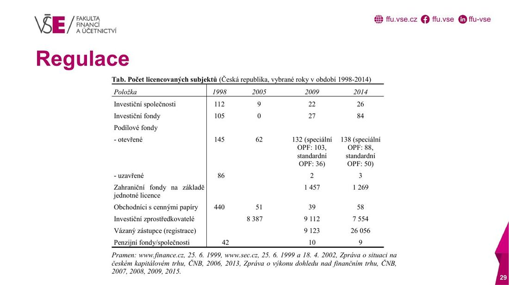
Investiční společnosti: $\frac{112 - 9}{112} = 0{,}920$, tedy pokles o 92 % (1998 → 2005).
Obchodníci s CP: $\frac{440 - 51}{440} = 0{,}884$, tedy pokles o 88 % (1998 → 2005).
Vázaní zástupci: $\frac{26\,056}{9\,123} \approx 2{,}86$, takže téměř 3krát víc (2009 → 2014).
Kontrola součtu otevřených podílových fondů: 2009: $103 + 36 = 139$, na slajdu je ale celkem 132. 2014: $88 + 50 = 138$, což sedí.
U otevřených podílových fondů v roce 2009 se speciální (103) a standardní (36) fondy nesečtou na uvedených 132, ale na 139. Pokud se test ptá na čísla, opřete se spíš o řád a trend (prudký pokles po roce 1998, růst vázaných zástupců).
- Důvody regulace: tržní selhávání (informační asymetrie, záporné externality, monopol) a nepoctivé praktiky. Prvky: vstup do odvětví, informační povinnosti, nepoctivé praktiky.
- Regulace = pravidla (primární zákony, sekundární vyhlášky a metodiky). Dohled = kontrola a vynucování.
- IOSCO 1998: ochrana investorů, spravedlivé a transparentní trhy, omezení systémového rizika.
- Čtyři modely dohledu: jednotný, odvětvový, v centrální bance, funkcionální. Znát hlavní výhodu a nevýhodu: konflikt cílů u centrální banky, arbitráž u odvětvového, překryvy u funkcionálního.
- ESFS: ESRB (systémová rizika, bez právní subjektivity, varování) + EBA, ESMA, EIOPA (právní subjektivita, technické normy, ESMA dohlíží na ratingy) + národní úřady.
- La Porta a López-de-Silanes: dobré právo je základ trhu, špatné vede ke koncentrovanému vlastnictví. Čtyři formy vyvlastnění menšinových akcionářů.
- ČR: MF (1993) → Úřad pro cenné papíry (1997) → Komise pro cenné papíry (1998) → ČNB (od 1. 4. 2006). Nástroje ČNB: licence, informace, kontrola, předběžná opatření, nápravná opatření a pokuty.
3. Instrumenty kolektivního investování
Přednáška 8. 10. (odhad) · P. Musílek · zdroj: Instrumenty kolektivního investování (1BP404_03A_prednaska.pptx, čísla slajdů v závorkách); doplňky označené jako doplněk: Musílek (2011) kap. 21–23 a obecná literatura
Kolektivní investování je nákup „na půl“ s tisíci dalších lidí: každý přidá své peníze, profesionál je investuje a výnos se rozdělí podle toho, kolik kdo vložil. Téma odpovídá na čtyři otázky: proč fondy vznikly a rostou, jak se dělí na otevřené a uzavřené (včetně ETF a hedgeových fondů), jak je upravuje český zákon (ZISIF) a jak velký je český trh.
Odkud se kolektivní investování vzalo a proč roste
První fond vznikl už v roce 1774 (doplněk: v Nizozemsku, spolek „Svornost vytváří sílu“) a první otevřený fond v roce 1924 (doplněk: Massachusetts Investors Trust v USA, s. 3). Skutečný boom ale přišel v 90. letech a na počátku 21. století. V transformujících se zemích, jako je Česko, bylo kolektivní investování navíc součástí privatizace. Čísla jsou výrazná: světová aktiva fondů vzrostla z 9,6 bil. USD (1998) na 40,4 bil. USD (2016), tedy čtyřnásobně. Česko vyrostlo z 0,6 na 9 mld. USD, tedy 15krát (s. 4–6). Počet otevřených fondů ve světě stoupl z 22 tis. (1992) přes 53 tis. (2000) na 110 tis. (2016), nejvíc jich je v Lucembursku (14 tis.), USA, Koreji a Japonsku (s. 7–10).
Svět: $40\,364 / 9\,595 = 4{,}2$, tedy čtyřnásobek (s. 4).
Podíl USA: v 1998 $5\,525 / 9\,595 = 57{,}6\,\%$, v 2016 $18\,868 / 40\,364 = 46{,}7\,\%$. USA sice rostly, ale ještě rychleji rostla Evropa (Lucembursko 3 901 mld. USD) a Asie (s. 5–6).
Česko: $9 / 0{,}6 = 15$krát (s. 4–6).
Proč investoři fondy tak rádi používají? Hlavně proto, že za malé peníze získají to, co by sami těžko zajistili: profesionální správu, diverzifikaci a nízké náklady. Stát se k tomu přidává tím, že péči o důchod přenáší na jednotlivce (tzv. sociální odpovědnost domácností).
- výnos, riziko a likvidita,
- profesionální správa úspor,
- diverzifikace,
- nízké náklady,
- nabídka investičních strategií,
- sociální odpovědnost domácností (stát přenáší péči o důchod na jednotlivce),
- jednoduchost a flexibilita.
Zadarmo to ale není. Na slajdu 12 jsou tři rizika. Tržní riziko je jasné: hodnota podílu kolísá s trhem. Dále neexistují garanční systémy: bankovní vklady jsou pojištěné, podíly ve fondu ne. Majetek ale hlídá depozitář, který ho drží odděleně od správce, takže správce s penězi „neuteče“. Třetím rizikem je konflikt zájmů mezi investorem a správcem portfolia.
U fondu není garanční systém, který by vrátil peníze jako u bankovního vkladu. Depozitář chrání před zneužitím majetku, ne před poklesem cen.
Jak se fondy dělí
Fondy se člení podle několika hledisek (s. 13): investiční × podílový model, uzavřený × otevřený model, podle předmětu investování, podle způsobu rozdělování výnosů (doplněk: růstové × dividendové fondy) a podle strategie na aktivně × pasivně spravované. Nejdůležitější je rozdíl otevřený × uzavřený, protože z něj plynou skoro všechny další vlastnosti.
Otevřené a uzavřené fondy
Rozdíl je v jedné otázce: jak se z fondu dostanu ven? U otevřeného fondu jdu za správcem a on mi podíl odkoupí. U uzavřeného musím najít kupce na trhu, jako kdybych prodával akcii.
Počet podílů není omezen a podílník má právo na zpětný odkup za poslední ocenění (s. 30).
Objem emise je omezen počtem nebo dobou emise. Podílník právo na odkup nemá a podíl prodává na trhu (s. 30).
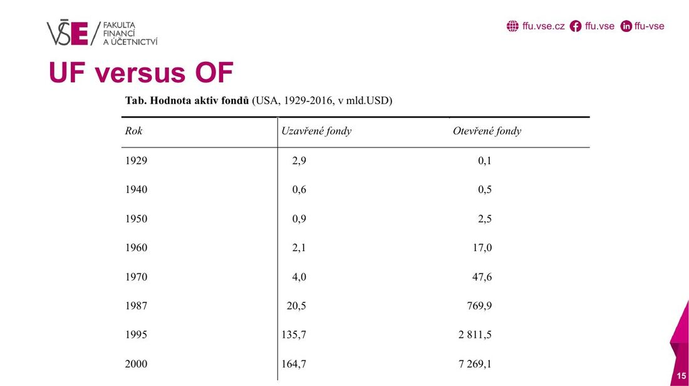
V roce 2016 (s. 15–16): $262 / (262 + 16\,344) = 1{,}6\,\%$. Uzavřené fondy tvoří z amerického součtu jen asi 1,6 %. V roce 2000 to bylo $164{,}7 / (164{,}7 + 7\,269{,}1) = 2{,}2\,\%$.
Doplněk (obecná definice): $$\text{NAV na podíl} = \frac{\text{aktiva} - \text{závazky}}{\text{počet podílů}}$$ U otevřeného fondu se podíl vydává a odkupuje za NAV (± poplatky). U uzavřeného fondu cenu tvoří trh, a proto se může lišit od NAV (prémie nebo diskont).
Uzavřený fond má aktiva 520 mil. Kč, závazky 20 mil. Kč a 10 mil. akcií, akcie se obchoduje za 42 Kč.
- NAV = (520 − 20) / 10 = 50 Kč (závazky se odečítají).
- Diskont = (42 − 50) / 50 = −16 %, dělí se NAV, ne cenou.
ETF: fond, který se obchoduje jako akcie
ETF je zajímavý hybrid. Je to pasivní fond, který kopíruje index, ale jeho podíly se obchodují na burze jako akcie. Můžeš tedy koupit „celý index“ jedním pokynem během dne. Tradiční indexový fond naproti tomu odkupuje jen správce a za cenu na konci dne.
Pasivně spravovaný fond obchodovaný na burze jako akcie. Doplněk: cenu blízko NAV drží arbitráž oprávněných účastníků, kteří vytvářejí a ruší podíly výměnou za koš akcií.
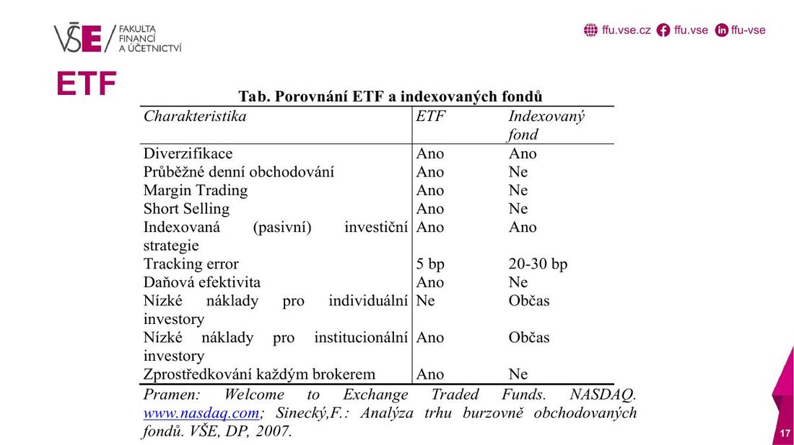
- společné: diverzifikace, pasivní správa podle indexu,
- jen ETF: obchod průběžně během dne, margin trading a short selling, daňová efektivita,
- tracking error: ETF 5 bp, indexovaný fond 20–30 bp,
- ETF jsou levné pro institucionální, ne pro drobné investory.
Tracking error je odchylka od indexu a měří se v bazických bodech (5 bp = 0,05 %). Nižší má ETF, ne indexovaný fond. Nepleť si ETF (obchoduje se na burze) s klasickým indexovaným fondem (odkup u správce).
Trh ETF rychle roste. V USA byl v 1993 jediný fond s 0,5 mld. USD, v 2000 už 80 fondů a 65,5 mld., a v 2016 1 716 fondů a 2 524 mld. USD (s. 18). V Evropě (Deutsche Börse, s. 19) vzrostl počet ETF z 2 (2000) na 1 132 (2016) a objem na 450 mld. EUR.
Hedgeové fondy a jejich regulace po krizi
Hedgeové fondy jsou protipól ETF: aktivní, méně regulované a jen pro bohaté. Smějí hodně riskovat, a proto je po finanční krizi začali regulovat.
Méně regulovaný fond pro bohaté a profesionální investory. Doplněk: smí používat pákový efekt, krátké prodeje a deriváty, cílí na absolutní výnos a účtuje typicky „2 a 20“ (2 % z majetku ročně + 20 % ze zisku).
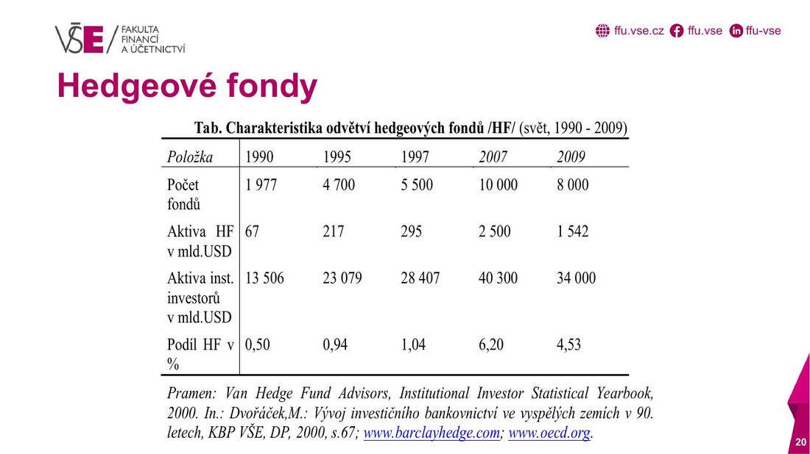
V USA (Dodd-Frank Act, s. 21–22) se správci HF a privátních fondů musí registrovat: nad 150 mil. USD u SEC, při 25–150 mil. USD na státní úrovni. Výjimky mají zahraniční správci s málo klienty v USA a správci rizikového kapitálu a rodinných fondů. Registrovaní i neregistrovaní správci musí sbírat a předávat dohledu údaje (aktiva, zadlužení, riziko protistran). V EU to řeší směrnice o správcích alternativních investičních fondů (AIFMD, s. 23–24).
| USA (Dodd-Frank, s. 21–22) | EU (AIFMD, s. 23–24) | |
|---|---|---|
| Co se chce | registrace správců | povolení správce |
| Hranice | nad 150 mil. USD → SEC, 25–150 mil. USD → stát | bez povolení jen fondy do 100 mil. EUR, nebo do 500 mil. EUR, pokud nepoužívají páku a zpětný prodej je delší než 5 let |
| Další | reporting aktiv, zadlužení, rizik protistran | jen profesionální investoři, nezávislý oceňovatel, kapitálové požadavky, řízení rizik, hlášení pákových pozic, povolení pro fondy ze třetích zemí |
České kolektivní investování: ZISIF
Od roku 2013 platí v Česku nový zákon, který z velké části přebírá evropské směrnice. Přepsal i základní dělení fondů, takže místo staršího „investiční × podílový fond“ dnes rozlišujeme fondy podle toho, komu a jak se smějí nabízet.
Zákon č. 240/2013 Sb., o investičních společnostech a investičních fondech, účinný od 19. 8. 2013. Převážně transponuje směrnice EU (AIFMD, UCITS IV a další, s. 26). Prováděcí nařízení vlády č. 243/2013 Sb. upravuje investování fondů (s. 32).
Zákon se nevztahuje jen na fondy pro veřejnost, ale i na společné investování několika málo společníků (s. 27). Rozhoduje velikost: pod 100 mil. EUR stačí registrace, nad 100 mil. EUR je potřeba licence. Zákon se nevztahuje na holdingy, správu rodinného majetku a důchodové, účastnické a penzijní fondy. Nová klasifikace pak místo „investiční × podílové fondy“ rozeznává fondy kolektivního investování (standardní a speciální) a fondy kvalifikovaných investorů.
Kolektivní investování je shromažďování peněz od veřejnosti vydáváním akcií investičního fondu nebo podílových listů, společné investování podle strategie a rozložení rizika. Investiční fond má akcie veřejně obchodovatelné, převoditelnost nelze omezit a zakládá se na dobu určitou (uvedenou ve statutu). Novinkou je investiční společnost s proměnným základním kapitálem (a.s., jejíž akcionář má právo na odkup akcií). Majetek spravuje sám, nebo ho svěří investiční společnosti.
Zřizuje ho investiční společnost jako otevřený nebo uzavřený. U otevřeného má podílník právo na odkup (lhůta u standardního fondu max. 2 týdny). Nové uzavřené podílové fondy jsou jen na dobu určitou (povoluje ČNB). Doplněk: podílový fond nemá právní subjektivitu.
Činnosti kolem fondu lze rozdělit mezi více institucí: administrátor a obhospodařovatel. Pro depozitáře platí odlišné požadavky podle typu fondu (s. 29).
| Fond | Maximum |
|---|---|
| standardní fond | 2 týdny od žádosti |
| speciální fond | 1 měsíc |
| fond kvalifikovaných investorů | 1 rok |
| nemovitostní fond | 2 roky |
Pravidlo: čím víc fond drží méně likvidních věcí (nemovitosti) nebo míří na zkušenější investory, tím delší je lhůta.
Standardní a speciální fond: kdo smí kam investovat
Oba typy jsou určené veřejnosti. Standardní fond je český název pro evropský UCITS: splňuje právo EU, je v seznamu ČNB a lze ho nabízet v celé EU. Speciální fond tyto požadavky nesplňuje, a proto může víc, třeba investovat do nemovitostí. Cenou za pružnost jsou volnější limity, tedy vyšší riziko pro investora. Standardní fond má přísnější pravidla (s. 32).
| Standardní fond (UCITS) | Speciální fond | |
|---|---|---|
| Definice | splňuje právo EU a je v seznamu ČNB, lze nabízet v celé EU | nesplňuje požadavky práva EU a není v seznamu ČNB |
| Forma | jen otevřený | otevřený i uzavřený |
| Investice | investiční cenné papíry, nástroje peněžního trhu, IPO, max. 10 % portfolia v cenných papírech jiného standardního fondu, speciální fondy, deriváty, vklady do 1 roku | investiční cenné papíry, peněžní trh, deriváty, nemovitosti a účasti v nemovitostních společnostech (oceňují znalci) |
| Limit na jednoho emitenta | 5 % portfolia | 20 % portfolia |
| Výjimky | až 10 % u 40 % portfolia; veřejný sektor 35 %; bankovní dluhopisy jednoho emitenta 25 % | bankovní dluhopisy 25 %; veřejný sektor 35 %; 1 nemovitost max. 20 %, 1 účast v nemovitostní společnosti max. 30 % |
Fond má majetek 200 mil. Kč. Kolik smí dát do akcií jedné firmy?
- Standardní fond: $0{,}05 \cdot 200 = 10$ mil. Kč.
- Speciální fond: $0{,}20 \cdot 200 = 40$ mil. Kč.
- Výjimka u standardního fondu: u části portfolia do 40 % může jít jedna firma až na 10 % (tedy 20 mil. Kč).
Fondy kvalifikovaných investorů (FKI)
FKI jsou nejvolnější kategorie. Podle úpravy z roku 2013 nejsou součástí kolektivního investování (s. 35) a smějí je kupovat jen lidé a instituce, které si rizika opravdu uvědomují.
Finanční instituce, právnická nebo fyzická osoba, která prohlásí ochotu přijmout rizika strategie. Minimální investice 125 tis. EUR.
Právní forma (s. 36–39) může být právnická osoba se sídlem v ČR, podílový fond, svěřenský fond nebo kvalifikovaný fond rizikového kapitálu a sociálního podnikání. Celkem jde o podílový fond, svěřenský fond, k.s., s.r.o., a.s., evropskou společnost nebo družstvo. Investiční limity jsou volnější (s. 40): FKI s kapitálem do 100 mil. EUR bez zajištěné diverzifikace nesmí dát více než 30 % portfolia do cenných papírů jednoho druhu od jednoho emitenta nebo do jedné komodity. Nemovitost smí v okamžiku nákupu tvořit max. 30 % portfolia.
Minimum pro FKI je podle slajdů 125 tis. EUR (ne 1 mil. Kč, jak uváděla starší verze poznámek z literatury). Standardní fond = UCITS, speciální fond = mimo UCITS, FKI = mimo kolektivní investování.
UCITS IV a novela ZoKI
Směrnice UCITS IV (2009) zjednodušuje přeshraniční aktivity fondů, umožňuje konsolidaci evropského trhu a zlepšuje informovanost investorů. Do českého zákona ji přenesla novela č. 188/2011 Sb. (s. 41). Přinesla tři věci, které se v testu hodí.
Řídící a podřízený fond: podřízený standardní fond investuje alespoň 85 % majetku do cenných papírů řídícího fondu (cíl: pooling majetku).
Uzavřené fondy lze zakládat i na dobu neurčitou, ale s povinností odkupu po 10 letech od vzniku a pak aspoň každých 24 měsíců. Statut může dát právo na odkup.
Dokument od 7/2012 s investičním cílem, způsobem investování, historickou výkonností, náklady a poplatky. Dostanou ho písemně investoři standardních i speciálních fondů (elektronicky jen se souhlasem klienta). Nahrazuje nepřehledné zjednodušené prospekty.
Navíc se zpřísnila pravidla pro investiční společnosti a zlepšil se služební a produktový pas (s. 42–43). Vyhláška č. 193/2011 Sb. (s. 43) zároveň rozlišuje dvě kategorie fondů peněžního trhu podle toho, jak dlouho smějí držet majetek.
| Fond | Zbytková splatnost jednoho cenného papíru | Vážená průměrná životnost majetku |
|---|---|---|
| krátkodobý fond peněžního trhu | max. 397 dní | max. 120 dní |
| fond peněžního trhu | max. 2 roky | max. 12 měsíců |
Jak velký je český trh
Český trh kolektivního investování poznamenala globální finanční krize. Majetek v tuzemských otevřených podílových fondech byl 173 mld. Kč (2007), pak klesl na 121 (2008) a 117 mld. (2009). Zahraniční fondy držené tuzemci šly stejným směrem (142 → 123 → 117 mld. Kč). Od 2012 přišel výrazný růst a koncem 2016 bylo v obou skupinách dohromady asi 432 mld. Kč (s. 44). Zároveň rostl i počet subjektů: investiční společnosti z 15 na 39, investiční fondy s právní osobností ze 4 na 183, podílové fondy z 66 na 237 a zahraniční fondy s evropskou licencí ze 723 na 1 503 (2003 → 2020, s. 31, 45).
Konec 2016 (s. 44): domácí 236,5 + zahraniční 195,5 = 432 mld. Kč.
9/2020 (s. 46): celkem 559 mld. Kč. Smíšené fondy $217 / 559 = 38{,}8\,\%$, dluhopisové $153 / 559 = 27{,}4\,\%$, akciové $123 / 559 = 22{,}0\,\%$. Tuzemské fondy $355 / 559 = 63{,}5\,\%$ (zahraniční 36,5 %).
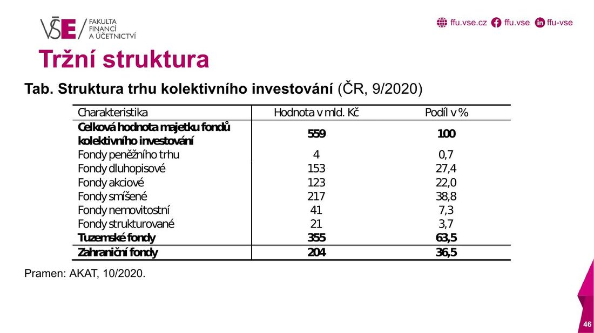
- Aktiva fondů ve světě vzrostla v letech 1998–2016 čtyřnásobně na 40,4 bil. USD. Důvody: diverzifikace, profesionální správa, nízké náklady. Rizika: tržní, bez garančního systému (je ale depozitář), konflikt zájmů.
- Otevřený fond podíly odkupuje, uzavřený ne. V USA dnes výrazně převažují otevřené fondy.
- ETF × indexovaný fond: ETF se obchoduje průběžně, má short selling a margin, tracking error 5 bp (indexový fond 20–30 bp).
- HF po krizi: USA registrace u SEC nad 150 mil. USD; EU (AIFMD) povolení správců, jen pro profesionály, nezávislý oceňovatel.
- ZISIF 240/2013: registrace pod 100 mil. EUR, licence nad. Standardní fond (UCITS, jen otevřený, 5 % na emitenta), speciální fond (20 %), FKI (min. 125 tis. EUR, mimo kolektivní investování).
- Lhůta odkupu: standardní 2 týdny, speciální 1 měsíc, FKI 1 rok, nemovitostní 2 roky. Master-feeder 85 %, KII od 7/2012.
- Trh ČR 9/2020: 559 mld. Kč, nejvíc smíšené fondy (38,8 %), vedou Česká spořitelna, ČSOB a KB.
4. Dluhové instrumenty
Přednáška 15. 10. (odhad) · doc. Stádník · zdroj: Dluhové instrumenty (1BP404_09_prednaska.pptx, s. 1–54; prezentace v šabloně P. Musílka, autor není na slajdech uveden jinak)
Téma má tři části, které na sebe navazují (s. 2): dluhové trhy a dluhopisy, rating a krizová regulace ratingových agentur. Nejdřív zjistíme, co je dluhopis a kolik je dluhopisů na světě. Pak se podíváme na agentury, které firmám a státům dávají známku za spolehlivost. Nakonec uvidíme, proč tahle známka v krizi selhala a jak ji svět začal hlídat.
Proč jsou dluhové trhy důležité
Když se mluví o kapitálových trzích, většina lidí si představí akcie. Ve vyspělých zemích je ale dluhopisový trh větší než akciový. V USA byla roku 2008 tržní hodnota dluhopisů 30 658 mld. USD proti kapitalizaci akcií 11 738 mld. USD. V eurozóně to bylo 23 793 proti 4 985 mld. USD (s. 3–4). Ve světě celkem šlo o 83 529 mld. USD dluhopisů, 33 513 mld. akcií a 97 381 mld. bankovních aktiv. V emerging markets je poměr vyrovnanější (7 815 dluhopisy, 8 559 akcie).
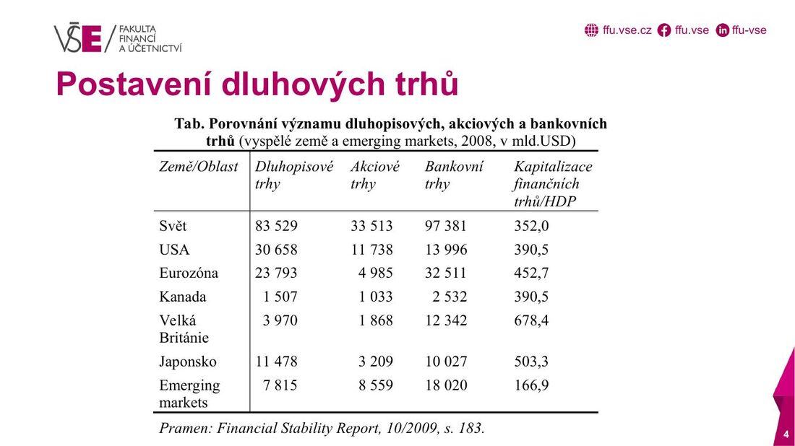
Dluhové trhy se dělí na dvě části. Peněžní trhy jsou obchody s krátkodobými penězi a krátkodobými dluhovými instrumenty: státní pokladniční poukázky, depozitní certifikáty a komerční papíry. Dluhopisové trhy jsou dluhopisy veřejného sektoru, bankovní dluhopisy a dluhopisy korporací.
Co je dluhopis a podle čeho se pozná
Dluhopis je v podstatě půjčka rozdělená na obchodovatelné kousky. Investor, který dluhopis koupí, půjčuje peníze emitentovi a dostává za to právo na splacení. Jak přesně se splácí, určuje emisní prospekt, takže ho můžeš brát jako smlouvu, která o dluhopisu říká všechno důležité.
Dluhopis je „cenný papír, s nímž je spojeno právo na splacení dlužné částky a povinnost emitenta toto právo uspokojit“. Podmínky emise určuje emisní prospekt.
Prospekt (s. 7–8) obsahuje emitenta, měnu (domácí dluhopis, zahraniční dluhopis, eurodluhopis), hodnotu, rozdělení emise, formu důchodu, dobu životnosti, termín a formu upsání, emisní kurs, metody splacení, záruky, svěřeneckou jistotu a formu obchodů. Zajímavé jsou hlavně forma důchodu a způsob splácení, protože se podle nich dluhopisy liší nejvíc.
Slajd uvádí tři základní formy: straight bond (běžný dluhopis), FRN (dluhopis s pohyblivým kupónem, floating rate note) a zero bond (bez kupónu). Rozdíl mezi nimi je v tom, jak a jestli investor dostává úrok.
- umořovací plán určuje, v jakých splátkách se dluh splácí,
- sinking fund (umořovací fond): emitent průběžně odkládá peníze na splacení,
- purchase fund: povinnost zpětného odkupu,
- call bond: emitent může dluhopis předčasně splatit,
- put bond: investor může požádat o předčasné splacení.
Pamatuj si, čí je volba. U call bondu rozhoduje emitent (může dluh splatit dřív), u put bondu investor (může chtít peníze zpátky dřív). Právo předčasného splacení má ten, kdo o něm rozhoduje.
Na slajdu 9 jsou ještě zvláštní druhy dluhopisů: s indexovanými splatnými částkami (bull and bear bond), svlečený dluhopis (stripped bond, kupóny a jistina se obchodují zvlášť), prašivý (junk bond), konvertibilní (convertible bond), opční (bond with warrant) a hypoteční zástavní listy.
Doplněk (Musílek 2011): konvertibilní dluhopis lze vyměnit za akcie emitenta a dluh tím zaniká. Opční dluhopis má oddělitelný warrant na dokoupení akcií a dluh trvá dál. Oba mají nižší kupón než běžný dluhopis. Junk bond je dluhopis s ratingem pod investičním stupněm (viz níže).
Kolik dluhopis stojí
Slajd 10 říká jednu větu: hodnota dluhopisu je současná hodnota budoucích příjmů. Za dluhopis dnes dáš jen tolik, kolik jsou dnes „ceny“ všech plateb, které z něj dostaneš. Hodnotu ovlivňují tři věci: výše příjmů z dluhopisu, časování těchto příjmů a tržní úroková sazba.
$$P = \sum_{t=1}^{n} \frac{C}{(1+r)^t} + \frac{N}{(1+r)^n}$$
$C$ je kupón, $N$ nominál, $r$ požadovaný výnos a $n$ počet let. Každá platba se diskontuje na dnešek.
Doplněk (Musílek 2011, kap. 20; slajdy dál nerozvádějí): když sazby rostou, cena dluhopisu klesá. Kupón vyšší než požadovaný výnos znamená cenu nad nominálem, nižší znamená cenu pod nominálem.
Nominál 1 000 Kč, kupón 5 % ročně, splatnost 3 roky, požadovaný výnos 4 %. Platby jsou 50, 50 a 1 050 Kč (poslední je kupón plus nominál).
$$P = \frac{50}{1{,}04} + \frac{50}{1{,}04^2} + \frac{1050}{1{,}04^3} = 48{,}08 + 46{,}23 + 933{,}45 = \mathbf{1\,027{,}75}\ \text{Kč}$$
Kupón (5 %) je vyšší než výnos (4 %), cena je proto nad nominálem.
Doplněk (Musílek 2011): modifikovaná durace udává přibližnou změnu ceny při změně výnosu: $\frac{\Delta P}{P} \approx -D_{mod}\cdot\Delta r$. Při $D_{mod}=6$ a růstu výnosu o 0,5 p. b. cena klesne zhruba o $6 \cdot 0{,}5 = 3\,\%$. Delší splatnost a nižší kupón znamenají vyšší duraci.
Kdo dává dluhopisům známku: ratingové agentury
Investor, který kupuje dluhopis, musí vědět, jestli mu dlužník peníze vrátí. Většina investorů si to nemůže ověřit sama, a proto existují ratingové agentury. První vznikly v polovině 19. století a původně hodnotily jen bonitu emitentů dluhových papírů. Agentur je dnes několik desítek, ale trh má oligopolní charakter: ovládají ho tři globální, Moody’s, Standard & Poor’s a Fitch (s. 11).
- Moody’s: založil John Moody 1909, téměř 40 % světového trhu, kótována na NYSE, významní vlastníci Berkshire Hathaway a Davis Selected Advisers.
- S&P: nejstarší agentura (1860, H. V. Poor vydal History of Railroads and Canals in the United States), tvoří také akciové indexy, divize Capital IQ, od 2016 S&P Global.
- Fitch: založil J. K. Fitch 1913, centrály New York a Londýn, 1997 spojení s IBCA, 2000 převzetí chicagské agentury Duff and Credit Rating Co. (název podle slajdu) a ThomsonBankWatch.
Co rating je a kdo za něj platí
Rating zařadí bonitu emitenta dluhového instrumentu podle standardizovaného systému do určité skupiny, nejen ji slovně popíše. Vyjadřuje pravděpodobnost, že emitent bude schopen pravidelně plnit své závazky. Hodnotí se státní, bankovní, podnikové a municipální dluhopisy, sekuritizované a strukturované produkty, pokladniční poukázky, komerční papíry, depozitní certifikáty i smlouvy životního pojištění a penzijní produkty.
Důležité je, kdo agenturu platí. Dnes převládá model issuer-pays: o rating žádá emitent, který chce co nejlepší známku, protože vysoký rating mu umožní získat kapitál za nižších nákladů. Je to flexibilní, ale agentura závisí na provizích od těch, které hodnotí. Tak vzniká konflikt zájmů (s. 19). Dřívější model investor-pays (investor zadá analýzu emise) byl časově i finančně náročný (s. 20).
| Issuer-pays | Investor-pays | |
|---|---|---|
| Kdo platí | emitent | investor |
| Kdy se používal | dnes převažuje | dříve |
| Výhoda | flexibilita | nezávislost na emitentovi |
| Problém | konflikt zájmů, závislost na provizích | časová a finanční náročnost |
Řádek „výhoda“ u investor-pays je můj závěr z logiky věci, slajd ho nezmiňuje.
K ratingu patří ještě několik pojmů (s. 21). Zvlášť se hodnotí dlouhodobé závazky (dluhopisy) a krátkodobé (komerční papíry, depozitní certifikáty). Ke známce se přidává výhled (pozitivní, stabilní, negativní). Stupnice se dělí na investiční (investment grade) a neinvestiční stupeň (non-investment grade). Split rating je rozštěpený rating, když se agentury v hodnocení liší.
Jak vypadá ratingová stupnice
Stupnice jde od nejlepší známky po stav, kdy emitent už neplatí. Dlouhodobé stupně (s. 22–25) se dají rozdělit do čtyř skupin: dvě investiční a dvě neinvestiční.
| Skupina | Moody’s | S&P | Význam |
|---|---|---|---|
| Investiční: 1. vysoký stupeň | Aaa | AAA | nejvyšší kvalita, velmi vysoké úrokové krytí |
| Aa | AA | vysoká kvalita, krytí nižší než u první skupiny | |
| Investiční: 2. průměrný stupeň | A | A | vyšší střední kvalita |
| Baa | BBB | přiměřená schopnost splácet, změna podmínek ji může výrazně snížit | |
| Neinvestiční: 3. spekulativní | Ba | BB | spekulativní prvky, budoucí plnění nejisté |
| B | B | dlouhodobé plnění nejisté | |
| Neinvestiční: 4. promeškaný | Caa | CCC | nízká kvalita, nebezpečí nesplacení |
| Ca | CC | vysoce spekulativní emise | |
| C | C | většina plateb bude v prodlení | |
| – | D | všechny platby v prodlení; NR = rating nevydán |
Moody’s: P-1, P-2, P-3, jinak NP (neinvestiční). S&P: A-1, A-2, A-3, dále B, C, R (zvláštní finanční režim), SD/D (selektivní/úplná platební neschopnost) a NP (nehodnoceno).
Hranice leží mezi BBB (Baa) a BB (Ba). BBB je nejnižší investiční, BB je už spekulativní. Slajdy uvádějí jen hlavní stupně bez znamének (BBB−, Baa3 jsou doplněk z běžné praxe).
Rating a čísla firmy: příklad Chrysler
Rating není jen názor. Odráží finanční ukazatele a podle slajdu 29 platí: čím horší rating, tím horší ukazatele. Úrokové krytí klesá z 7,48 (AAA) na 0,75 (CCC) a poměr dlouhodobého dluhu k vlastnímu jmění roste z 8,9 % na 69,3 % (S&P 1983–85).
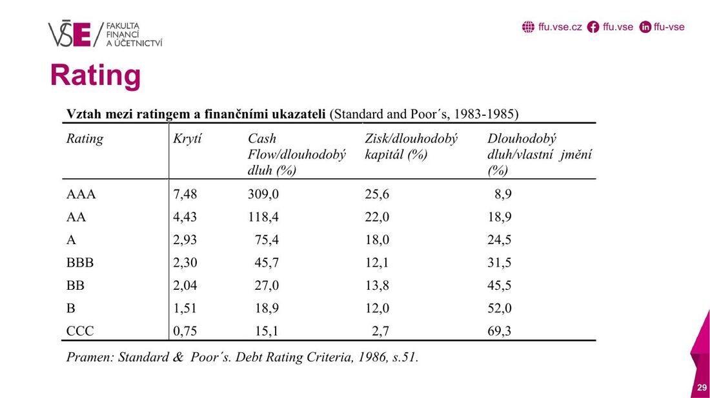
V březnu 1979 má dluhopis rating BBB, kurs 75 1/8 a výnos do splatnosti 12,50 %. Do března 1982 klesne rating na CCC, kurs na 39 3/8 a výnos vzroste na 24,50 %.
$$\frac{75{,}125-39{,}375}{75{,}125}\approx 47{,}6\ \%$$
Cena tedy spadla o 47,6 %. Po zlepšení ratingu na BBB (březen 1985) je kurs 80 1/2 a výnos 12,31 %. Odnést si: rating a výnos dluhopisu se pohybují proti sobě, cena s ratingem. Spolu s ratingem padala i cena akcie a dividendy byly zrušeny.
K čemu rating slouží a jak dobře funguje
Agentury mají pro finanční systém několik přínosů (s. 34–35): snadno měří relativní bonitní riziko, zlevňují správu aktiv (institucionální investoři nemusí dělat vlastní analýzy), umožnily rozvoj sekuritizovaných a strukturovaných produktů, zlepšují risk management investičních firem a mají regulatorní roli v Basel II (kapitálová přiměřenost).
U podnikových dluhopisů rating dlouho fungoval. Starší výzkumy (Horrigan 1966, Pogue a Soldofsky 1969, Pinches a Mingo 1973) ukázaly, že agentury riziko emitentů hodnotily správně. Nižší rating a delší splatnost znamenají vyšší podíl nesplacených emisí (s. 36–37).
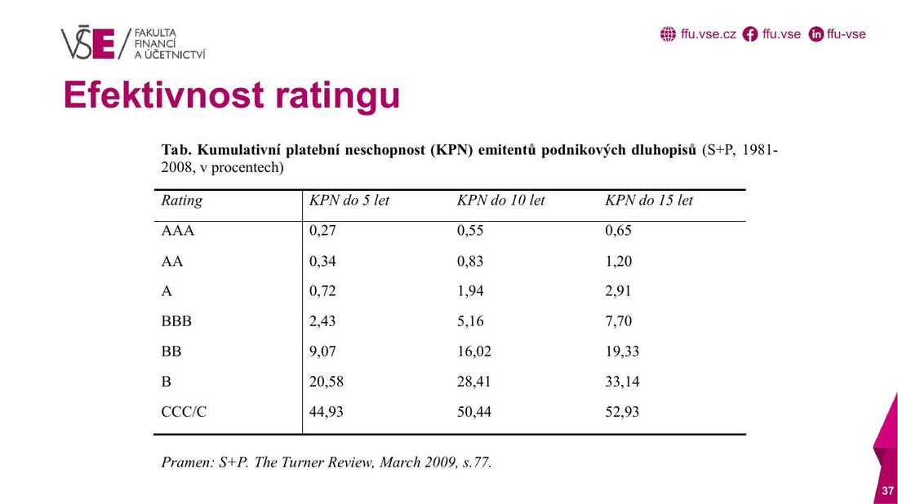
Tabulka na s. 37 se čte dvěma směry. Dolů po ratingu se podíl nesplacených emisí zvyšuje (0,27 % u AAA proti 44,93 % u CCC/C po 5 letech). Doprava po délce období se zvyšuje taky (u ratingu B 20,58 → 28,41 → 33,14 %). Čím horší rating a čím delší doba, tím větší šance, že emitent nezaplatí.
Selhání ratingu strukturovaných produktů
U podnikových dluhopisů rating fungoval, u strukturovaných produktů se ukázal jako velmi nespolehlivý (s. 38). V roce 2007 bylo sníženo jen 1,0 % produktů s ratingem AAA, v roce 2008 už 23,4 %. U CCC to bylo 34,9 % a 78,5 % (s. 39–40). Původní ratingy byly tedy příliš optimistické.

- snížení ratingu AIG spustilo výprodej strukturovaných produktů, ceny a likvidita se zhroutily. Rating přitom hodnotí jen platební schopnost, ne tržní riziko a nelikviditu,
- krátké časové řady dat o strukturovaných produktech,
- nadměrné spoléhání na statisticko-matematické metody,
- konflikt zájmů mezi ratingem a poradenstvím,
- procyklický efekt ratingu,
- selhání etiky: chyběly „čínské zdi“ mezi poradenstvím a ratingem, zaměstnanci byli zainteresováni na co největším počtu ratingů placených emitenty, existovalo netransparentní propojení s lukrativními klienty.
Mnoho příčin má společný kořen. Když agenturu platí emitent, vyplatí se jí vydávat co nejvíc ratingů a nekazit si vztah s klienty. To vysvětluje konflikt zájmů, slabé „čínské zdi“ i optimistické známky strukturovaných produktů. Tuto souvislost slajdy samy takhle nevyslovují, je to spojení příčin z s. 19 a 43.
Jak se ratingové agentury regulují
Před krizí byla regulace slabá. IOSCO vydala roku 2004 kodex Code of Conduct Fundamentals for CRAs (kvalita a integrita ratingu, nezávislost, předcházení konfliktu zájmů), ale měl jen doporučující charakter (s. 45). Po krizi se agentury dostaly do standardní regulace a dohledu a samy přijaly kodexy: S&P zřídila ombudsmana, nezávislý interní audit a rotaci analytiků, Fitch oddělila poradenství do zvláštní divize (s. 46).
Credit Rating Agency Reform Act (2006) uložil SEC určit pravidla pro statut NRSRO (Nationally Recognized Statistical Rating Organization) a regulovat vnitřní procesy, třeba konflikt zájmů. Zároveň ale zakázal SEC dohlížet na metodologii ratingu. Dodd-Frank Act (část 9) rozšířil pravomoci SEC a uložil agenturám informační povinnosti (zprávy o interní kontrole, zveřejňování úspěšnosti ratingu, odkrytí metodologie) a kontrolní mechanismy.
Nařízení o ratingových agenturách (2009), účinné od října 2009. Cíle:
- nezávislost agentur a omezení střetu zájmů (zákaz poradenství hodnoceným osobám, rotace analytiků),
- interní kontrola (nezávislé osoby ve správních orgánech, oddělení compliance),
- kvalita ratingu a každoroční zpráva o transparentnosti,
- pravidla pro využití ratingů v regulaci a informační povinnost,
- registrace (standardní licenční režim) a standardní dohled,
- jednotný evropský trh ratingů: rating z jedné země lze využívat bez další notifikace v ostatních členských státech.
- žádost o registraci do počátku září 2010,
- od prosince 2010 smějí finanční instituce pro regulaci používat jen ratingy agentur registrovaných v EU,
- na základě nařízení z roku 2011 má výlučný dohled ESMA a navrhuje regulační technické normy pro Komisi,
- omezení používání ratingů finančními institucemi, transparentnější ratingy vládních dluhů,
- povinná rotace agentur alespoň jednou za 3 roky a vyšší odpovědnost agentur.
Obě regulace míří na tytéž problémy (konflikt zájmů, netransparentnost), ale liší se v klíčovém bodě. V USA SEC nesmí regulovat metodologii ratingu (zákon z 2006), zatímco v EU dohlíží celoevropsky ESMA a emitenti musí agentury střídat po 3 letech.
- „Kdo platí agenturu?“ → v převažujícím modelu issuer-pays, proto konflikt zájmů.
- Rating dobře seřadil emitenty podle rizika (tabulka s. 37), ale selhal u strukturovaných produktů.
- SEC nesmí regulovat metodologii. V EU dohlíží ESMA a agentury se střídají po 3 letech.
- Nejnižší investiční stupeň je BBB / Baa.
- Dluhopisový trh je ve vyspělých zemích větší než akciový. Dluhové trhy dělíme na peněžní a dluhopisové.
- Dluhopis = právo na splacení dluhu, podmínky určuje emisní prospekt. Hodnota = současná hodnota budoucích příjmů. Call bond: volba emitenta, put bond: volba investora.
- Trh ratingu ovládají Moody’s, S&P a Fitch. Převládá issuer-pays s rizikem konfliktu zájmů.
- Stupnice: investiční AAA až BBB, neinvestiční BB až D. Krátkodobě P-1 až P-3 (Moody’s) a A-1 až A-3 (S&P).
- Rating dobře řadí riziko (podíl nesplacených emisí roste s horším ratingem i délkou období), selhal u strukturovaných produktů 2007–2008.
- Regulace: IOSCO 2004 (doporučení), USA CRA Reform Act 2006 a Dodd-Frank, EU nařízení 2009 a dohled ESMA (2011).
5. Penzijní fondy a investiční management
Přednáška 22. 10. (odhad) · P. Musílek · zdroj: Penzijní fondy (1BP404_03B_prednaska.pptx), České penzijní finance (1BP404_03C_prednaska.pptx), Investiční management (1BP404_04_prednaska.pptx); odkazy: 03B s. N, 03C s. N, 04 s. N. Doplněk = Musílek (2011) a obecná literatura (slajdy ho neobsahují)
Téma má dvě poloviny a obě odpovídají na otázku kdo spravuje dlouhodobé peníze lidí a jak se pozná, že to dělá dobře. V části A jsou penzijní fondy: proč jsou jinde obří a v Česku malé, drahé a konzervativní a jak se systém u nás opakovaně předělával. V části B je investiční management: podle jakých pravidel portfolio manažer rozhoduje a jak se měří, zda byl úspěšný. Výpočty z části B (Sharpe, Treynor, Jensen) jsou důležité pro test i pro projekt.
Část A: Proč jsou penzijní fondy důležité
Penzijní fond je velký trpělivý investor. Lidé mu posílají peníze desítky let dopředu, takže může držet akcie a dluhopisy dlouho a kapitálový trh na tom roste. Rozdíly mezi zeměmi jsou obrovské (03B s. 3–4). Aktiva penzijních fondů v % HDP v roce 2016 dosáhla v Nizozemsku 180, v Kanadě 159, v USA 135 a ve Velké Británii 95. V České republice je to jen 8,4, v Německu 6,8 a v Rakousku 6,9.
Kde je hodně majetku v penzijních fondech, tam je hluboký kapitálový trh (viz téma 1). Podíl příjmů z kapitalizovaných pilířů na důchodových příjmech (OECD 2008) je v Kanadě 50,6 %, v Nizozemsku 46,5 %, v USA 45,1 %, průměr OECD je 19,5 % a v ČR jen 0,7 % (03B s. 5). Česko je tedy opak: slabé fondy, malý trh, málo dlouhodobých domácích investorů.
Průběžný systém (PAYG): dnešní pracující platí dnešním důchodcům. Je to redistribuce a pojištění, nic se nespoří. Kapitalizovaný systém: každý si spoří na vlastní důchod a peníze se investují. Průběžný systém nese riziko demografické a politické, kapitalizovaný riziko investiční a riziko selhání správce (03B s. 6).
Důvod, proč se o kapitalizaci mluví, je demografie. Ukazatel závislosti (poměr starých k lidem v produktivním věku) v EU-27 roste z 26 % (2010) na 53 % (2060), v ČR dokonce na 61 % (03B s. 7). Na jednoho starého pak připadá stále méně pracujících, takže je průběžný systém dlouhodobě neudržitelný.
Jak se kapitalizované systémy skládají a regulují
Penzijní systémy se liší ve třech věcech (03B s. 9–12). První je správa: státní, zaměstnanecké nebo nezávislé penzijní fondy, případně PPP. Druhá je forma účasti: dobrovolná, nebo povinná. Třetí je typ penzijního plánu: s definovaným příspěvkem, s definovanou dávkou, hybridní, nebo plán zaměstnaneckého vlastnictví akcií.
U plánu s definovaným příspěvkem (DC) je pevný příspěvek, výše důchodu závisí na výnosech a investiční riziko nese účastník. U plánu s definovanou dávkou (DB) je slíbena dávka a riziko nese fond nebo zaměstnavatel.
Stát do fondů zasahuje v pěti oblastech (03B s. 13): zvolí obezřetnostní nebo detailní přístup, reguluje zvlášť akumulační a výplatní fázi, omezuje investiční politiku, nastavuje systémy garancí (absolutní, relativní, garanční fondy, nabídka investičních strategií) a reguluje náklady.
Kam fondy investují a kolik to stojí
Podstatný rozdíl je v tom, co mají fondy v portfoliu. USA a Finsko drží zhruba 38–41 % akcií, Kanada 26 %. České fondy jsou naopak mimořádně konzervativní: 80 % dluhopisů a jen 1,6 % akcií (03B s. 14).

Akcie ovšem nejsou zadarmo. V krizi 2008 měly penzijní portfolia reálně záporný výnos: průměr OECD −23 %, Irsko −37,5 % (03B s. 15). Veřejné rezervní fondy za 2005–2009 vydělaly nominálně 3,6–6,9 % ročně, reálně 1,7–4,1 % (03B s. 16, 03C s. 8). Druhou stranou jsou operační náklady v % aktiv: Dánsko 0,2, Polsko 0,5, Velká Británie 0,8, Kanada 1,1 a ČR 4,7 (2008) (03B s. 17). Veřejné rezervní fondy stojí jen 0,03–0,25 % (výjimka Nový Zéland, asi 0,6–1,0; 03B s. 18).
Slajdy uvádějí operační náklady ČR dvěma sadami čísel (03B s. 17: 4,7 % v 2008; 03C s. 16: 3,1 % v 2008, 1,4 % v 2010). Jde o různé zdroje a metodiky. Pamatuj závěr (ČR několikanásobně dráž než Dánsko, Polsko či Nizozemsko), ne přesné číslo.
České penzijní připojištění: konzervativní a nevýnosné
České penzijní připojištění (III. pilíř, stará úprava) mělo přísná pravidla pro umístění peněz (03C s. 3–4). Prostředky se mají umísťovat s odbornou péčí (bezpečnost, kvalita, likvidita, rentabilita). Povolené jsou dluhopisy států OECD a mezinárodních institucí, podílové listy otevřených fondů, cenné papíry z regulovaných trhů OECD a nemovitosti.
- jeden emitent max. 10 % majetku (neplatí pro státní dluhopisy),
- rizikové nástroje max. 70 %,
- movité a nemovité věci max. 10 %,
- max. 20 % jmenovité hodnoty emise jednoho emitenta,
- min. 50 % majetku v měně závazků.
Zisk se rozděluje tak, že min. 5 % jde do rezervních fondů, max. 10 % podle valné hromady a zbytek ve prospěch účastníků. Ztráta se kryje nerozděleným ziskem, rezervami a nakonec snížením kapitálu, ne však pod 50 mil. Kč (03C s. 9). Fondy držely dluhopisy 86,7 % (2011) a 88,7 % (2016) a akcie jen 0,4 % (03C s. 5, 11). Účastníků bylo 4,6 mil. (2011) a 4,0 mil. v transformovaných fondech (2016) (03C s. 10). Průměrný měsíční příspěvek účastníka byl 606 Kč a státní 124 Kč (2016; 03C s. 13). Akviziční náklady na novou smlouvu vzrostly z 1 592 Kč (2007) na 4 249 Kč (2011) (03C s. 15).
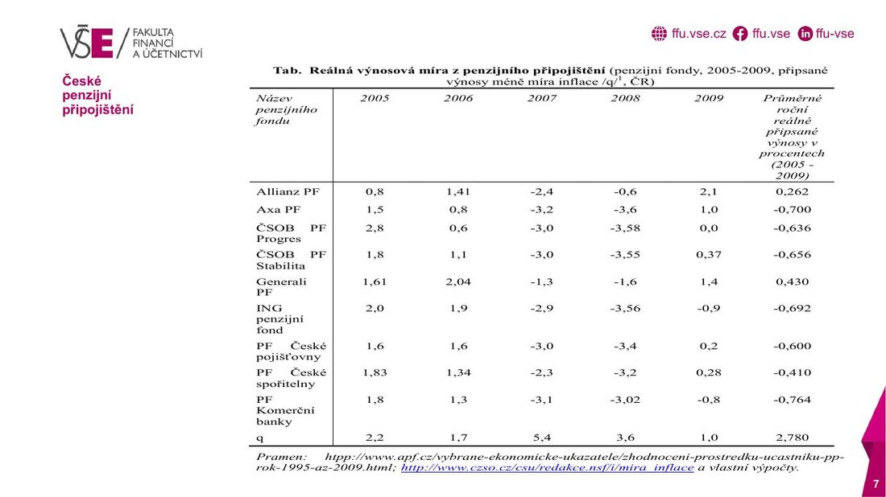
Reálné výnosy po letech: 2,8; 0,6; −3,0; −3,58; 0,0 %.
$$\frac{2{,}8 + 0{,}6 - 3{,}0 - 3{,}58 + 0{,}0}{5} = -0{,}636\,\%\ \text{p. a.}$$
Sedí se slajdem. V roce 2008 byl připsaný výnos zhruba 0 % při inflaci 3,6 %, tedy reálně −3,58 %. Průměrná inflace 2005–2009 byla 2,78 %, fondy za ní zaostaly.
Garance nezáporného výnosu je nominální. Proto fondy držely dluhopisy a vklady a reálně prodělávaly. Garance je příčinou nízké výkonnosti, ne její ochranou.
Oprava systému: transformované a účastnické fondy
Zákonodárce se rozhodl chybu odstranit tím, že vytvořil nový pilíř (03C s. 17–18). Starý pilíř penzijního připojištění se uzavřel pro nové vstupy a proměnil se v transformované fondy s garancí nulového výnosu. Přestup do nového systému je dobrovolný. Nový systém je doplňkové penzijní spoření (DPS).
| Transformovaný fond | Účastnický fond (DPS) | |
|---|---|---|
| Vznik | ze starých penzijních fondů | nový pilíř, princip kolektivního investování (UCITS) |
| Garance | nulový výnos je garantován | bez garance, hodnota v penzijních jednotkách v tržních cenách |
| Majetek | – | oddělen od majetku penzijní společnosti (min. vlastní kapitál 50 mil. Kč) |
| Portfolio 2016 | dluhopisy 88,7 %, akcie 0,4 % | dluhopisy 63 %, peníze 22 %, podílové listy 9,4 %, akcie 5,4 % |
Účastnické fondy jsou dynamičtější, ale pořád konzervativní (03C s. 11, 12).
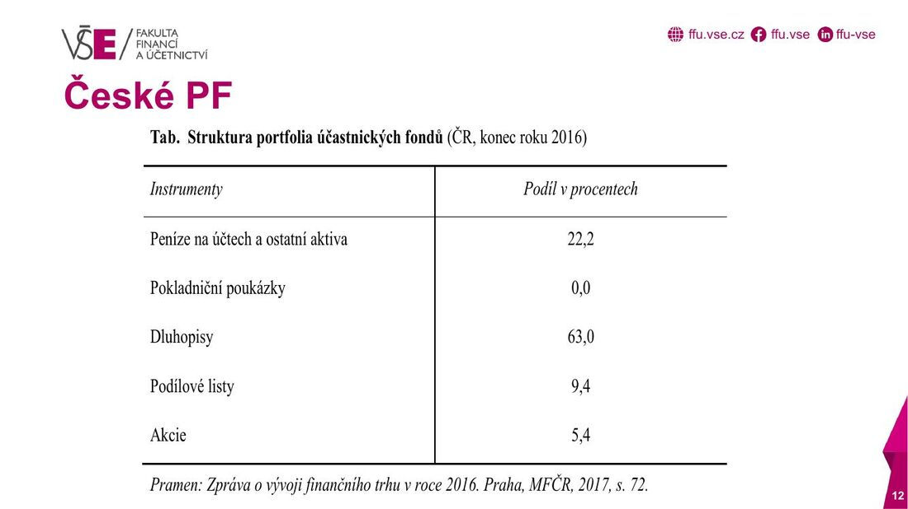
Každý účastník má osobní účet s peněžním podúčtem (příspěvky) a majetkovým podúčtem (penzijní jednotky). Spořicí a výplatní fáze jsou oddělené. Pro účastníky s nárokem na penzi do 5 let je povinný konzervativní fond (03C s. 18–19). Regulace omezuje úplatu: max. 0,4 % majetku u konzervativního fondu a 0,8 % u ostatních. Akviziční náklady jsou max. 3,5 % průměrné mzdy, ocenění se provádí nejméně týdně a účastník dostává Sdělení klíčových informací.
Při příspěvku 300–900 Kč je státní příspěvek 90 Kč + 20 % z částky nad 300 Kč. Od 1 000 Kč je to 230 Kč.
- 600 Kč: $90 + 0{,}2 \cdot (600 - 300) = 150$ Kč,
- 900 Kč: $90 + 0{,}2 \cdot 600 = 210$ Kč,
- 1 000 Kč a více: 230 Kč, další platba už příspěvek nezvyšuje.
Doplněk (stav od 7/2024, zákon o DPS, ověřit): 20 % z příspěvku od 500 Kč, maximum 340 Kč při 1 700 Kč. Slajdy odpovídají stavu kolem 2016.
- DPS lze sjednat i nezletilým (po 18. roce výběr až 1/3), právo vybrat vše je od 60 let (03C s. 20).
- Výplata penze alespoň 10 let → osvobození výnosů od 15% daně. Od 2017 daňová úleva až do 24 000 Kč ročně (max. výhody při 3 000 Kč měsíčně). Limit příspěvku zaměstnavatele osvobozený od odvodů 30 000 → 50 000 Kč ročně (03C s. 21–22).
- Úplata účastnických fondů (mimo konzervativní) 0,8 → 1 %, podíl na zhodnocení 10 → 15 %. U transformovaných fondů úplata 0,6 → 0,8 %, podíl na zhodnocení 15 → 10 %. Provize zprostředkovatelům 880 → 1 760 Kč (03C s. 22–23).
II. pilíř: důchodové spoření a jeho zrušení
Zákon o důchodovém spoření (2013) vytvořil II. pilíř (03C s. 24–30). Vstup byl dobrovolný (do 35 let, starší do června 2013), účast byla definitivní a příspěvek činil 3 % z pojistného + 2 % navíc z vlastního. Provozovat ho směla jen penzijní společnost (min. kapitál 500 mil. Kč, 50 tis. účastníků). Peníze šly do důchodových fondů s rostoucí rizikovostí.
| Fond | Akcie a fondy max. | Úplata za správu |
|---|---|---|
| státních dluhopisů (DFSD) | 0 % | 0,3 % |
| konzervativní (KDF) | 0 % | 0,4 % |
| vyvážený (VDF) | 40 % | 0,5 % |
| dynamický (DDF) | 80 % | 0,6 % |
Úplata je z průměrného vlastního kapitálu. Přihlašování fungovalo přes centrální registr smluv a Jednotné inkasní místo (s. 27). Druhy důchodů: doživotní, doživotní s pozůstalostním po dobu 3 let, na 20 let a sirotčí na 5 let (s. 30).
II. pilíř ale dlouho nevydržel. Zákon o ukončení důchodového spoření byl schválen 2015, povolení fondů zaniká 30. 6. 2016 a fondy šly do likvidace. Účastník si mohl vybrat: převod do III. pilíře (DPS nebo penzijní připojištění), výplatu na účet, nebo převod 3 % zpět do státního systému (03C s. 32–33).
Slajd 03C s. 32 píše „ukončeno k 1. 1. 2015“, což je pravděpodobně překlep: spoření fungovalo 2013–2015 a skončilo k 1. 1. 2016. Slajd s. 24 říká „opt-out“, ale vstup byl dobrovolný aktivním uzavřením smlouvy. V testu odpovídej „zrušeno, dobrovolný vstup“. Neplést důchodové fondy (II. pilíř) s účastnickými fondy (DPS, III. pilíř).
Musílkův návrh modernizace důchodového systému
Přednáška končí návrhem, jak by měl důchodový systém vypadat (03C s. 37–44). Základem je multipilířový systém se čtyřmi pilíři: 0. rodinný, I. státní, II. povinný kapitalizovaný a III. dobrovolný kombinovaný. Cílem je diverzifikace rizik, fiskální stabilizace a domácí dlouhodobý kapitál.
- I. pilíř výrazně zredukovaný: rovné (jednotné) dávky ze státního rozpočtu bez ohledu na minulé výdělky, redistribuce i mezi bohatými a chudými, nízké náklady (s. 39).
- II. pilíř povinný (s. 40–43): řeší dopad demografie na veřejné finance a podporuje agregátní úspory a trh cenných papírů. Min. příspěvek 5 % příjmu, cíl 8–10 %. Nezávislé penzijní společnosti (nepropojené se zaměstnavateli, propojení s bankami a pojišťovnami je v pořádku). Fondy s definovaným příspěvkem, min. dva: konzervativní a rizikový, případně podfondy podle životního cyklu.
- III. pilíř dobrovolný: penzijní připojištění, kolektivní investování, vklady, životní pojištění. Na začátku detailní regulace, po stabilizaci přechod k obezřetnostní (s. 44).
Část B: Moderní teorie portfolia v praxi
Druhá polovina tématu je o tom, jak portfolio manažer rozhoduje. Většina z nich vychází z moderní teorie portfolia (MTP), která stojí na pěti pilířích (04 s. 4): teorie portfolia (Markowitz), CAPM (Sharpe, Lintner, Mossin), teorie efektivního trhu (Fama), mezinárodní investování (Solnik) a poznání, že diverzifikace selhává v globalizaci a krizích.
- nejdřív stanovit akceptovatelné riziko, které určuje alokace aktiv (nejdůležitější rozhodnutí),
- riziko se posuzuje na úrovni celého portfolia (příspěvek instrumentu k riziku portfolia, včetně lidského kapitálu a reálných aktiv),
- riziko roste s délkou horizontu (3 týdny v poukázkách × 30 let),
- diverzifikace snižuje riziko, doplněná půjčováním nebo půjčením bezrizikového aktiva,
- portfolio podle potřeb investora (znalosti, motivy, daně),
- konkurence vytváří rovnováhu: trhy jsou efektivní, nadvýnos po úpravě o riziko je těžké získat.
Princip 1 a 2 se spolu hodně pojí. Manažer neřeší, jak riskantní je jedna akcie sama o sobě, ale jak změní riziko celého portfolia. Proto záleží i na tom, co klient vlastní mimo portfolio (třeba nemovitost nebo vlastní schopnost vydělávat).

Vyšší výnos znamená vyšší riziko: poukázky jsou nejbezpečnější a nejméně vynášejí, akcie malých firem nejvíc vynášejí a nejvíc kolísají. Aritmetický průměr (AM) je vždy ≥ geometrický (GM).
Bezrizikový výnos jsou poukázky (AM 0,72 %). Použijeme $S = (r_p - r_f)/\sigma$:
- akcie S&P 500: $(8{,}64 - 0{,}72) / 19{,}55 = 0{,}41$,
- akcie malých firem: $(15{,}35 - 0{,}72) / 37{,}33 = 0{,}39$ (víc výnosu, ale víc než dvojnásobné riziko, proto o málo horší),
- podnikové dluhopisy: $(3{,}21 - 0{,}72) / 9{,}85 = 0{,}25$,
- vládní dluhopisy: $(2{,}57 - 0{,}72) / 9{,}97 = 0{,}19$.
Akcie vycházejí na jednotku rizika nejlépe, dluhopisy nejhůř.
Akcie A: výnos 10 %, σ = 20 %. Akcie B: výnos 6 %, σ = 10 %. Korelace ρ = 0,2, váhy 50 / 50.
$$E(r_p)=\sum w_iE(r_i)\qquad \sigma_p^2=w_1^2\sigma_1^2+w_2^2\sigma_2^2+2w_1w_2\rho\sigma_1\sigma_2$$
- Výnos: $0{,}5 \cdot 10 + 0{,}5 \cdot 6 = 8\,\%$.
- Rozptyl: $0{,}25 \cdot 0{,}04 + 0{,}25 \cdot 0{,}01 + 2 \cdot 0{,}25 \cdot 0{,}2 \cdot 0{,}2 \cdot 0{,}1 = 0{,}0145$.
- $\sigma_p = \sqrt{0{,}0145} = 12{,}0\,\%$, kdežto vážený průměr rizik by byl 15 %.
Diverzifikace odstraní jedinečné riziko, systematické zůstává.
S bezrizikovým aktivem leží efektivní portfolia na přímce kapitálového trhu (CML): $E(r_p)=r_f+\frac{E(r_M)-r_f}{\sigma_M}\sigma_p$. Na ose x je σ. Přímka trhu cenných papírů (SML, CAPM) je $E(r_i)=r_f+\beta_i(E(r_M)-r_f)$, na ose x je beta a platí pro všechna aktiva. APT (Ross) vysvětluje výnos více faktory a stojí na neexistenci arbitráže.
Investiční proces: tři fáze
Investování není jednorázové rozhodnutí. Podle slajdů (04 s. 13–16) má tři fáze, které se opakují. Nejdřív se plánuje, pak se plán provádí a nakonec se měří, jak to dopadlo.
| Fáze | Obsah |
|---|---|
| Plánování | podmínky investora, tržní podmínky, investiční politika, strategická alokace aktiv (SAA) |
| Implementace | změna SAA, taktická alokace aktiv (TAA), výběr instrumentů |
| Monitorování | hodnocení investiční politiky a výkonnosti portfolia (Sharpe, Treynor) |
SAA jsou dlouhodobé cílové váhy tříd aktiv podle cílů, horizontu a rizikového profilu. TAA jsou dočasné odchylky od SAA podle krátkodobého výhledu. Doplněk: podle Brinsona, Hooda a Beebowera (1986) vysvětluje SAA většinu rozptylu výnosů; rebalancování vrací váhy k cíli. Pro projekt: konzervativní profil = hlavně dluhopisy a peněžní trh, vyvážený = zhruba polovina akcií, agresivní = převážně akcie.
Jak se měří výkonnost portfolia
Slajd 04 s. 16 uvádí jen Sharpea a Treynora. Plné vzorce, Jensenova alfa a information ratio jsou doplněk (Musílek 2011, kap. 16–17). Všechny čtyři ukazatele odpovídají na stejnou otázku: kolik výnosu navíc manažer přinesl a za jaké riziko. Liší se tím, jaké riziko považují za rozhodující.
| Ukazatel | Vzorec | Co měří |
|---|---|---|
| Sharpe | $S = \dfrac{r_p - r_f}{\sigma_p}$ | prémie na jednotku celkového rizika; portfolio je celý majetek |
| Treynor | $T = \dfrac{r_p - r_f}{\beta_p}$ | prémie na jednotku systematického rizika; portfolio je část diverzifikovaného majetku |
| Jensenova alfa | $\alpha = r_p - [r_f + \beta_p (r_M - r_f)]$ | nadvýnos nad CAPM v p. b.; kladná = manažer přidal hodnotu |
| Information ratio | $IR = \dfrac{r_p - r_B}{TE}$ | nadvýnos nad benchmarkem na jednotku tracking error (směrodatná odchylka rozdílů výnosů) |
$r_f$ = 3 %, trh $r_M$ = 9 %, $\sigma_M$ = 12 %. Fond A: výnos 12 %, σ = 15 %, β = 1,2. Fond B: výnos 10 %, σ = 10 %, β = 0,8.
- Sharpe: A = $(12 - 3)/15 = 0{,}60$; B = $(10 - 3)/10 = 0{,}70$; trh = $6/12 = 0{,}50$.
- Treynor: A = $9/1{,}2 = 7{,}5\,\%$; B = $7/0{,}8 = 8{,}75\,\%$; trh = 6 %.
- Jensen: požadovaný výnos A = $3 + 1{,}2 \cdot 6 = 10{,}2\,\%$, tedy α = +1,8 p. b.; B: $3 + 0{,}8 \cdot 6 = 7{,}8\,\%$, tedy α = +2,2 p. b.
- IR (benchmark 9 %, TE fondu A 5 %): $(12 - 9)/5 = 0{,}6$.
- Závěr: A má vyšší výnos jen proto, že víc riskoval. Fond B je lepší podle Sharpea, Treynora i Jensena.
Sharpe a Treynor dávají poměr (pořadí), Jensen procentní body. Mohou dát různé pořadí: nediverzifikovaný fond má nízkou betu (dobrý Treynor), ale vysoké σ (špatný Sharpe). Porovnávej za stejné období. V testu hledej slova: celkové riziko → Sharpe, beta → Treynor, nadvýnos vůči CAPM → Jensen, benchmark a tracking error → IR.
Opak MTP: Curyšské axiomy
Poslední část představuje specifický přístup, který je přesným protikladem MTP (04 s. 18–22). Vznikl v klubu švýcarských spekulantů na Wall Street (50.–70. léta), knižně ho popsal Max Gunther (2004). Podle něj je úspěšně spravovat portfolio podle MTP obtížné.
| MTP | Curyšské axiomy | |
|---|---|---|
| Rozložení majetku | diverzifikovat | nediverzifikovat, riskovat téměř celý majetek |
| Horizont | dlouhý | krátký, brzy realizovat výnosy, vyhnout se dlouhodobým plánům |
| Postup | systematický proces | spekulace, stále nové strategie |
Další axiomy (s. 19–22): při panice okamžitě prodat, chování trhu nelze předvídat (příklad Irvinga Fishera 1929: „vzorce neexistují“), nenechat se svést minulostí (past kronikáře), optimismus je nepřítel, ignorovat většinový názor a žádné průměrování nákladů (nezprůměrovat ztrátu).
Slajd 04 s. 18–22 neuvádí ESG, aktivní × pasivní management ani algoritmický management. Tyto pojmy plán předmětu zmiňuje, ale podklad z přednášky je neobsahuje. Doplněk (stručně): aktivní správa se snaží porazit benchmark za vyšší náklady, pasivní ho kopíruje (indexové fondy, ETF). Po nákladech aktivní fondy v průměru zaostávají.
- Silné penzijní fondy (Nizozemsko 180 % HDP, USA 135 %) = hluboký kapitálový trh. ČR 8,4 % HDP, podíl kapitalizovaných příjmů 0,7 %. Průběžný systém trpí demografií, kapitalizovaný investičním rizikem.
- DC nese riziko účastník, DB fond nebo zaměstnavatel. Regulace fondů: investiční politika, garance, náklady.
- ČR: dluhopisy 80–89 % portfolia, reálně záporné výnosy (inflace 2007–2008), vysoké náklady. Transformované fondy mají garanci nulového výnosu, účastnické fondy (DPS) ne, mají povinný konzervativní fond a úplatu max. 0,4 / 0,8 %.
- II. pilíř (důchodové fondy DFSD, KDF, VDF, DDF, akcie 0 / 0 / 40 / 80 %) fungoval 2013–2015 a byl zrušen; účast byla dobrovolná.
- MTP: akceptovatelné riziko určuje alokace, riziko se posuzuje v rámci portfolia, roste s horizontem, diverzifikace, portfolio podle potřeb, efektivní trh.
- Investiční proces: plánování (investiční politika, SAA) → implementace (TAA, výběr instrumentů) → monitorování (Sharpe, Treynor).
- Sharpe = (rp − rf)/σ; Treynor = (rp − rf)/β; Jensen α = rp − [rf + β(rM − rf)]; IR = (rp − rB)/TE.
- Curyšské axiomy = spekulativní protiklad MTP (nediverzifikovat, krátký horizont).
6. Finanční investování
Přednáška 29. 10. (odhad) · P. Musílek · zdroj: Finanční investování (1BP404_05_prednaska.pptx, s. 1–23)
Téma odpovídá na otázku, co investor od investice vlastně chce a co za to platí. Chce výnos, platí rizikem, daněmi, inflací a nižší likviditou. Nejdřív se podíváme, kdo vlastně investuje a z čeho se skládá jeho úspěch. Pak se naučíme výnos správně měřit, porovnáme akcie, dluhopisy a pokladniční poukázky v čase a zemích, a na konci stojí riziko a likvidita.
Kdo investuje a co rozhoduje o jeho úspěchu
Slajd 3 rozlišuje několik dvojic. Vkladatel hledá hlavně bezpečnost a likviditu, investor aktivně nese riziko, aby získal vyšší výnos. Poptávka po instrumentech může být vynucená (povinnost, třeba povinné spoření nebo regulace institucí) nebo dobrovolná (rozhodnutí investora). Tradičně poptávka závisí na čtyřech věcech: bohatství, výnosové míře, riziku a likviditě.
Tři vlastnosti instrumentu, mezi kterými se musí vybírat: výnos – riziko – likvidita. Nejde mít všechno najednou, vyšší výnos se obvykle platí vyšším rizikem nebo horší likviditou.
Tentokrát jde o investora, ne o instrument. Jeho výsledek závisí na výnosové míře strategie, na hodnotě lidského kapitálu (investiční nadání a talent), na investičním vzdělání a tréninku, na prestiži v investiční komunitě a na kapitálové síle (s. 3).
Tržní trojúhelník říká, co nabízí trh. Individuální říká, co s tím dokáže investor. Dva lidé si koupí tentýž instrument a dopadnou jinak, protože se liší schopnostmi, vzděláním i penězi, které mají k dispozici.
Výnosová míra: jak ji správně měřit
Výnosová míra není jedno číslo. Historická je změřená z minulých dat, očekávaná je odhad budoucnosti, na kterém stojí rozhodnutí. Historie je jen vodítko, nic nezaručuje (s. 4). Dále se rozlišuje její struktura: z čeho se skládá (cenový výnos a běžný příjem), jestli je nominální, nebo reálná, a jestli je hrubá, nebo čistá po daních.
Aby se z roční řady výnosů dalo udělat jedno číslo, používají se dva průměry. Liší se víc, než by člověk čekal.
AM je prostý průměr ročních výnosů. GM udává skutečný průměrný roční růst majetku, protože počítá se zhodnocováním z předchozího roku. Vždy platí $GM \le AM$ a rozdíl roste s rizikem (s. 7–19). Pro dlouhodobý růst majetku je správný GM.
Riziko se měří směrodatnou odchylkou (SD) ročních výnosů. Variační koeficient $CV = SD / AM$ je riziko na jednotku výnosu, čím nižší, tím lepší poměr. Beta je citlivost na pohyb trhu (s. 7).
Doplněk: přibližně $GM \approx AM - \tfrac{\sigma^2}{2}$. Kolísání majetek „ukusuje“. Když si majetek zdvojnásobíte a pak přijdete o polovinu, jste zpátky na začátku, i když průměr výnosů vypadá kladně.
Podle slajdu 7 vychází pro dolarového investora v letech 1980–1997:
- S&P 500: $CV = 13{,}22 / 17{,}89 = 0{,}74$,
- rozvíjející se trhy: $CV = 27{,}06 / 11{,}78 = 2{,}30$,
- krátké státní dluhopisy: $CV = 3{,}77 / 8{,}57 = 0{,}44$.
Nejlepší poměr rizika a výnosu mají tedy státní dluhopisy, rozvíjející se trhy nesou nejvíc rizika na jednotku výnosu. Výpočet sedí se slajdem.

Akcie, dluhopisy a poukázky: co ukazují data
Hlavní zjištění z tabulek na slajdech 7–19 je jednoduché: riziko i výnos rostou stejným směrem. Pořadí je pokladniční poukázky < státní dluhopisy < podnikové dluhopisy < akcie < akcie malých firem (s. 8). Kdo chce vyšší výnos, musí unést víc kolísání.
V USA v letech 1900–2000 vyhrály akcie: nominálně 10,1 % ročně při SD 19,9 %, dluhopisy 4,8 %, pokladniční poukázky 4,1 % a inflace 3,2 % (s. 11). Proto se 20. století nazývá „stoletím akciového investování“. Aktualizace 1900–2021 vychází podobně: akcie GM 9,8 %, dluhopisy 5,0 %, T-bills 3,6 %, inflace 2,9 % (s. 18).
Tohle ale platí dlouhodobě a v průměru. Výsledek se mění podle období i podle země. Podle slajdu 9 mají akcie USA GM 9,32 % v letech 1928–2010, ale jen 1,38 % v letech 2001–2010, kdy dluhopisy vydělaly 5,49 %. Reálně v letech 2000–2015 vychází akcie ve světě jen 1,6 % a dluhopisy 4,9 % (s. 16). Volatilita se také mění: SD akcií S&P 500 byla 13,22 % (1980–97), 16,83 % (2004–10) a 20,73 % (2007–10, krize) (s. 22).
Pořadí akcie > dluhopisy > T-bills platí dlouhodobě, ne v každém období. V testu hlídej, o jaké období a zemi jde, a rozlišuj výnos hrubý × čistý (po daních) a nominální × reálný (po inflaci). Poměr rizika a výnosu se mění i podle období a země (s. 9, 15–17).
Nominální a reálný výnos: co zbyde po inflaci
Nominální výnos je to, co vidíte na účtu. Reálný výnos je nominální výnos očištěný o inflaci, tedy o kolik skutečně přibylo kupní síly. Počítá se podle Fisherova vztahu a slajd 10 ukazuje stejná data jako slajd 8, jen reálně.
$$1 + r_{real} = \frac{1 + r_{nom}}{1 + \pi} \qquad (\text{přibližně } r_{real} \approx r_{nom} - \pi)$$
$r_{nom}$ je nominální výnos, $\pi$ inflace.
Inflace je 3,05 %, tedy $1 + \pi = 1{,}0305$.
- Akcie S&P 500: $\dfrac{1{,}1005}{1{,}0305} - 1 = 6{,}79\ \%$ (slajd 10: 6,79 %).
- Vládní dluhopisy: $\dfrac{1{,}0522}{1{,}0305} - 1 = 2{,}11\ \%$ (slajd: 2,11 %).
- Malé akcie: $\dfrac{1{,}1247}{1{,}0305} - 1 = 9{,}14\ \%$ (slajd: 9,14 %).
U pokladničních poukázek vychází 0,64 % proti 0,65 % na slajdu, rozdíl je zaokrouhlení.
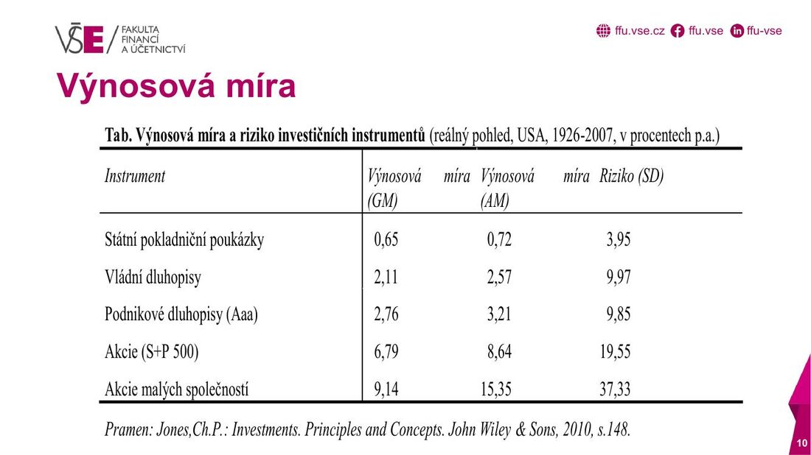
Kde je inflace vysoká, „bezpečné“ aktivum reálně prodělává. Příklad je Itálie v letech 1900–2000 (s. 13–14): inflace 9,1 % při SD 36,6 %, reálný výnos poukázek −4,1 %, státních dluhopisů −2,2 % a akcií +2,7 % při SD 29,4 %. Reálně v letech 1966–2015 byla nejlepší Jihoafrická republika (akcie 7,9 %), nejhorší Itálie (1,4 %) (s. 15).
Inflace 9,1 %, tedy $1 + \pi = 1{,}091$.
- Akcie (nominálně 12,0 %): $\dfrac{1{,}120}{1{,}091} - 1 = 2{,}7\ \%$.
- T-bills (nominálně 4,7 %): $\dfrac{1{,}047}{1{,}091} - 1 = -4{,}0\ \%$ (slajd 14: −4,1 %, rozdíl je zaokrouhlení).
Při vysoké inflaci jsou pokladniční poukázky reálně ztrátové. Akcie jsou jediné s kladným reálným výnosem.
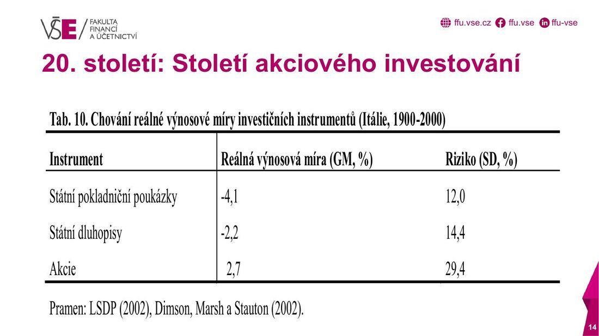
Akcie S&P 500: AM = 11,87 %, SD = 19,49 %.
$$GM \approx 11{,}87 - \frac{19{,}49^2}{200} = 11{,}87 - 1{,}90 = 9{,}97\ \%$$
Slajd udává 10,05 %, odhad je tedy blízko. Čím vyšší riziko, tím větší propast mezi AM a GM: u malých firem je AM 18,24 % a GM jen 12,47 % (s. 8). Doplněk: vzorec je jen aproximace, přesné GM se počítá z růstových faktorů (viz příklad níže).
Daně a inflace: kolik z výnosu zbyde
Slajd 20 ukazuje, jak výnos postupně „taje“. Začíná hrubým nominálním výnosem, po zdanění je čistý nominální a po odečtení inflace čistý reálný. U akcií v USA za 1926–1998 je to 11,0 % → 8,1 % → 4,9 %. U dlouhodobých vládních dluhopisů 5,2 % → 3,6 % → 0,4 %. Municipální dluhopisy jsou osvobozené od daně: 6,0 % → 6,0 % → 2,9 %. A u pokladničních poukázek 3,8 % → 2,7 % → −0,5 %.

- Efektivní zdanění: akcie $1 - 8{,}1/11{,}0 = 26\ \%$, dluhopisy $1 - 3{,}6/5{,}2 = 31\ \%$, T-bills $1 - 2{,}7/3{,}8 = 29\ \%$, municipální 0 %.
- Implicitní inflace z akcií: $\dfrac{1{,}081}{1{,}049} - 1 = 3{,}05\ \%$, což odpovídá inflaci ze slajdu 8 (3,05 %).
- Dluhopisy: $1{,}036 / 1{,}0305 - 1 \approx 0{,}5\ \%$ (slajd: 0,4 %).
Po zdanění a inflaci dluhopisy a T-bills téměř nic (nebo ztrátu) nevydělaly, akcie 4,9 %.
Riziko: co je a jaké druhy existují
Nebezpečí, že investor nedosáhne očekávané výnosové míry. Druhy rizik: úrokové, tržní, inflační, podnikatelské, finanční a další.
Jedinečné riziko patří jedné firmě a dá se diverzifikovat, tedy rozložit mezi více akcií. Systematické riziko je tržní, diverzifikací nezmizí a měří se betou. Proto se za něj trh odměňuje.
Slajd 21 uvádí CAPM a jeho modifikace jen jako osnovu. Doplněk (Musílek 2011, kap. 14): $E(r_i) = r_f + \beta_i\,[E(r_M) - r_f]$, tedy odměna jen za systematické riziko.
Riziko se navíc v čase mění a v krizi roste. Slajd 22 ukazuje volatilitu S&P 500 (SD p.a.) 13,22 % za 1980–1997, 16,83 % za 2004–2010 a 20,73 % za 2007–2010.
Roční výnosy za 4 roky. Strategie A (akciová): +20 %, −10 %, +15 %, +5 %. Strategie B (konzervativní): +8 %, +2 %, +6 %, +4 %.
- AM: A = (20 − 10 + 15 + 5)/4 = 7,5 %; B = (8 + 2 + 6 + 4)/4 = 5,0 %.
- GM: $A = (1{,}2 \cdot 0{,}9 \cdot 1{,}15 \cdot 1{,}05)^{1/4} - 1 = 6{,}86\ \%$; $B = (1{,}08 \cdot 1{,}02 \cdot 1{,}06 \cdot 1{,}04)^{1/4} - 1 = 4{,}98\ \%$.
- SD (výběrová, $n-1$): $A = \sqrt{\tfrac{(12{,}5)^2 + (-17{,}5)^2 + (7{,}5)^2 + (-2{,}5)^2}{3}} = 13{,}23\ \%$; B = 2,58 %. S dělením $n$ vychází A = 11,46 %, takže si ověř, které zadání test používá.
- CV = SD/AM: A = 13,23/7,5 = 1,76; B = 2,58/5,0 = 0,52.
Závěr: A vydělá víc (GM 6,86 vs 4,98 %), ale na jednotku výnosu nese 3,4× víc rizika. Averznímu investorovi vyhovuje B, tomu, kdo chce maximální růst, A. U A je GM o 0,64 p. b. pod AM, u B jen o 0,02 p. b.
Doplněk (vlastní modelový příklad z dat na s. 18): portfolio 60 % akcie / 40 % dluhopisy, USA 1900–2021. AM akcií 11,6 %, dluhopisů 5,3 %, SD 19,6 % a 9,0 %.
- Očekávaný výnos (vážený průměr): $0{,}6 \cdot 11{,}6 + 0{,}4 \cdot 5{,}3 = 9{,}08\ \%$.
- Riziko: $\sigma_p = \sqrt{w_1^2\sigma_1^2 + w_2^2\sigma_2^2 + 2 w_1 w_2 \rho\,\sigma_1\sigma_2}$. Korelaci slajdy neuvádějí, při předpokládané $\rho = 0{,}2$ vyjde $\sigma_p \approx 12{,}97\ \%$.
- $CV = 12{,}97/9{,}08 = 1{,}43$, tedy lépe než čisté akcie ($19{,}6/11{,}6 = 1{,}69$).
Výnos portfolia je vždy vážený průměr, riziko ne. Je nižší, pokud $\rho < 1$, a to je podstata diverzifikace.
Likvidita a její cena
Poslední z trojice. Peníze v investici nejsou k ruce, dokud ji neprodáte, a rychlý prodej něco stojí.
Schopnost přeměnit investiční portfolio na disponibilní peněžní prostředky. Za rychlý prodej se platí, to jsou náklady likvidity (spread, dopad na cenu, poplatky).
Slajd 23 uvádí: vhodná forma instrumentu, odbourání restrikcí, zveřejňování informací, stock split a kótace na burze. Společné je jedno: aby se papír snadno prodal a kupci mu věřili.
Doplněk (Musílek 2011, kap. 14): nelikvidní aktiva musí nabízet vyšší výnos, například Amihud a Mendelson. Blíže viz téma 1.
- Individuální magický trojúhelník: výnos strategie, lidský kapitál, vzdělání a trénink, prestiž, kapitálová síla (s. 3). Tržní: výnos, riziko, likvidita.
- GM je skutečný průměrný růst, AM prostý průměr, GM ≤ AM. CV = SD/AM (s. 7).
- Dlouhodobě akcie (≈ 10 % nominálně, 6,7 % reálně) > dluhopisy > T-bills a akcie jsou nejrizikovější (SD ≈ 20 %). Výnos se liší podle období a země (s. 9–19).
- Reálný výnos = (1 + nominální)/(1 + inflace) − 1. Daně a inflace snižují výnos, dluhopisy po nich vydělají téměř nic (s. 20).
- Riziko: jedinečné (diverzifikovatelné) × systematické (beta). Volatilita se mění a v krizi roste (s. 21–22).
- Likvidita je schopnost získat hotovost, má náklady a zvyšuje se formou instrumentu, informacemi, stock splitem a kótací (s. 23).
7. Fundamentální akciová analýza
Přednáška 12. 11. (odhad) · P. Musílek · zdroj: Fundamentální akciová analýza (1BP404_06_prednaska.pptx, slajdy 1–39); doplňky označené doplněk z Musílek (2011) kap. 2, 18, 15, 19
Celé téma odpovídá na otázku: kolik má akcie opravdu stát a jak to poznat dřív než ostatní. Cena akcie na burze kolísá den za dnem. Fundamentální analýza proto hledá „vnitřní hodnotu“, k níž se cena podle ní dříve nebo později vrátí. Nejdřív si řekneme, co akcie je a proč se její cena tak hýbe. Pak projdeme tři úrovně faktorů (ekonomika, odvětví, firma) a nakonec tři investory, kteří z toho udělali praxi: Grahama s Doddem, Buffetta a Gladiše.
Akciová společnost a kdo ji vlastní
Slajd 3 jen vyjmenovává okruhy, ale pro další výklad je potřeba znát základy. Akcionář je spoluvlastník firmy. Má právo hlasovat na valné hromadě, dostat dividendu a při zániku firmy dostat zůstatek. A právě v té poslední věci je poslední v řadě: nejdřív se uspokojí věřitelé a až co zbyde, patří akcionářům.
- Akcie je podíl spoluvlastníka a.s.: hlasovací právo, právo na dividendu a na likvidační zůstatek (reziduální nárok).
- Veřejná a.s. má akcie přijaté k obchodování na veřejném trhu, privátní ne.
- Základní cíl a.s.: maximalizovat hodnotu pro vlastníky, tedy tržní cenu akcií.
- Kmenová akcie: hlasovací právo a proměnlivá dividenda. Prioritní akcie: přednostní dividenda, obvykle bez hlasu.
- Dualistický systém: valná hromada, představenstvo řídí, dozorčí rada kontroluje. Monistický: valná hromada a správní rada, která řídí i kontroluje.
Doplněk (Musílek 2011, kap. 2): na slajdu 3 jsou jen názvy okruhů, výklad pochází z literatury.
Vlastníci (zmocnitelé) a manažeři (zmocněnci) jsou různí lidé. Manažer může jednat ve svém zájmu, ne v zájmu akcionářů. Proto investor sleduje kvalitu managementu a správy firmy (s. 3, 24).
Proč se ceny akcií tak hýbou
Slajdy 4–11 ukazují pětiletý vývoj akcií Ford, Volkswagen, Tesla, Citigroup, UBS, Apple a Microsoft. Poselství je jednoduché: ceny kolísají hodně, každá akcie jinak a často o desítky až stovky procent. U Tesly šla cena z asi 20 USD přes 400 USD a pak zpátky na 100 USD. Firma se za tak krátkou dobu tolik nezměnila, takže cenu hýbalo i to, co si o ní investoři právě mysleli.
Technicky o ceně rozhoduje nabídka a poptávka (s. 12). Nabízejí ti, kdo prodávají nadhodnocené tituly, potřebují peníze nebo mění strategii, a firmy, které vydávají nové akcie (IPO a SPO). Poptávají ti, kdo kupují podhodnocené tituly, firmy, které odkupují vlastní akcie, kupující přímých investic, stát při zestátnění a nakonec ti, které vede neekonomický motiv.
- Nabídka: prodej nadhodnocených titulů, získání likvidity, změna investiční strategie, primární nebo sekundární veřejná nabídka (IPO, SPO).
- Poptávka: nákup podhodnocených titulů, zpětné odkupy, přímé investice, zestátnění, neekonomické motivy.

Čtyři způsoby, jak se na akcie dívat
Slajd 13 uvádí čtyři analytické přístupy: fundamentální (FA), technický (TA), psychologický (PA) a kombinovaný. Přednášející k nim ale hned dodává, že hlavní směr investiční ekonomie má mnoho důkazů o ekonomicky efektivním chování cen likvidních akcií. Jinak řečeno: u hodně obchodovaných akcií je těžké najít chybu v ceně. Fundamentální analýza má tedy omezený prostor a k tomuto sporu se vrátíme v tématu 9.
Fundamentální analýza: z čeho se skládá hodnota
Hledá vnitřní hodnotu akcie z faktorů globálních (makro), odvětvových a podnikových (s. 15). Když je cena pod vnitřní hodnotou, akcie je podhodnocená a vyplatí se koupit. Když je nad ní, je nadhodnocená a vyplatí se prodat.
Top-down jde od celku k detailu: nejdřív ekonomika, pak odvětví, nakonec firma. Bottom-up jde obráceně: vybere se dobrá firma bez ohledu na to, co dělá makroekonomika.
Slajd 16 je tabulka, jak neočekávané změny jednotlivých faktorů hýbou cenou akcie. Dá se jí rozumět i bez učení nazpaměť. Co je dobré pro ekonomiku a firmu, cenu zvyšuje. Co ekonomiku nebo firmu zatěžuje nebo zdražuje peníze, cenu snižuje.

| Cena akcie roste při | Cena akcie klesá při |
|---|---|
| růstu HDP, peněžní nabídky, přílivu zahraničního kapitálu, ochrany vnějších investorů | růstu deficitu a veřejného dluhu, úrokových sazeb, inflace, nelikvidity |
| poklesu daňového zatížení | emisi akcií (více akcií na trhu), převzetí jiné společnosti (kupující) |
| růstu zisku, dividend, investic, tržeb, tržního podílu, inovací, kvality managementu, zadluženosti do určité výše | |
| kotaci, zařazení do burzovního indexu, fúzi, akviziční nabídce (cena cílové firmy) |
Doplněk (intuice, ne ze slajdu) – proč růst sazeb cenu snižuje: peníze v bance se víc vyplatí a budoucí příjmy z akcie se při vyšší sazbě diskontují víc.
Do ceny se promítá jen neočekávaná změna, protože očekávaná už v ceně je. Zadlužení pomáhá jen „do určité výše“. Pokles ceny je u deficitu, úrokových sazeb, inflace, nelikvidity, emise akcií a převzetí jiné společnosti (s. 16).
Odvětví: velké rozdíly i uvnitř jednoho trhu
Nejlepší i nejhorší odvětví mohou být za půl roku od sebe o stovky procent. V šestiměsíčním srovnání byly nejlepší audio/video technika (+90,7 %) a bankovnictví (+40,8 %), nejhorší osobní letecká doprava (−53,4 %) a letecká přeprava (−38,4 %) (s. 17–18). U jednotlivých akcií za rok je rozpětí od +75 % (Universal Display) po −91 % (Energous) (s. 22–23). Proto se vyplatí zkoumat, které odvětví vybírám.
- Citlivost na hospodářský cyklus: cyklické akcie jdou s cyklem (v růstu rostou víc, v poklesu klesají víc), neutrální a anticyklické (defenzivní) jsou stabilnější.
- Regulace, životní cykly odvětví a inovace.
- Expanze: trh 28,6 % p.a., cyklické 38,5 %, defenzivní 13,7 %. Rozpětí $38{,}5 - 13{,}7 = 24{,}8$ p. b. ve prospěch cyklických.
- Pokles: trh −24,8 % p.a., cyklické −29,1 %, defenzivní −16,6 %. Rozpětí $-16{,}6 - (-29{,}1) = 12{,}5$ p. b. ve prospěch defenzivních.
- Závěr: cyklické akcie zesilují pohyb trhu (v expanzi vydělají víc, v poklesu víc ztratí). Defenzivní jsou stabilnější. Čísla odpovídají slajdům.
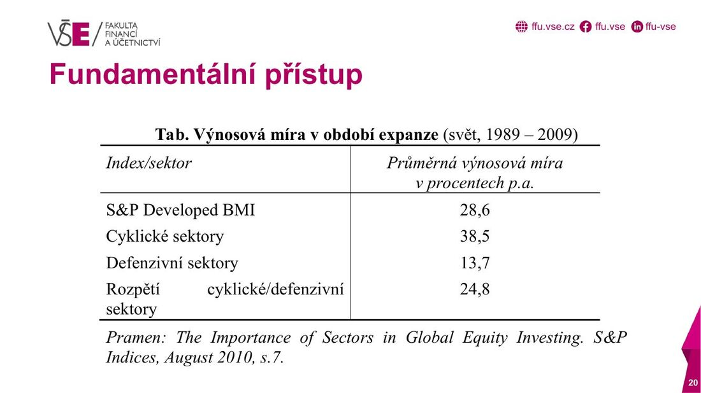

Firma: co v ní cenu hýbe
Na úrovni firmy slajd 24 uvádí pět klíčových faktorů. Tři z nich jsou politiky, které firma sama nastavuje: investiční (do čeho investuje), finanční (kolik je vlastního a cizího kapitálu) a dividendová (kolik zisku vyplatí). Čtvrtým je kvalita managementu. Pátý je nejdůležitější: očekávaný × skutečný zisk. Cenu nehýbe zisk sám o sobě, ale to, o kolik se liší od očekávání investorů.
Doplněk (Musílek 2011): podle Modiglianiho a Millera (1961) na dokonalém trhu dividenda hodnotu firmy neurčuje, hodnotu tvoří investiční politika. Podle signalizační teorie je zvýšení dividendy signál důvěry managementu a snížení je špatná zpráva.
Vnitřní hodnota a jak se počítá
Pojem vnitřní hodnoty používá Cootner (1964). Slajd 26 pak třídí metody podle toho, na co se dívají: na budoucnost (diskontování budoucích příjmů), na minulost (účetní hodnota, historické výsledky) nebo na srovnání (tržní násobky, podobné firmy). Dále zmiňuje hodnotový screening a investiční praxi tří jmen: Graham a Dodd, Buffett a Gladiš.
- Budoucnost: diskontování budoucích příjmů (například dividend).
- Minulost: účetní hodnota a historické výsledky.
- Komparace: tržní násobky a srovnání s podobnými firmami.
Nejznámější metoda „z budoucnosti“. Pro dividendy, které trvale rostou tempem $g$, platí:
$$V_0 = \frac{D_1}{k - g}$$
$D_1$ je dividenda za příští rok, $k$ požadovaná výnosnost a $g < k$. Doplněk (Musílek 2011), na slajdech vzorec není.
Dividenda letos 19,23 Kč, růst 4 % p.a., požadovaná výnosnost $k = 10$ %.
- $D_1 = 19{,}23 \cdot 1{,}04 \approx 20$ Kč.
- $V_0 = 20 / (0{,}10 - 0{,}04) = 333{,}33$ Kč.
- Cena 280 Kč je pod 333 Kč, takže je akcie podhodnocená a vyplatí se koupit.
- Při $k = 11$ % je $V_0 = 20 / 0{,}07 = 285{,}71$ Kč, tedy o 14,3 % méně. Malá změna sazby vyvolá velkou změnu hodnoty.
V čitateli je příští dividenda $D_1$, ne poslední vyplacená $D_0$. Model nefunguje pro $g \geq k$ ani pro firmy, které dividendy nevyplácejí.
Graham a Dodd: kupuj podniky, ne akcie
Graham a Dodd vycházejí z toho, že trh se v krátkém období plete, ale v dlouhém (5 let) se cena vrací k vnitřní hodnotě (s. 27). Vnitřní hodnotu proto chtějí stavět na skutečných, zveřejněných výsledcích, ne na prognózách, protože prognózy zisků jsou zpravidla velmi nepřesné. Hodnota postavená jen na budoucím růstu zisku je podle nich spekulace: vede k nadhodnocení akcie a pozdější výrazné korekci.
- Cena osciluje v dlouhém období (5 let) kolem vnitřní hodnoty.
- Cena se nemá výrazně odchylovat od účetní hodnoty při zohlednění ziskovosti a P/E. P/E nemá být vyšší než 25 (průměrný zisk za posledních 7 let) nebo 20 (zisk za posledních 12 měsíců).
- Bezpečnostní polštář (margin of safety): kupovat jen s rozdílem mezi vnitřní hodnotou a cenou nejméně 50 %.
- Další faktory ceny: dlouhodobé vyhlídky, kvalita managementu, finanční síla a kapitálová struktura, historie dividend.
Investor má nakupovat podniky, nikoli jednotlivé akcie, a to jen s dostatečným bezpečnostním polštářem. Polštář chrání před tím, že se odhad vnitřní hodnoty ukáže jako příliš optimistický.
Odhadnutá vnitřní hodnota je 200 Kč. Polštář 50 % znamená, že cena nesmí být vyšší než $200 \cdot (1 - 0{,}5) = 100$ Kč. Akcie za 150 Kč je sice pod hodnotou, ale polštář má jen 25 %, takže ji Graham a Dodd nekoupí.
Doplněk: vlastní modelový příklad, na slajdech není.
Starší materiály uvádějí Grahamova kritéria jinak (P/E do 15, P/BV do 1,5, 20 let dividend). Pro test platí čísla ze slajdů: P/E 25 resp. 20 a polštář 50 %.
Warren Buffett: Grahamův nejúspěšnější žák
Buffett je podle slajdu 29 nejúspěšnější Grahamův žák a klíčový vlastník holdingu Berkshire Hathaway. Zajímavé je, že většinu jeho práce netvoří sbírání akcií. Minimálně dvě třetiny aktivit jsou podle výroční zprávy z roku 2009 běžné podnikání v pojišťovnictví, energetice a službách (s. 30). Akciové portfolio z velkých známých firem (American Express, Coca-Cola, Wells Fargo, Procter & Gamble a další) je jen část.
- velké firmy,
- trvalá ziskovost,
- rentabilní a nezadlužené,
- kvalitní management,
- jednoduchý předmět podnikání,
- akvizice jen na neveřejných trzích.
Firma se silnou značkou, snadno pochopitelným byznysem a obrovskou finanční silou, která má téměř monopolní postavení ve svém odvětví (Gillette, Washington Post). Buffett na ně útočí v době skandálu nebo špatné zprávy. Například koupil Coca-Colu brzy po neúspěchu New Coke a po krachu trhu v roce 1987.
Realistické cíle, organický růst zevnitř, ne jen akvizicemi, moudré rozdělení kapitálu a žádné obří odměny v akciových opcích.

- Průměrný roční zisk Berkshire je 20,3 %, S&P 500 má 9,3 %. Rozdíl je $20{,}3 - 9{,}3 = 11{,}0$ p. b.
- Za 45 let: $1{,}203^{45} \approx 4\,092$násobek proti $1{,}093^{45} \approx 55$násobku.
- Poměr $4\,092 / 55 \approx 75$, tedy Berkshire vyrostla zhruba 75krát víc.
Přepočet 45 let je moje ilustrace, na slajdu jsou jen průměrné roční výnosy.
20,3 % je spočteno ze změny vnitřní (účetní) hodnoty, ne z tržní ceny akcie (s. 34). Čísla proto nejsou přímo srovnatelná s indexem S&P 500, který měří tržní ceny.
Daniel Gladiš: hodnotový screening
Poslední jméno je české. Daniel Gladiš (2006, Naučte se investovat) propaguje na našem trhu hodnotový screening: z velkého množství firem vybere ty, které splní předem zadané hodnoty ukazatelů. Spravuje fond Vltava Sicav (s. 39). Screening nevybere „nejlepší“ akcii, ale zúží výběr na ty, které stojí za podrobný rozbor.
Výběr podhodnocených firem podle zadaných hodnot ukazatelů z velkého množství dat. Podle Gladiše je to jen první krok k výběru investic, po něm musí následovat podrobná analýza (s. 39).
| Oblast | Kritérium |
|---|---|
| Ocenění | P/E < 15, P/BV < 1,5 |
| Dividendy | vyplácené dlouhodobě, nejméně 10 let |
| Likvidita a zadluženost | current ratio (krátkodobá aktiva / krátkodobé závazky) > 2, debt to equity (dluh / vlastní kapitál) < 0,6 |
| Ziskovost | růst zisku za posledních 10 let > 4 % ročně |
| Velikost | tržní kapitalizace > 500 mil. USD |
Firma má P/E 12, P/BV 1,2, current ratio 1,8, dluh/VK 0,4, růst zisku 6 % p.a. a dividendy 12 let.
- P/E 12 < 15 ✔, P/BV 1,2 < 1,5 ✔.
- Dividendy 12 let ≥ 10 ✔, růst zisku 6 % > 4 % ✔, dluh/VK 0,4 < 0,6 ✔.
- Current ratio 1,8 není větší než 2 ✘.
Firma kritérium likvidity nesplní, takže screeningem neprojde. Doplněk: vlastní modelový příklad, na slajdech není.
Doplněk: nízké P/E může být past (value trap), pokud zisky v upadajícím odvětví klesají. Proto je screening jen první krok.
- Fundamentální analýza určuje vnitřní hodnotu z faktorů globálních, odvětvových a podnikových. Top-down jde od ekonomiky k firmě, bottom-up opačně.
- Cenu akcie snižuje růst deficitu, úrokových sazeb, inflace, nelikvidity a emise akcií. Zvyšuje ji růst HDP, zisku, dividend a kvalitní management. Rozhodují neočekávané změny.
- Cyklické akcie vydělají v expanzi víc (38,5 % × 13,7 %) a v poklesu víc ztratí (−29,1 % × −16,6 %) než defenzivní.
- Graham a Dodd: cena osciluje kolem vnitřní hodnoty (5 let), počítej se skutečnými výsledky, P/E nejvýše 25 (7 let) resp. 20, bezpečnostní polštář alespoň 50 %. Kupuj podniky, ne akcie.
- Buffett: franšízy, trvalá ziskovost, nezadlužené firmy, kvalitní management, nákup po skandálu. Výnos 20,3 % × 9,3 % je z účetních hodnot.
- Gladiš: P/E < 15, P/BV < 1,5, dividendy 10 let, current ratio > 2, D/E < 0,6, růst zisku > 4 %, kapitalizace > 500 mil. USD. Screening je jen první krok.
- Doplněk: Gordonův model $V_0 = D_1/(k-g)$, cena pod hodnotou = podhodnocená.
8. Technická analýza a psychologie trhů: racionální a iracionální chování akciových trhů
Přednáška 19. 11. (odhad) · P. Musílek · zdroj: Racionální a iracionální chování akciových trhů (1BP404_07_prednaska.pptx, slajdy 1–52)
Celé téma hledá odpověď na otázku: jsou ceny akcií jen racionálním součtem informací, nebo je hýbou i emoce a davy? Nejdřív si ukážeme technickou analýzu, která věří, že se z minulých cen dá číst budoucnost, a proč je to sporné. Pak přijde psychologie a behaviorální finance, které vysvětlují, proč se lidé na trhu chovají jinak, než předpokládá učebnice. Na konci stojí bubliny, tedy případy, kdy se cena od hodnoty odtrhne nadlouho a nadmíru.
Technická analýza: co to je a jak se dělá
Technická analýza (TA) se nedívá na to, co firma vydělává, ale na to, jak se vyvíjela cena. Technický analytik zkoumá graf a snaží se zachytit okamžik, kdy se trend láme. Cílem je odhadnout krátkodobé pohyby jednotlivých akcií nebo celých indexů (s. 3). Je to protiklad fundamentální analýzy z minulého tématu, která počítá vnitřní hodnotu firmy.
Prognózuje krátkodobé pohyby cen akcií nebo indexů a hledá změny cenových trendů (s. 3). Používá dvě skupiny metod: grafické metody a metody založené na technických indikátorech.
- Grafické metody: hledají v grafu formace, které vedou ke změně trendu, a formace, které trend potvrzují.
- Technické indikátory: šíře trhu, nová maxima a minima, klouzavé průměry, relativní síla, momentum a anticyklické indikátory (neúplné jednotky obchodování, krátké prodeje, investiční doporučení, poměr mezi prodejními a kupními opcemi).
Grafické metody se čtou „okem“, indikátory se počítají z čísel.
Nejznámější indikátor je klouzavý průměr. Slajdy ho ukazují na akcii Ford Motors dvakrát: jednou s oknem 30 dní a jednou s oknem 5 dní. Kdo si chce zapamatovat jedinou věc, měl by si zapamatovat tohle: čím delší okno, tím je průměr hladší, ale tím víc za cenou zaostává. Čím kratší okno, tím rychleji reaguje, ale dává víc falešných signálů.

Doplněk (Musílek 2011, obecná literatura, na slajdech není): klouzavý průměr (MA) je průměr cen za posledních n dní. Zlatý kříž nastane, když krátký MA (např. 50denní) protne dlouhý (200denní) zdola a signalizuje nákup, opačný případ je kříž smrti. Podle Dowovy teorie existují trendy primární (roky), sekundární (korekce, týdny až měsíce) a terciární (denní šum). RSI nad 70 značí překoupený trh, pod 30 přeprodaný.
Proč je technická analýza sporná
Technická analýza vypadá lákavě, ale má vážný problém. Staví na tom, že existují trendy, tedy že minulý pohyb ceny pomáhá předpovědět další. Hlavní proud ekonomie ale věří, že likvidní trhy jsou efektivní minimálně ve slabé formě, a to trendové chování vylučuje (s. 8). Je to tedy střet dvou světonázorů. Empirické studie ve vyspělých státech navíc nepotvrdily, že by TA dlouhodobě přinášela nadprůměrné výnosy po očištění o riziko a po započtení transakčních nákladů (např. Fama a Blume 1969, Pinches 1970).
Slabá forma efektivity říká, že ceny už obsahují informaci z minulých cen. Pak z grafu nelze vyčíst nic užitečného a TA nemá na čem stát. Proto je TA v rozporu s hlavním proudem a proto ji učebnice berou s odstupem. K formám efektivity se vrátíme v tématu 9.
Slajd 9 přidává další důvody k pochybnostem. Indikátory se vykládají nejednotně a i Dowova původní teorie se dnes často vykládá jinak. Neexistuje žádný exaktní důvod, proč by se historické formace v budoucnu měly opakovat. A kdo TA vlastně podporuje? Kromě prodejců softwaru hlavně poskytovatelé investičních služeb, protože si přejí, aby klienti obchodovali co nejčastěji (provize), a k tomu je indikátory často „donutí“.
Pokud studie ukázala, že TA porazila strategii kup a drž, obvykle (s. 10–12):
- nebrala v úvahu riziko: nadprůměrný výnos mohl plynout z vyššího rizika portfolia, ne z TA,
- nezapočítala transakční náklady a daně,
- ověřila výkonnost jen v krátkém období, přitom je třeba opakovaně celý investiční cyklus, tedy 5 až 10 let,
- testovala jen jeden, často malý soubor akcií, ne rozsáhlý vzorek.
Psychologie a ceny akcií
Psychologii do výkladu cen akcií přinesli Keynes (Obecná teorie, 12. kapitola, 1936), Kostolany (Burzovní seminář, 1987) a Shleifer a Summers (teorie hlučného obchodování, 1990) (s. 14). Nejznámější je Keynesovo přirovnání.
Profesionální investice je jako soutěž, kde se ze sta fotografií vybírá šest nejkrásnějších tváří a vyhraje ten, jehož výběr je nejblíž průměrné volbě všech. Nevybíráš tváře, které se líbí tobě, ale ty, o nichž soudíš, že je vyberou ostatní.
Na burze: investor odhaduje očekávání ostatních, ne vnitřní hodnotu firmy.
Doplněk (Kostolany): tendence burzy je dána penězi + psychologií. „Tvrdohlaví“ investoři (vlastní peníze, trpělivost) kupují od „roztřesených“ (dluh, panika) na dně.
Behaviorální finance: když lidé nejsou racionální
Klasická teorie efektivního trhu předpokládá, že se investoři chovají racionálně. Behaviorální finance to zpochybňují. Berou poznatky z psychologie a ukazují, že se lidé na trhu systematicky mýlí. Zajímavé je, že někteří z nich vůbec nejsou ekonomové. Tversky a Kahneman jsou psychologové a Kahneman dostal v roce 2002 (společně se Smithem) Nobelovu cenu za to, že do ekonomie vnesl psychologii (s. 16).
Interdisciplinární teorie o vlivu psychologie na rozhodování investorů a na fungování trhů. Připouští, že investoři se nechovají vždy racionálně, což naopak předpokládá teorie efektivního trhu.
Slajdy 18–21 popisují čtyři hlavní teorie. Dají se pochopit přes čtyři jednoduché otázky: jak lidé vnímají zisk a ztrátu, jak moc záleží na formulaci, jak reagují na překvapení a jak moc si věří.
Je jádrem behaviorálních financí (s. 18). Vychází z hodnotové funkce (neoklasika z funkce užitkové). Investoři jsou rizikově averzní i ztrátově averzní: užitek ze zisku roste pomaleji, než klesá užitek ze stejné ztráty.
Investoři reagují na stejnou informaci různě podle toho, jak je podána (s. 19).
Ceny po nečekané informaci „přestřelí“ správnou hodnotu. Proto musí nastat reverzní pohyb, který by prý šlo předpovědět (s. 20).
Správci a někteří investoři věří v nadprůměrné schopnosti, proto obchodují příliš často a neustále přeskupují portfolio. Výsledek je výrazně nižší výnos než u strategie kup a drž (s. 21).
Všechny vysvětlují, proč se cena může odchýlit od hodnoty. Ztrátová averze a sebevědomí ovlivňují, jak moc investor obchoduje. Zarámování a přehánění ovlivňují, jak reaguje na zprávy. Nadměrné sebevědomí také souvisí s kritikou TA: kdo obchoduje příliš, platí vyšší náklady, takže je jeho výsledek horší než u strategie kup a drž.
Teorie říká, že lidé hodnotí zisky a ztráty asymetricky. Kvantifikace „ztráta bolí asi 2× víc“ je doplněk z obecné literatury (Kahneman a Tversky) a na slajdech není. Dalším doplňkem je efekt dispozice: ziskové pozice se prodávají brzy a ztrátové se drží dlouho, což vyplývá ze ztrátové averze.
Investiční (spekulativní) bubliny
Cenotvorba na likvidních trzích funguje poměrně efektivně. Ojediněle a nahodile se ale ceny výrazně odchýlí od vnitřních hodnot, a to v krátkém i dlouhém období (Kindleberger 1996, Shiller 2010) (s. 23). Trh navíc není jednolitý, různé segmenty mají různou alokační, transakční a cenovou efektivnost, a skokové změny chování způsobují neočekávané fundamentální faktory (s. 24). Právě taková velká a dlouhá odchylka je bublina.
- Kindleberger: vzestupný pohyb cen v neudržitelném rozsahu, který praskne.
- King a kol.: ceny se výrazně odlišují od vnitřních hodnot.
- Shiller: období extrémního, ale dočasného nadšení investorů.
- ČNB (2007): explozivní a asymetrická odchylka ceny od fundamentu s možností náhlé korekce. Často ji způsobují psychologicko-behaviorální faktory a sebenaplňující očekávání.
- Půlpán a kol.: dočasná odchylka kursu od vnitřní hodnoty vzniklá působením davové psychologie. Praskne rychle, jakmile optimismus ochladne.
- Přednášející (s. 28): výrazné a dlouhodobé odchýlení od vnitřních hodnot způsobené fundamentálními, spekulativními i psychologickými faktory a také investiční kriminalitou. Při prudké změně prostředí rychle splaskne.
Bubliny se dělí podle druhu (s. 30): komoditní, nemovitostní, akciové a dluhové, dále lokální, národní, regionální a globální, samostatné nebo propojené, mikro, krátko-, středně- a dlouhodobé. Příkladem akciové bubliny je technologická (TMT) bublina z přelomu 90. let a roku 2000.
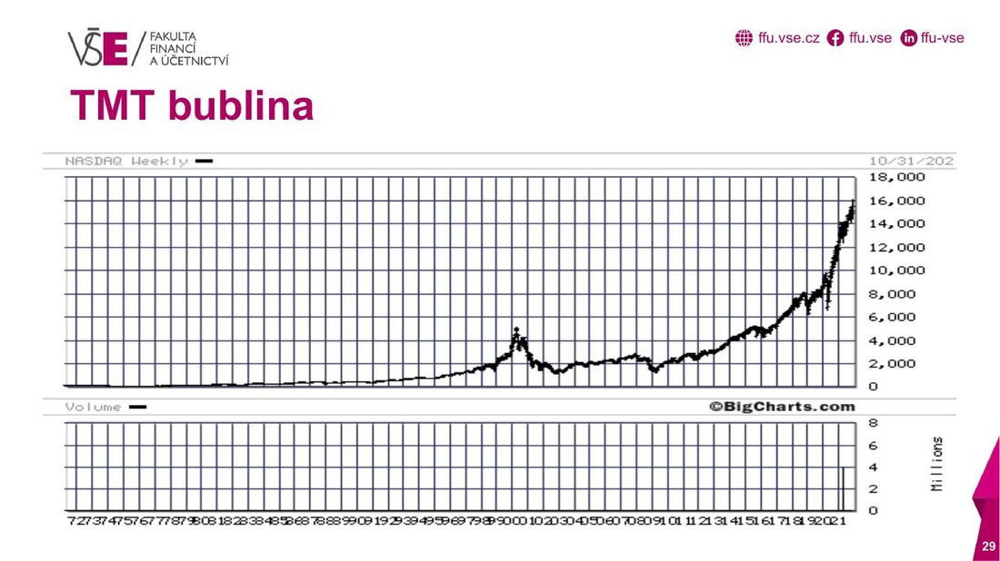
Čtyři typy bublin: odkud se berou
Slajd 31 rozděluje bubliny podle zdroje. Dá se to pamatovat jako čtyři odpovědi na otázku „proč ceny uletěly“. Jednou kvůli tomu, že lidé špatně odhadli fundamenty. Podruhé kvůli tomu, že se hádá, co bude dělat někdo jiný. Potřetí kvůli psychologii. A počtvrté proto, že to dává smysl i racionálnímu investorovi.
Významná část trhu výrazně a dlouho nadhodnotí fundamentální veličiny (odvětvové, makroekonomické, podnikové), které vstupují do modelů vnitřní hodnoty.
- Fisher (1932–33): nové vynálezy → investice → ceny → dluhové financování → spekulace → úvěry → peněžní nabídka → inflace → optimismus → bublina.
- Kindleberger (1996): exogenní šok → změna očekávání → střízlivá spekulace → iracionální spekulace → bankovní úvěry → spekulativní mánie → bublina.
Na trzích nelze dosáhnout matematické přesnosti a velký vliv mají subjektivní faktory. Bublinu vyvolává způsob tvorby kursových prognóz.
Silný vliv psychologie. Shleifer a Summers (1990) mluví o hlučném obchodování: „noise traders“ ovlivňují investiční chyby. De Bondt a Thaler (1995) zkoumají přehnané reakce na neočekávané události.
Investoři kupují nad vnitřní hodnotou v očekávání budoucích kapitálových zisků. Modifikace: deterministická, stochastická, periodicky splasknutá a neúplně splasklá bublina.
- autor Fisher / Kindleberger → fundamentální (řetězec příčin a úvěrů),
- autor Keynes → fundamentálně-spekulativní (prognózy a subjektivní faktory),
- autor Shleifer, Summers / De Bondt, Thaler → behaviorální (psychologie, noise traders),
- autor Blanchard, Watson → racionální (očekávání kapitálových zisků).
Akciové bubliny: proč vznikají i na efektivním trhu
Likvidní akciové trhy se chovají efektivně, ale efektivnost není pořád stejná. Kolísá likvidita a nahodile nastávají přelomové změny prostředí (Pastor a Veronesi 2009), což může po určitou dobu zpomalit a zkreslit zapracování nových informací do cen (s. 40). Příčiny jsou makroekonomické, sektorové i podnikové. Výkyvy sentimentu často způsobuje aktivní měnová politika centrálních bank, která je impulsem pro vznik i splasknutí (s. 41). Impulsem jsou i sektorové faktory, třeba technologická bublina z druhé poloviny 90. let. Budoucí vývoj odvětví se totiž předvídá těžko, a přitom je diskontování sektorových životních cyklů klíčem k efektivní cenotvorbě (s. 42).
Nemovitostní bubliny
Nemovitostní trhy (rezidenční: domy a byty, komerční: kanceláře, výroba, sklady) se výrazně liší od likvidních akciových trhů a obvykle se chovají neefektivně (s. 43). Proto jsou tu bubliny poměrně časté: Florida (30. léta), Japonsko (80. léta), Skandinávie (90. léta) a USA 2000–2006 (s. 45). Poruchy cenotvorby lze poznat obvykle až ex post z jednoduchých poměrů (s. 44).
- cena nemovitosti / roční nájem,
- cena nemovitosti / roční příjem rodiny,
- půjčka / hodnota zajištění (LTV),
- dluh domácností / hodnota nemovitosti.
Nadměrná úvěrová expanze a nízké sazby, příliv imigrantů, Community Reinvestment Act, hypoteční boom, sekuritizace a regulatorní arbitráže bank. Úvěry, levné peníze a sekuritizace se navzájem posilovaly a hnaly ceny nahoru.

Index vzrostl ze 100 (2000) na 221,61 (2006) a do 2009 klesl na 117,11.
Pokles od vrcholu: $$\frac{117{,}11}{221{,}61}-1 = -47{,}2\ \%$$
Vůči roku 2000: $$\frac{117{,}11}{100}-1 = +17{,}1\ \%$$
Návrat na vrchol: pokles o 47 % od vrcholu neznamená návrat na 100. Aby se cena vrátila z 117,11 na 221,61, musela by vzrůst o $221{,}61/117{,}11-1 = 89{,}2\ \%$.
Podobně Los Angeles: $166{,}54/265{,}92-1=-37{,}4\ \%$ (2006 → 2009).
Historický příklad: rakouská železniční bublina 1873
Slajdy 35–36 ukazují, že bublina se může zhroutit i bez moderních nástrojů. Jde o krach akcií vídeňských bank a pražské burzy v roce 1873. Poučení: bublina vzniká v bankovním sektoru financujícím spekulaci a její splasknutí vede k hlubokým ztrátám.

Kapitálová ztráta se spočítá jako $1-\dfrac{\text{nejnižší kurs}}{\text{nejvyšší kurs}}$.
Wiener Bankverein: $$1-\frac{40}{374}=89\ \%$$
Všeobecná česká banka (Praha): $$1-\frac{16}{211}=92\ \%$$
Dvě banky ztratily 100 %. Přepočet z kurzů sedí s uvedenými procenty.
Riziko, regulace a predikce bublin
Když bublina splaskne a skončí bankovní krizí, je její řešení drahé. Proto post-lehmanovská regulace usiluje o včasnou identifikaci rizik (s. 48). Evropská rada pro systémová rizika (ESRB) sleduje stabilitu celého systému a vydává varování a doporučení (s. 49). Přednášející ale nepředpokládá, že tyto instituce budou úspěšné, a koncept makroobezřetnostní intervence označuje za „značně nedůvěryhodný“ (s. 49, 52). To je jeho názor, ne obecně přijatý fakt.
Bubliny lze poměrně přesně identifikovat ex post, tedy zpětně. Predikce ex ante, tedy předem, selhává. Jednoduché metody (poměrové ukazatele) i pokročilé ekonometrické (variance bounds test, kointegrační test) nejsou při předpovědi spolehlivé.
TA předpokládá trendy a opakování, efektivní trh to vylučuje (slabá forma). Behaviorální finance vysvětlují, proč se ceny mohou od hodnoty odchýlit (sebevědomí, přehánění, rámování, stádo). Bubliny jsou důsledek, ale nejdou předpovědět. Ani TA, ani modely proto nezaručí, že je poznáš včas.
Závěry přednášky (s. 51–52) jsou tři. Likvidní trhy fungují poměrně efektivně, ale nahodile se ceny odchylují od vnitřních hodnot i dlouhodobě. Častější bubliny jsou na neefektivních, málo likvidních trzích, zejména nemovitostních. A včasná predikce bublin je obvykle neúspěšná.
- TA = grafické metody a indikátory (klouzavé průměry, relativní síla, momentum, šíře trhu); studie nepotvrdily nadprůměrný výnos po riziku a nákladech a TA odporuje slabé formě efektivnosti.
- Úspěch TA ve studiích často neřešil riziko, náklady a daně, krátké období ani velký vzorek akcií. Prodejci a poskytovatelé služeb chtějí časté obchodování.
- Keynes: soutěž krásy = hádání očekávání ostatních.
- Behaviorální finance: prospektová teorie (ztrátová averze), zarámování, přehánění (De Bondt, Thaler), nadměrné sebevědomí (Barber, Odean).
- Bublina = dlouhé a výrazné odchýlení ceny od vnitřní hodnoty (psychologie, spekulace, fundament, kriminalita).
- Čtyři typy: fundamentální (Fisher, Kindleberger), fundamentálně-spekulativní (Keynes), behaviorální (Shleifer, Summers), racionální (Blanchard, Watson).
- Nemovitostní trhy jsou neefektivní a bubliny častější (USA 2000–2006: úvěry, nízké sazby, sekuritizace).
- Bubliny jdou poznat ex post, predikce ex ante selhává.
9. Teorie efektivních trhů
Přednáška 26. 11. (odhad, v den průběžného testu) · P. Musílek · zdroj: Teorie efektivních trhů (1BP404_08_prednaska.pptx, čísla slajdů v závorkách); výklad doplněn z Musílek (2011) kap. 15, doplňky jsou označeny
Celé téma stojí na jedné otázce: dá se porazit trh? Teorie efektivních trhů (TET) odpovídá, že na likvidním trhu ne, protože ceny už obsahují všechno, co se dá vědět. Behaviorální finance (BF) s tím nesouhlasí, protože lidé nejsou stroje. Nejdřív si vysvětlíme, co „efektivní“ znamená a jak se to testuje. Pak obě školy postavíme proti sobě, což je hlavní část přednášky a dobrá kostra eseje.
Co je efektivní trh a proč by měl existovat
Slajd 3 definuje efektivnost jednou větou: je to zpracování nových kurzotvorných informací. Kurzotvorná informace je jakákoli zpráva, která mění hodnotu akcie, například výsledky firmy, změna sazeb nebo převzetí. Na efektivním trhu ceny takovou zprávu vstřebají velmi rychle a přesně (s. 4).
Trh, na kterém akciové kurzy velmi rychle a přesně absorbují nové kurzotvorné informace (s. 3–4). Žádná veřejně známá zpráva už není „nedoceněná“, protože se okamžitě propsala do ceny.
Proč by to tak mělo fungovat? Kvůli konkurenci. Kdyby byla akcie po dobré zprávě zjevně levná, začnou ji kupovat tisíce investorů a cena vyskočí dřív, než na tom někdo stihne vydělat. Nikdo nemusí být génius. Stačí, že je dost lidí, kteří informace sledují a podle nich obchodují. Je to jako na trhu, kde se levné věci okamžitě rozeberou, takže žádná zjevná „výhodná koupě“ nezůstane ležet.
Z toho plynou tři důsledky, které slajd 4 zdůrazňuje. Navazují na sebe jako řetěz:
- Změny cen jsou náhodné. Nová informace je z definice nepředvídatelná (kdyby šla předvídat, už by byla v ceně). Pohybuje-li se cena jen podle nových zpráv, pohybuje se náhodně. Tomu se říká náhodná procházka (random walk).
- Obchodní strategie selhávají. Žádné pravidlo („kupuj po poklesu“, „kupuj levné P/E“) nevydělává soustavně víc než trh, protože jakoukoli výhodu ostatní rychle vyrovnají.
- Výsledky investorů jsou srovnatelné. Někdo má rok štěstí, ale dlouhodobě a po zohlednění rizika vycházejí všichni zhruba stejně.
Efektivní trh neznamená, že se ceny nehýbou nebo že jsou vždy „správně“. Hýbou se pořád, ale náhodně. Trh se může mýlit, jen nejde předem poznat, kterým směrem.
Konkurence mezi investory, dostupné informace, racionální chování investorů, poctivé obchodování a investování, vysoká likvidita a nízké transakční náklady. Když některý předpoklad chybí, například na malém nelikvidním trhu, efektivnost slábne.
Myšlenka je stará. Slajd 3 uvádí Bacheliera (1900), Workinga (1934), Cowlese a Jonese (1937), Kendalla (1953) a hlavně Eugena Famu (1965, 1970, 1991, 1997).
Přednáška u Famy začíná rokem 1965. Literatura obvykle cituje 1970 (přehledový článek, který zavedl tři formy efektivnosti). V testu se drž přednášky. Když se ptají na „formy efektivnosti“, je to Fama 1970.
Tři formy efektivnosti a jak se testují
Formy se liší tím, jaké informace už v ceně jsou. Čím silnější forma, tím víc informací je „spotřebováno“ a tím méně se dá vydělat. K ověření každé formy se používá jiný test (s. 5).
V ceně jsou minulé ceny a objemy, takže nefunguje technická analýza. Test: metody kursové nezávislosti a testování TA. Podle slajdu je slabá forma podpořena empirickými důkazy.
Logika testu: zkoumá se, jestli dnešní změna ceny nějak souvisí se včerejší. Když ne (kurzy jsou „nezávislé“), z grafů se nic vyčíst nedá.
V ceně jsou navíc všechny veřejné informace, takže nefunguje ani fundamentální analýza. Test: testy událostí (event studies), výsledek „spíše ano“.
Logika testu: sleduje se, jak cena zareaguje na zveřejnění zprávy. Když se přizpůsobí okamžitě a pak se už nehýbe, analýza veřejných zpráv nepomůže.
V ceně jsou navíc i neveřejné (vnitřní) informace, takže nepomáhá ani obchodování insiderů. Test: výkonnost portfolií insiderů, výsledek „spíše ne“.
Logika testu: ptáme se, jestli lidé s vnitřními informacemi vydělávají víc. Vydělávají, proto silná forma spíše neplatí. Je to i důvod, proč je insider trading zakázaný (téma 2).
Silná ⊃ středně silná ⊃ slabá. Platí-li středně silná forma, platí i slabá, ale obráceně ne.
| Forma | Co je v ceně | Co nefunguje | Test | Platí? |
|---|---|---|---|---|
| Slabá | minulé ceny a objemy | technická analýza | kursová nezávislost, testování TA | ano (podpořena empirií) |
| Středně silná | + veřejné informace | i fundamentální analýza | testy událostí | spíše ano |
| Silná | + vnitřní informace | i obchodování insiderů | portfolia insiderů | spíše ne |
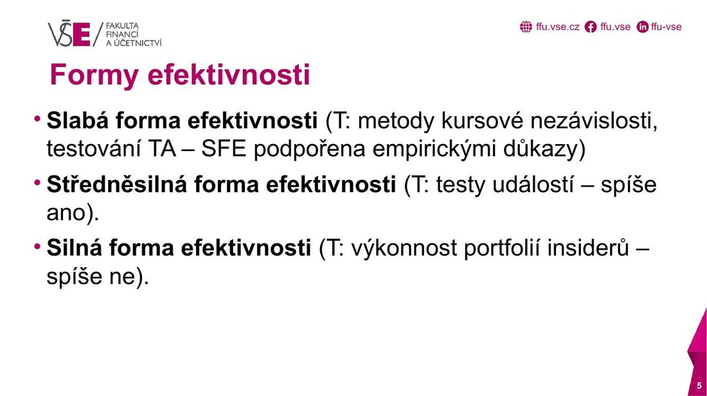
Kursová nezávislost a testování TA → slabá. Testy událostí → středně silná. Portfolia insiderů → silná. A pozor na formulace: přednáška říká „spíše ano“ a „spíše ne“, ne „prokazatelně“.
Jsou skutečné trhy efektivní?
Podle slajdu 6 se převážná většina významných světových investičních ekonomů shoduje, že nejlikvidnější akcie na americkém trhu se chovají poměrně ekonomicky efektivně. „Ekonomicky“ znamená prakticky: drobné odchylky existují, ale po započtení nákladů a rizika se na nich vydělat nedá (výklad slovního spojení je můj, slajd ho nerozvádí).
Efektivnost ale není konstantní. Mění se, protože kolísá likvidita trhu a občas přijde přelomová změna investičního prostředí. Trh pak po určitou dobu hůř vstřebává zcela nové informace (s. 6).
Neefektivnost nejlikvidnějších akcií na středoevropských trzích se výrazně snížila a v některých obdobích se chovají efektivně ve slabé formě. Prakticky to znamená, že ani na málo rozvinutých středoevropských trzích technická analýza nepřináší výraznější prospěch (Schotman a Zalewska 2004, Hájek 2006).
Vyspělé likvidní trhy jsou efektivní zhruba ve středně silné formě, takže je dlouhodobě porážet je velmi těžké. Na méně likvidních trzích to fundamentální analýzou jde. Tohle je jádro odpovědi na otázku „Dá se porazit trh?“. V poznámkách je to vedeno jako myšlenky 5 a 6 z deseti myšlenek předmětu.
Anomálie: co se do teorie nevejde
Slajd 8 jen vyjmenovává, že se na trzích objevují anomálie, tedy opakující se situace, kdy trh vynáší víc, než by podle teorie měl. Co které znamená, vysvětluje doplněk (Musílek 2011):
- small cap: akcie malých firem dlouhodobě vynášely víc, než odpovídá jejich riziku,
- nízké P/E: „levné“ akcie (nízká cena vůči zisku) vynášely víc než drahé,
- lednový efekt: akcie, hlavně malé, rostou v lednu (v prosinci je lidé prodávají kvůli daním, v lednu se vracejí),
- měsíční, pondělní a denní cyklus: výnosy se liší podle části měsíce, dne v týdnu (pondělí bývá slabší) a hodiny obchodování.
Jak je vysvětlit, záleží na tom, komu věříte. Podle TET jsou anomálie náhodné a vzácné. Jakmile se o nich ví, investoři je využijí a zmizí. Podle BF přetrvávají, protože je způsobuje lidská psychologie, která se nemění (s. 18).
Behaviorální finance vs. teorie efektivních trhů
Tohle je těžiště přednášky (slajdy 10–20). Obě školy se dívají na stejný trh, ale vycházejí z opačného pohledu na člověka. TET předpokládá racionálního investora, který správně zpracuje každou informaci. BF říká, že investor se nechová zcela racionálně a ovlivňují ho i psychologické faktory (s. 10). Ze sporu o investora pak plyne všechno ostatní.
Podle BF se cena akcie řídí aktuální „investiční náladou“, kterou generují nejen neočekávané zprávy, ale i chování stáda (s. 13). Dav se chová podobně, a proto vznikají trendy (s. 14).
Podle BF cena nemusí směřovat k rovnováze, protože akciové arbitráže často selhávají (s. 15). Investoři také reagují na nečekané zprávy přehnaně (s. 17). Podle TET naopak arbitráž institucionálních investorů drží rovnováhu průběžně a ceny reagují rychle a přesně.
| Otázka | Behaviorální finance | Teorie efektivních trhů |
|---|---|---|
| Je investor racionální? | ne zcela, ovlivňuje ho psychologie | ano |
| Jak tvoří očekávání? | každý jinak vnímá informace a riziko | podle teorie očekávaného užitku |
| Jsou likvidní trhy efektivní? | ne | ano, ekonomicky efektivní |
| Jak se chová cena? | podle „investiční nálady“, stádní chování (herding) | náhodná procházka |
| Existují trendy? | ano, vytváří je dav, který se chová podobně | ne, jde o náhodu |
| Směřuje cena k rovnováze? | nemusí, arbitráž často selhává | ano, arbitráž velkých investorů ji drží průběžně |
| Mají všichni stejné informace? | ne, investoři jsou různorodí | ano, přístup je rovný a publikum homogenní |
| Jak cena reaguje na zprávu? | přehnaně (efekt přehánění) | rychle a přesně |
| Anomálie? | dlouhodobé, protože hodně lidí rozhoduje podobně | náhodné a vzácné, po objevení zanikají |
| Dá se dlouhodobě vydělávat nad trh (po zohlednění rizika)? | ano, správným odhadem chování trhu | jen štěstím nebo nepoctivě |
| Čím se to dokazuje? | psychologické testy účastníků trhu, využívání nalezených anomálií | statistické testy (ne)závislosti časových řad |
Racionální investor → cena reaguje rychle a přesně → pohyby jsou náhodné → trendy ani trvalé anomálie nejsou → trh porazit nejde.
Iracionální, stádní investor → přehánění a nálady → vznikají trendy a bubliny → arbitráž to nestihne srovnat → kdo chování davu odhadne, vydělá.
Druhá větev navazuje na téma 8 (psychologie trhů).
Herding, trendy, přehánění a selhávající arbitráž patří BF. Náhodná procházka, rychlá reakce a zanikající anomálie patří TET. A podle TET jde nadprůměrný výnos získat jen štěstím nebo nepoctivými praktikami, ne dovedností (s. 19).
- co je efektivnost a tři formy s testy,
- empirie: slabá ano, středně silná spíše ano, silná spíše ne; likvidní americké akcie jsou ekonomicky efektivní, střední Evropa se blíží,
- BF a TET se rozcházejí v pohledu na investora, a proto i na cenu, trendy, arbitráž a anomálie,
- závěr: na likvidních trzích má navrch TET, v krátkém období a v bublinách se projevuje to, co popisuje BF.
Osnova je návrh z výpisků, není na slajdech.
- Efektivní trh rychle a přesně zapracuje nové informace do cen. Proto jsou změny cen náhodné, strategie nevydělávají soustavně víc než trh a výsledky investorů jsou srovnatelné.
- Předpoklady: konkurence, informace, racionalita, poctivost, vysoká likvidita, nízké náklady. Fama (1965, 1970, 1991, 1997); formy efektivnosti jsou z roku 1970.
- Formy: slabá (minulé ceny, platí), středně silná (veřejné informace, spíše platí), silná (i vnitřní informace, spíše neplatí). Testy: kursová nezávislost a TA, testy událostí, portfolia insiderů.
- Nejlikvidnější americké akcie jsou ekonomicky efektivní, ale efektivnost se v čase mění. Ve střední Evropě už technická analýza výrazně nepomáhá.
- Anomálie: small cap, nízké P/E, lednový efekt, měsíční, pondělní a denní cyklus. Podle TET zanikají, podle BF přetrvávají.
- Spor TET × BF stojí na investorovi: racionální, nebo psychologií ovlivněný. Z toho plyne vše ostatní (náhoda × trendy, fungující × selhávající arbitráž, rychlá × přehnaná reakce).
10. Finanční krize
Přednáška 3. 12. (odhad) · P. Musílek · zdroj: Finanční krize (1BP404_10_prednaska.pptx, čísla slajdů v závorkách)
Přednáška odpovídá na dvě otázky: co to finanční krize je a odkud se bere (deset „typů příčin“ od různých autorů) a jak vypadala ta poslední velká, globální krize 2007–2009. Pro test i ústní zkoušku je důležité umět poznat, kterému autorovi patří který mechanismus, a umět na příkladu globální krize oddělit příčiny od spouštěče.
Co je finanční krize
Krize není jedna špatná zpráva. Je to situace, kdy se zhorší skoro všechno najednou: bankám a firmám se nedostává likvidity, mnohé instituce jsou insolventní, ceny prudce kolísají, aktiva ztrácejí hodnotu a lidé přestávají ukládat peníze do finančního systému. Přednáška to shrnuje jednou definicí s pěti znaky (s. 3).
Výrazné zhoršení velké většiny finančních indikátorů. Projevuje se pěti znaky:
- nedostatečná likvidita finančního systému,
- rozsáhlá insolventnost finančních institucí,
- nárůst volatility výnosových měr finančních instrumentů,
- výrazný pokles hodnoty finančních i nefinančních aktiv,
- podstatné snížení alokace úspor ve finančním systému.
Úvěrová krize, krize likvidity, měnová (devizová) krize a investiční krize.
Doplněk (Musílek 2011, kap. 6): jinde se krize dělí také na bankovní, dluhové, akciové (krachy) a systémové. Pro test se drž členění ze slajdu 3.
Deset typů příčin: celkový přehled
Slajd 4 vyjmenovává, čím může být krize „vyvolaná“: nadměrnou úvěrovou expanzí, chybnou makroekonomickou politikou, nadměrnou finanční liberalizací, finanční panikou, splasknutím cenové bubliny, selháním trhu, nadměrným přílivem zahraničního kapitálu, institucionální nedokonalostí, hospodářskými cykly a strukturálními problémy a skupinou faktorů. K většině z nich přednáška přidává jednoho nebo několik autorů a řetězec příčin a následků (šipkami). Takový řetězec je potřeba umět převyprávět vlastními slovy. Nejpodrobnější je ten první, úvěrový, protože na něm stojí i výklad globální krize.
| Krize vyvolaná… | Autoři (s.) | Jádro mechanismu |
|---|---|---|
| úvěrovou expanzí | Fisher, Minsky, Eichengreen a Portes, Kindleberger (s. 5) | boom na dluh, předlužení, prodeje v tísni, pád cen aktiv, insolvence bank, panika |
| chybnou makropolitikou | navazuje na Krugmanův model krize platební bilance (s. 8) | měnová expanze, deficit a pevný kurs → devizová spekulace, pád rezerv, změna kursového režimu |
| nadměrnou liberalizací | Kaminsky a Reinhart, Bosworth, Jonáš, Hutchinson a McDill (s. 9) | příliv krátkodobého zahraničního kapitálu, úvěry na spekulace, bublina, její prasknutí |
| finanční panikou | Dybvig a Diamond, Radelet a Sachs (s. 10) | panika vkladatelů a investorů, panický úprk zahraničního kapitálu |
| splasknutím bubliny | Blanchard a Watson (s. 11) | splasknutí racionální cenové bubliny snižuje cenu aktiv, a tím vyvolá krizi |
| selháním trhu | Akerlof a Romer, Krugman, Mishkin (s. 12) | informační asymetrie + liberalizace → pokles hodnoty aktiv bank |
| přílivem zahraničního kapitálu | MMF, Světová banka (s. 13) | zahraniční kapitál + měnové a institucionální problémy → nejistota |
| institucionální nedokonalostí | Dooley (s. 14) | „kamarádský“ kapitalismus + neúčinná regulace → „kamarádské“ úvěry |
| cykly, strukturální problémy, skupina faktorů | (s. 15) | jen vyjmenováno, bez mechanismu |
Na slajdech 5, 8, 9, 10 a 12 mají řetězce v původním souboru rozbité symboly (místo šipek ↑ a ↓ se zobrazují ikonky). Směr změn v řetězcích níže je dovozen z logiky řetězce, ne přečten ze slajdu. Slajd 15 a další bez řetězců jsou čitelné.
Úvěrová expanze: Fisher a Minsky
Nejznámější vysvětlení vidí původ krize v nadměrném zadlužování. Fisher (1932, 1933) popisuje, jak se dluhem financovaný boom změní v pád. Minsky (1972, 1995) pak ukazuje, kdo všechno se při takovém boomu zadlužuje a jak křehce. Eichengreen a Portes (1987) a Kindleberger (1996) ten pohled sdílejí.
Nové vynálezy a objevy → investice ↑ → reálný výstup ↑ → ceny ↑ → investice ↑ → dluhové financování ↑ → spekulace ↑ → úvěry ↑ → rezervy bank ↓ → peněžní nabídka ↑ → inflace ↑ → optimismus ↑ a reálná hodnota dluhů ↓ → dluhové financování ↑ → předluženost → nebezpečí insolventnosti → prodej aktiv v tísni → cena aktiv ↓ → nevýkonné úvěry ↑, vlastní kapitál bank ↓ → insolventnost bank → nejistota vkladatelů a run na banky → finanční panika → cena aktiv ↓, reálný výstup a zaměstnanost ↓ → bankroty nebank i bank → finanční krize.

Dlouhý řetězec se dá zkrátit na tři kroky: (1) dluhem živený boom, (2) předlužení a prodeje aktiv v tísni, (3) pád cen aktiv, ztráta kapitálu bank, panika. Dlužníci kvůli předlužení prodávají aktiva, ceny klesají, bankám klesá kapitál, ty omezí úvěry a samy nuceně prodávají další. Pokles cen se tak sám posiluje.
Minsky třídí dlužníky (deficitní jednotky) podle toho, z čeho své dluhy splácejí (s. 6–7). Čím víc se jednotka spoléhá na to, že dluh bude možné obnovit nebo že ceny aktiv porostou, tím je křehčí.
| Skupina | Co očekává | Jak funguje |
|---|---|---|
| opatrné (hedge) | očekávané důchodové peněžní toky převýší splatné závazky (úroky i jistiny) | čím větší podíl vlastního kapitálu, tím pravděpodobnější opatrné financování |
| spekulativní (speculative) | peněžní toky a kapitálové zisky stačí na úroky, ne na umoření jistiny | stojí na opakovaném refinancování (obnova úvěrů nebo nové výpůjčky); rozvrat finančních kanálů při krizi a úpadcích bank je poškozuje |
| Ponziho (Ponzi) | nestačí ani na úroky | extrémně spekulují na enormní růst cen spekulativních aktiv a pokles úrokových sazeb, nebo mají podvodné schéma typu pyramidové hry |
Opatrné → spekulativní → Ponziho. Opatrná jednotka splatí všechno z vlastních příjmů. Spekulativní splatí úroky, ale jistinu musí neustále obnovovat. Ponziho jednotka nezvládne ani úroky, takže přežije jen dokud rostou ceny aktiv nebo klesají sazby.
Doplněk (Minsky; Kindleberger, Manias, Panics and Crashes): stabilita plodí nestabilitu. V klidných letech se firmy a banky posouvají od opatrného přes spekulativní až k Ponziho financování. Když přestanou růst ceny aktiv, systém se zhroutí („Minskyho moment“). Na slajdech to není.
Další teorie příčin
Ostatní vysvětlení mají stejnou stavbu: spouštěč → řetěz následků → krize. Liší se tím, kde krize začíná. Jednou je to politika státu, jindy zahraniční kapitál, psychologie davu nebo chyba v tom, jak funguje trh.
Neadekvátní politika (měnová expanze, fiskální deficit, pevně zavěšený kurs) → krize platební bilance → devizová spekulace ↑ → devizové rezervy ↓ → změna kursového režimu → prodej domácích aktiv zahraničními investory → finanční krize.
Tuhá regulace a „finanční deprese“ → liberalizace a pevný kurs → optimismus, úvěry bank a růst → příliv krátkodobých zahraničních zdrojů → poptávka na spekulativních trzích, růst hodnoty akcií a nemovitostí, úvěry na spekulace → cenová bublina → zahraniční portfoliové spekulanty změní chování, krátkodobý kapitál odchází, prodeje aktiv → prasknutí bublin → insolvence finančních i nefinančních firem → krize.
„Odjištění spouště“ → panika → panický úprk zahraničního kapitálu → pád kursu domácí měny → insolventnost firem → pokles likvidity systému → neadekvátní doporučení MMF → krize. Doplněk (výklad k Dybvigovi a Diamondovi 1983): totéž platí pro vkladatele, když se lidé bojí, že banka padne, jdou si pro peníze, a tím ji skutečně položí.
Blanchard a Watson (1982): splasknutí racionální cenové bubliny snižuje cenu aktiv a tím vyvolá krizi.
Mishkin (s. 12): informační asymetrie + liberalizace → pokles hodnoty aktiv bank. Varianta A: „chřupnutí úvěrů“ → méně zdrojů pro dlužníky → méně podnikání, horší bonita dlužníků → pokles hodnoty aktiv bank → bankovní krize → finanční krize. Varianta B: měnová (devizová) krize → růst úroků → růst finančních nákladů dlužníků → horší bonita → totéž.
Přílev zahraničního kapitálu (MMF, Světová banka): zahraniční kapitál + měnové a institucionální problémy → finanční nejistota → negativní faktory → krize.
Institucionální nedokonalost (Dooley 1997): špatná ochrana práv vnějších investorů, neefektivní vypořádání dluhů, „kamarádský“ kapitalismus + neúčinná regulace → „kamarádské“ úvěrové principy → pokles hodnoty bankovních úvěrů → krize.

- Fisher, Minsky, Kindleberger → úvěrová expanze,
- Krugman → platební bilance (chybná makropolitika),
- Dybvig a Diamond, Sachs → panika,
- Blanchard a Watson → bublina,
- Mishkin → selhání trhu (informační asymetrie),
- Dooley → kamarádský kapitalismus (institucionální nedokonalost),
- Jonáš, Kaminsky a Reinhart → nadměrná liberalizace.
Kolik krize stojí
Náklady bankovních krizí se podle s. 16 měří dvojím způsobem. Buď jako restrukturalizační náklady, tedy co stojí záchrana a sanace bank, nebo jako kumulované ztráty ekonomického výstupu (HDP). Druhý údaj bývá mnohem větší, protože zahrnuje to, co ekonomika kvůli krizi nevyprodukovala. Tabulka na s. 26 (Laeven a Valencia, MMF, 2010) uvádí ztrátu výstupu v % HDP za celé období krize.
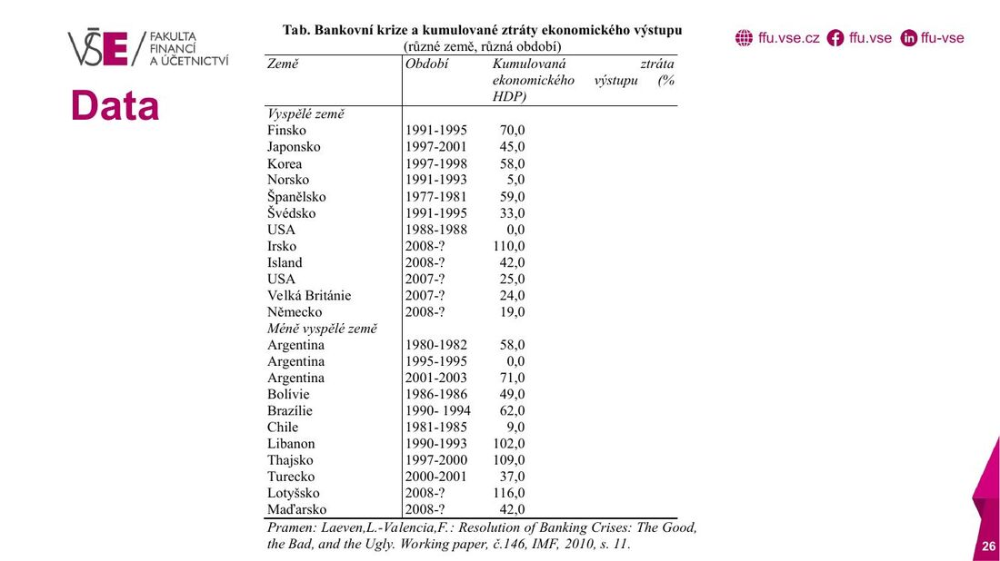
Krize 2007–2009 stála USA 25 % a Velkou Británii 24 % HDP kumulativně, Německo 19 %, Irsko 110 %. Ve vyspělých zemích je extrém Finsko 1991–1995 (70 %) a Španělsko 1977–1981 (59 %). Norsko 1991–1993 mělo jen 5 %, USA 1988 0 %.
Doplněk (Laeven a Valencia 2010): jde o součet ztrát výstupu proti trendu za celé období krize, proto může přesáhnout 100 % ročního HDP.
Globální finanční krize 2007–2009: průběh
Krize nepřišla najednou, ale po stupních (s. 19–20). V roce 2007 se objevily problémy s subprime hypotékami (hypotéky méně bonitním dlužníkům) a s hedgeovými fondy. V březnu 2008 musela být zachráněna banka Bear Stearns, kterou převzala JP Morgan. V září 2008 dostaly nucenou správu hypoteční agentury Freddie Mac a Fannie Mae a byly de facto zestátněny. Hned potom zkrachovala investiční banka Lehman Brothers, což byl šok pro světové trhy a z problémů se stala globální krize.
- 2007: krize subprime hypoték, problémy hedgeových fondů,
- 3/2008: Bear Stearns převzat bankou JP Morgan,
- 9/2008: Freddie Mac a Fannie Mae pod nucenou správou (de facto zestátněny),
- poté: krach Lehman Brothers (doplněk: 15. 9. 2008) a propuknutí globální krize.
Projevy přesně odpovídají definici ze slajdu 3 (s. 20): nedostatečná likvidita, rozsáhlá insolventnost institucí, růst volatility, pokles hodnoty finančních i nefinančních aktiv a menší objem alokovaných úspor.
Příčiny globální krize
Přednáška nepopisuje krizi jako nehodu, ale jako důsledek několika příčin, které se sečetly (s. 21–23). Základem byla nadměrná úvěrová expanze: hypoteční úvěry domácnostem rostly v letech 2002–2005 o 13–14 % ročně (2003: 14,2 %), pak růst skončil a v letech 2008–2009 úvěry klesaly. K tomu přišly spekulace a pákový efekt a masivní sekuritizace. Banky balily poskytnuté hypotéky do cenných papírů (CDO) a prodávaly je dál. Tím se riziko rozptýlilo, ale zároveň nikdo přesně nevěděl, kdo ho nese. Sekuritizace tak výrazně zvýšila informační asymetrii na globálních trzích.
Inovace sekundární sekuritizace: dluhové závazky (zejména hypotéky) se zabalí do obchodovatelných cenných papírů. Podle s. 22 masivní sekuritizace hypoték amerických bank výrazně zvýšila informační asymetrii na globálních finančních trzích.
- nadměrná úvěrová expanze (hypotéky 2002–2005 o 13–14 % ročně),
- nadměrná spekulace a pákový efekt domácností, finančních institucí i některých států,
- technologická akciová cenová bublina (TMT 2000),
- masivní sekundární sekuritizace včetně CDO,
- selhání pro-aktivního přístupu k regulaci.
Krize ukázala zaostalost institucionálního a regulatorního rámce globálního trhu. Překážkou i příčinou byly národně orientovaní regulátoři, regulatorní a daňový dumping a neexistence akceschopného celosvětového věřitele poslední instance. Dřívější globální paniky: Hongkongská chřipka (1997), krize LTCM (1998), TMT krize (2000). Autor požaduje globální architekturu trhu: globální regulaci a dohled, omezení regulatorních a daňových arbitráží a funkční celosvětový systém věřitele poslední instance.
Pád Lehmanu je spouštěč, ne příčina. Příčiny jsou úvěrová expanze, pákový efekt, spekulace, sekuritizace s informační asymetrií a selhání regulace. V eseji odděluj příčiny, spouštěč a šíření krize.
Data ke globální krizi
Slajdy 24–28 jsou jen grafy a tabulky pod nadpisem „Data“. Je dobré z nich znát řády a směr: ceny nemovitostí vrcholily 2006–2007 a pak se zhroutily, úvěry přestaly růst, emise CDO vyletěly v roce 2006 a tržní kapitalizace bank se u hlavních hráčů zhroutila.
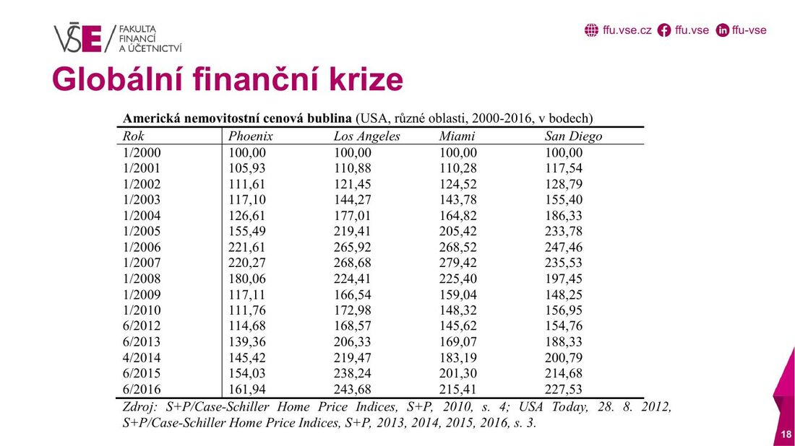
Phoenix: vrchol 221,61 (1/2006), dno 111,76 (1/2010):
$$\frac{111{,}76}{221{,}61} - 1 \approx -49{,}6\,\%$$
Ostatní města stejným postupem: Los Angeles 268,68 → 166,54 (1/2009): −38,0 %; Miami 279,42 → 148,32 (1/2010): −46,9 %; San Diego 247,46 (1/2006) → 148,25 (1/2009): −40,1 %.
Phoenix se za 6 let zdvojnásobil (1/2006 = 2,22× základu z 1/2000), poté ztratil polovinu. Do 6/2016 (161,94) se vrátil jen k 1,62× základu.
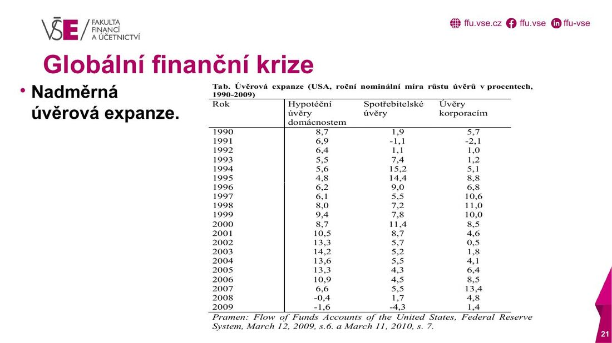
U CDO (s. 24–25) vzrostly nové emise ze 157 mld. USD (2004) a 272 (2005) na 552 (2006), 503 (2007) a jen 168 za první pololetí 2008. Největší ručitelé emisí 2007: Citibank (41 mld. USD, 9,9 %), Merrill Lynch (38 mld., 9,2 %), Deutsche Bank (24 mld.), Wachovia (22), JP Morgan (20). Deset největších ručitelů pokrylo přibližně 232 mld. USD, tj. asi 56 % trhu. Riziko tedy nebylo rozptýlené mezi tisíce hráčů, ale soustředěné u několika velkých bank.

Citigroup: $\frac{17\,016}{286\,337} - 1 \approx -94{,}1\,\%$. Bank of America: $-72{,}7\,\%$. JP Morgan Chase: $-13{,}7\,\%$.
HSBC: $\frac{199\,785}{172\,938} - 1 \approx +15{,}5\,\%$. Banco Santander: $+7{,}5\,\%$.
Citigroup tedy ztratil téměř celou tržní hodnotu, zatímco banky s menší expozicí vůči americkým hypotékám ji udržely.
Odezva na krizi a regulace
Obsah přednášky uvádí „odezvu na krizi“, ale slajdy se jí nevěnují.
Doplněk (Musílek 2011, kap. 6; BCBS, Basel III, 2010):
- krátkodobě: snížení sazeb k nule, dodání likvidity, kvantitativní uvolňování (QE), záchrana institucí (bail-out: kapitálové injekce, záruky, znárodnění), fiskální stimuly,
- dlouhodobě: Basel III (víc kapitálu, pákový poměr, likviditní ukazatele LCR a NSFR), dohled nad systémovým rizikem, bail-in (ztráty nesou akcionáři a věřitelé banky), v USA Dodd-Frank Act (téma 12).
- Finanční krize = zhoršení většiny finančních indikátorů (likvidita, insolventnost, volatilita, pokles aktiv, nižší úspory). Druhy: úvěrová, likvidity, měnová, investiční.
- Deset typů příčin: úvěrová expanze, chybná makropolitika, liberalizace, panika, bublina, selhání trhu, přílev kapitálu, institucionální nedokonalost, cykly, skupina faktorů.
- Úvěrová expanze: Fisherův řetězec (předluženost, prodeje v tísni, pád cen a kapitálu bank) a Minsky (opatrné → spekulativní → Ponziho; spekulativní refinancují jistinu, Ponziho nezvládnou ani úroky).
- Autor ↔ teorie: Fisher, Minsky, Kindleberger = úvěry; Krugman = platební bilance; Dybvig a Diamond, Sachs = panika; Blanchard a Watson = bublina; Mishkin = selhání trhu; Dooley = kamarádský kapitalismus.
- Náklady: restrukturalizační náklady a kumulované ztráty HDP (Irsko 110 %, Thajsko 109 %, USA 2007 25 %).
- Globální krize: bublina na nemovitostech, úvěrová expanze, páka, masivní sekuritizace (CDO), selhání regulace. Průběh: Bear Stearns 3/2008, Freddie a Fannie 9/2008, Lehman.
- Lehman je spouštěč, ne příčina. Podle Musílka krize odhalila neexistenci globálního regulátoru a věřitele poslední instance, regulatorní a daňový dumping.
11. Mezinárodní investování a reálná aktiva
Přednáška 10. 12. (odhad; odevzdání projektu) · P. Musílek · zdroj: Mezinárodní investování (1BP404_11_prednaska.pptx, čísla slajdů v závorkách)
Téma se točí kolem jedné myšlenky: nedávat všechna vejce do jednoho koše, a to ani do koše jedné země. Nejdřív se podíváme, proč má smysl investovat v zahraničí a co to stojí navíc. Pak, proč globalizace tuhle výhodu časem ukusuje a kdy úplně selže. Potom, jak se do zahraničí dá investovat. Nakonec přijdou reálná aktiva, hlavně zlato, a nemovitosti.
Proč investovat v zahraničí: diverzifikace systematického rizika
Základem je CAPM. Celkové riziko akcie se skládá z jedinečného rizika (týká jen jedné firmy) a systematického rizika (týká se celého trhu). Jedinečné riziko zmizí, když drží člověk dost různých akcií, a to i na domácím trhu. Systematické riziko ale zůstane, protože celý domácí trh se může propadnout najednou. Právě na něj má smysl vzít zahraniční trhy, které se nehýbou přesně stejně (s. 3). Zakladatelem teorie mezinárodního investování je B. Solnik.
Čím nižší je korelace mezi trhy, tím víc klesne riziko portfolia, které je složené z obou. Mezi vyspělými trhy je korelace střední (0,25 až 0,77), mezi rozvíjejícími se trhy a ostatními kolem nuly.

U rozvíjejících se trhů (EM, 1985–1996) je přínos největší. Jejich korelace s ostatními trhy je skoro nulová: Argentina −0,06, Brazílie 0,12, Chile 0,11, Indie −0,15, Indonésie 0,11 a Jordánsko 0,11 (s. 5). Kdo k portfoliu vyspělých trhů přidá takovou zemi, sníží riziko nejvíc.
Doplněk (vlastní model k datům ze s. 4–5): dvě akcie po 50 %, obě se směrodatnou odchylkou 20 %. Riziko portfolia je $\sigma_p = \sigma\sqrt{(1+\rho)/2}$.
- $\rho = 1$: $\sigma_p = 20\,\%$ (žádný efekt).
- $\rho = 0{,}58$ (Francie–USA): $20 \cdot \sqrt{0{,}79} = $ 17,8 %.
- $\rho = 0{,}25$ (Itálie–Švýcarsko): $20 \cdot \sqrt{0{,}625} = $ 15,8 %.
- $\rho = -0{,}06$ (typický EM): $20 \cdot \sqrt{0{,}47} = $ 13,7 %.
Čím je korelace nižší, tím víc riziko klesá.
Diverzifikace není zadarmo. Zahraniční investor nese oproti domácímu ještě pět dalších rizik (s. 3):
- devizové (kurz měny se hýbe jinak než akcie),
- riziko země (politická a ekonomická situace),
- daňové (jiná pravidla a zdanění),
- riziko neefektivnosti trhu,
- riziko nepoctivých praktik.
Doplněk (vzorec z Musílek 2011): koupě za 100 000 Kč při kurzu 25 CZK/USD dá 4 000 USD. Za rok akcie vzrostou o 10 % na 4 400 USD a koruna posílí na 22 CZK/USD.
- Hodnota v Kč: $4\,400 \cdot 22 = 96\,800$ Kč.
- $(1+r_{CZK}) = (1+r_{USD})\cdot\frac{22}{25} = 1{,}10 \cdot 0{,}88 = 0{,}968$, tedy −3,2 %.
V dolarech akcie vydělaly 10 %, ale v korunách investor prodělal, protože koruna zesílila.
Když diverzifikace selže
Výhoda nízké korelace platí v klidných časech. V krizi to bývá jinak. Slajd 6 ukazuje korelační matici světových indexů během tzv. hongkongské chřipky (15. 10. – 3. 11. 1997), kdy se pád z Asie přenesl na celý svět. Skoro všechny korelace jsou vysoké (často 0,8–0,99), i mezi trhy, které jsou jindy málo propojené.

V krizi korelace prudce vzrostou, takže diverzifikace selhává právě tehdy, kdy je nejvíc potřeba (s. 6). Neplatí tedy, že mezinárodní diverzifikace chrání nejvíc v krizích.
Globalizace trhů a proč korelace rostou
Podle s. 8 vznikla globalizace investičních trhů ze tří důvodů. První je systémová deregulace od druhé poloviny 80. let. Druhým je boom technologií: elektronické obchodní systémy propojily prostředníky celého světa, zpracují příkaz za několik mikrosekund a ceny se šíří v reálném čase (s. 11). Třetím je expanze institucionálních investorů v 90. letech (penzijní fondy, pojišťovny, banky, investiční, podílové a hedgeové fondy), jejichž služeb využívají i individuální investoři (s. 12).
Liberalizace základních struktur trhů: zrušení devizových kontrol, zvláštních daní pro cizince, otevření emisí zahraničním emitentům a zapojení zahraničních prostředníků do emisí na domácím trhu. Ve vyspělých zemích ji odstartoval londýnský „velký třesk“ 1986 (s. 9).
Odstranění omezení činností komerčních bank a investičních prostředníků a liberalizace investičních politik různých institucionálních investorů (s. 10).
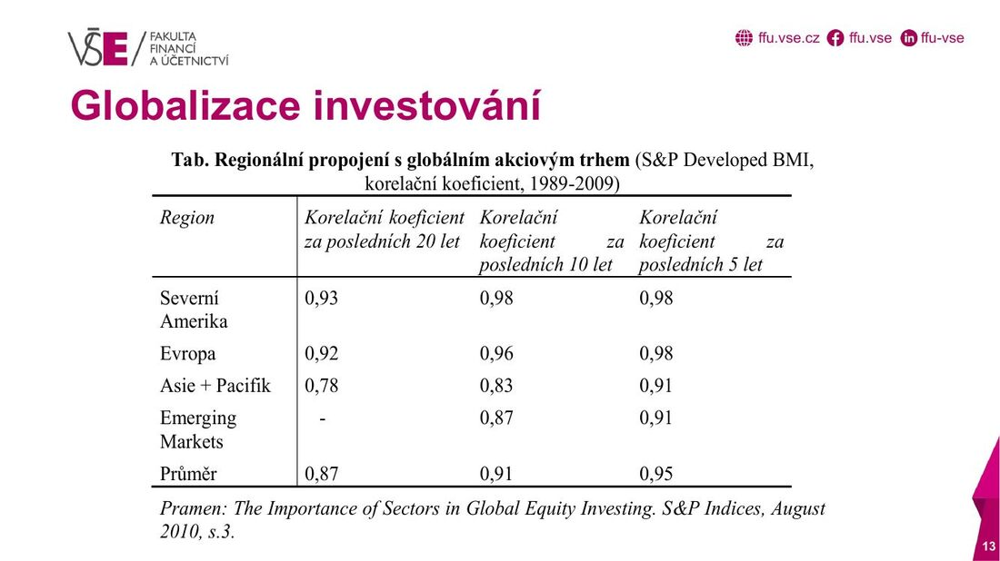
Stejně se chovají sektory (s. 14): průměrná korelace s globálním trhem je 0,80 (20 let), 0,81 (10 let) a 0,88 (5 let). Nejpropojenější je průmysl (0,95), nejméně energetika (0,67), péče o zdraví (0,69) a služby (0,70).
Čím víc jsou trhy provázané, tím vyšší je korelace regionů i sektorů s globálním trhem. Přínos diverzifikace přes regiony i sektory se proto zmenšuje. Kdo chce skutečně nízkou korelaci, musí sáhnout po rozvíjejících se trzích (viz s. 5) nebo po reálných aktivech, ke kterým se dostaneme dál.
Doplněk (Musílek 2011, kap. 14): home bias (hádanka domácí zaujatosti) je situace, kdy investoři drží výrazně víc domácích akcií, než odpovídá podílu jejich země na světovém trhu. Proti tomu stojí mezinárodní CAPM, kde je tržním portfoliem celý svět.
Jak se do zahraničí investuje
Na slajdu 16 je sedm metod. Dají se řadit podle toho, jak moc práce investor odevzdá někomu jinému. Nejblíž k přímé investici mají stvrzenky a zahraniční instrumenty, nejdál fondy, které rozhodují za investora. Nejméně přímé jsou akcie multinacionálních firem.
ADR (American Depositary Receipt) vydává americká banka na zahraniční akcie a obchoduje se s ním v USD v USA. GDR je obdoba na více trzích (s. 16).
- ADR a GDR: zahraniční akcie obchodovatelné na domácím trhu.
- ETF a indexované fondy: pasivní, levná a široká diverzifikace.
- Aktivně spravované fondy: manažer vybírá trhy a tituly, vyšší poplatky.
- Investiční certifikáty a zahraniční investiční instrumenty (přímý nákup titulů v zahraničí).
- Akcie multinacionálních firem: nepřímá expozice vůči zahraničí, slabší diverzifikace než přímá investice.
Reálná aktiva: proč a s jakými omezeními
Dosud šlo o finanční instrumenty, tedy nárok na něčí budoucí platby. Reálná aktiva jsou něco jiného: věc, která má hodnotu sama o sobě. Proč ji držet, říká s. 17: chrání před inflací, diverzifikují riziko, uklidňují lidi, kteří se bojí krize, a dávají umělecký zážitek. Háček je, že jejich trhy jsou nelikvidní a neefektivní a investování má dodatečné náklady.
Fyzická aktiva s vlastní užitnou nebo sběratelskou hodnotou: zlato, nemovitosti, umění, plodiny. Nejsou nárokem na něčí budoucí platby.
- Ochrana před inflací (USA, 1960–88, s. 18): korelace výnosu s inflací je u nemovitostí 0,85 a u zlata 0,63. Když rostou ceny, rostou i hodnoty těchto aktiv.
- Diverzifikace (USA, 80. léta, s. 19): korelace nemovitostí s S&P 500 i s dlouhými podnikovými dluhopisy je −0,06, tedy skoro nulová.
Nemovitosti tedy dělají obojí: chrání před inflací a nejsou propojené s akciemi a dluhopisy.
Slajd 20 mezi tradiční příležitosti řadí zemědělské plodiny, drahé kovy, umělecké sbírky a nemovitosti. Seznam „nových příležitostí“ je na slajdu prázdný a doplňuje se na přednášce.
Zlato: od zlatého standardu k investičnímu aktivu
Zlato bylo dlouho základem měny, a proto má dnes zvláštní postavení. Slajd 22 popisuje tři etapy. Nejdřív byl bimetalismus a pak zlatý monometalismus (1816 Anglie, po 1870 Německo, Švýcarsko, Francie, Belgie). Následoval standard zlaté mince. Potom přišla dlouhá demonetizace: neplnohodnotné mince, standard zlatého slitku, po Velké hospodářské krizi zrušení směnitelnosti bankovek za zlato (dolar 1934, koruna 1936), standard zlaté dolarové devizy (1971) a postupná změna struktury devizových rezerv.
- volný oběh zlatých mincí,
- volná směnitelnost papírových peněz za zlato,
- právo ražby plnohodnotných zlatých mincí se zákonným obsahem zlata, pro stát i soukromníky,
- volný pohyb zlata mezi zeměmi.
Dokud byla cena zlata pevně spojená s měnou, nemělo smysl ho „investovat“. Po zrušení směnitelnosti se jeho cena uvolnila a zlato se stalo běžným investičním aktivem. To je vidět na grafu ceny.
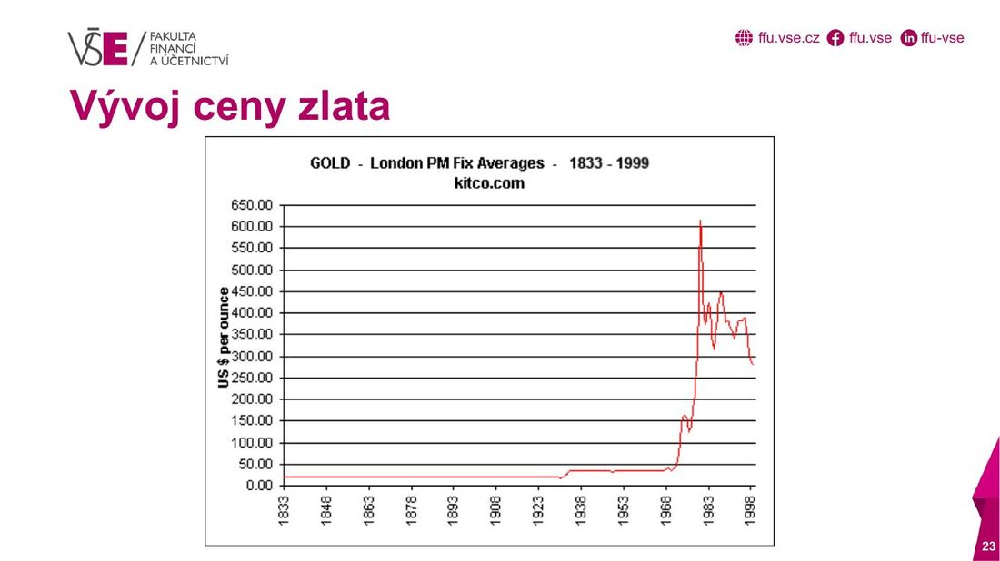
Od roku 2000 cena zlata roste z asi 300 na přes 1 800 USD/oz (2011), poté klesá a od 2019 znovu roste k 2 000 USD/oz (s. 24). Slajdy 25–26 ukazují denní vývoj (duben 2023, kolem 1 997 USD/oz).
Trh zlata: kdo poptává a kdo nabízí
Trh zlata má dvě strany. Na straně poptávky je nejdůležitější klenotnictví, na straně nabídky těžba. Pozoruhodné je, že nabídku tvoří i prodej starých zásob (detezaurace) a centrální banky (s. 27).
| Poptávka | t | Nabídka | t |
|---|---|---|---|
| Klenotnictví | 2 436 (68 %) | Těžba | 2 209 (60 %) |
| Investice | 493 | Detezaurace (prodej starých zásob) | 1 016 (28 %) |
| Průmysl | 670 | Centrální banky | 447 (12 %) |
Hlavní poptávku tvoří klenotnictví, nabídka je z 60 % těžba.
Celková poptávka je 3 599 t.
- Klenotnictví: $2\,436 / 3\,599 = $ 67,7 %.
- Investice: $493 / 3\,599 = $ 13,7 %.
- Průmysl: $670 / 3\,599 = $ 18,6 %.
Na s. 27 jsou u investic a průmyslu procenta (19 % a 14 %) zjevně prohozená. Z tun vychází investice 13,7 % a průmysl 18,6 %. Neopírej se o procenta ze slajdu u těchto dvou řádků.

Zásoby (s. 30): vytěženo je 163 000 t (2008), nevytěžených je odhadem 22 000 t a těžební náklady jsou asi 250 USD/oz. Z vytěženého zlata je 51 % v klenotech, 18 % ve veřejném sektoru, 17 % v investicích a 12 % v průmyslu.
Jak se do zlata investuje
Zlato se dá držet přímo, nebo přes finanční produkty (s. 31). Přímo jako pruty (Londýn, Curych; s. 31–34, např. tola bar) nebo mince. Nepřímo přes ETF, deriváty na zlato, zlaté dluhopisy nebo akcie zlatých dolů.
Tezaurační mince (Krugerrand, Maple Leaf, Červoněc, Panda): jejich cena se řídí cenou zlata. Numismatické mince (Sovereign, Double Eagle): cena zahrnuje i sběratelskou hodnotu.
Zlato a akcie dolů nejsou totéž. Cena akcie dolů závisí na ceně zlata, ale i na množství zásob, těžebních nákladech, regulaci těžby, ekonomickém a politickém riziku. Na slajdech je za 1 rok nejlepší akcie +200 % a nejhorší −99,9 %, tedy extrémní volatilita.
Doplněk (obecná literatura): zlato nenese úrok, proto jeho cena souvisí s reálnými sazbami (pokles reálných sazeb → růst ceny), s kurzem dolaru (slabší dolar → vyšší cena) a s nákupy centrálních bank. Investiční zlato je v EU osvobozeno od DPH.
Umělecké sbírky a nemovitosti
Slajdy 44–45 se věnují uměleckým sbírkám (aukce, sběratelské knihy, keramika, obrazy, poštovní známky). Slajd 46 pak ukazuje indexy cen nemovitostí v USA. Ceny vyvrcholily kolem 2006, v krizi 2008–11 klesly a poté vzrostly na 307 až 385 (1/2000 = 100).
- Phoenix: 1/2006 = 221,65, 1/2011 = 101,54. Pokles $= 101{,}54/221{,}65 - 1 = $ −54,2 %.
- Průměrný roční růst 2000–2022 (22 let): $(307{,}47/100)^{1/22} - 1 = $ 5,2 % (Los Angeles 6,3 %, Miami 5,9 %, San Diego 6,3 %).
Nemovitosti za 22 let dobře vydělaly, ale v krizi je potkal hluboký propad.
Nemovitosti chrání před inflací a mají nízkou korelaci s akciemi, ale neplatí, že nikdy neklesají. Phoenix 2006–2011 přišel o víc než polovinu hodnoty.
Doplněk (obecná literatura): hodnota nemovitosti ≈ čistý nájem / požadovaná výnosnost (cap rate). REIT je burzovně obchodovaná nemovitostní společnost, která vyplácí většinu zisku (v USA 90 %). Přímá investice je nelikvidní a nese koncentraci rizika.
- Mezinárodní investování diverzifikuje systematické riziko (Solnik). Vyspělé trhy mají korelaci 0,25 až 0,77, EM kolem nuly.
- Zahraničí přidává rizika devizové, země, daňové, neefektivnosti a nepoctivých praktik.
- V krizi korelace vzrostou (Hongkong flu 1997), takže diverzifikace selhává.
- Globalizace: deregulace (investičních trhů a institucionální, Londýn 1986), technologie, institucionální investoři. Korelace s globálním trhem roste (průměr 0,87 → 0,95).
- Metody: ADR/GDR, ETF, indexované a aktivní fondy, certifikáty, zahraniční instrumenty, multinacionální firmy.
- Reálná aktiva: motivy inflace, diverzifikace, strach, zážitky. Omezení: nelikvidita, neefektivita, náklady. Korelace s inflací: nemovitosti 0,85, zlato 0,63.
- Zlato: od zlatého standardu k demonetizaci, nabídka z 60 % těžba, poptávka hlavně klenotnictví. Metody: pruty, ETF, deriváty, dluhopisy, mince (tezaurační × numismatické), akcie dolů.
12. Investiční bankovnictví
Přednáška 17. 12. (odhad, spolu s tématem 13) · P. Musílek · zdroj: Investiční bankovnictví (1BP404_12_prednaska.pptx, s. 1–73)
Téma řeší jednu otázku: smí jedna banka přijímat vklady spořitelů a zároveň sázet na trzích cenných papírů? Před krizí se to stíralo, po krizi regulátoři zkoušeli banky znovu rozdělit. Projdeme, co investiční bankovnictví je, jak ho reguluje EU (MiFID), jak se ho USA a Evropa snažily oddělit od běžných bank (Glass-Steagall, Volcker, Vickers) a na konci dvě konkrétní obchodní techniky, margin trading a short selling.
Co je investiční bankovnictví a čím se liší od komerčního
Investiční bankovnictví podle s. 3 zahrnuje transakce s cennými papíry, deriváty a dalšími instrumenty trhů cenných papírů. Patří sem emisní obchody, vlastní a zprostředkovatelské obchody, depotní obchody, majetková správa a fúze a akvizice (M&A, spolu s finančním inženýrstvím).
Činnosti kolem cenných papírů a derivátů: emise, obchodování na vlastní i cizí účet, úschova, správa majetku, fúze a akvizice. Vydělává se na provizích a kapitálových ziscích, ne na vkladech.
Nejlépe se to pochopí na srovnání. Komerční banka je jako velká pokladna: bere vklady, půjčuje úvěry a vede platby. Investiční prostředník je jako obchodník na trhu: kupuje a prodává instrumenty a hlavně mimo bilanci.
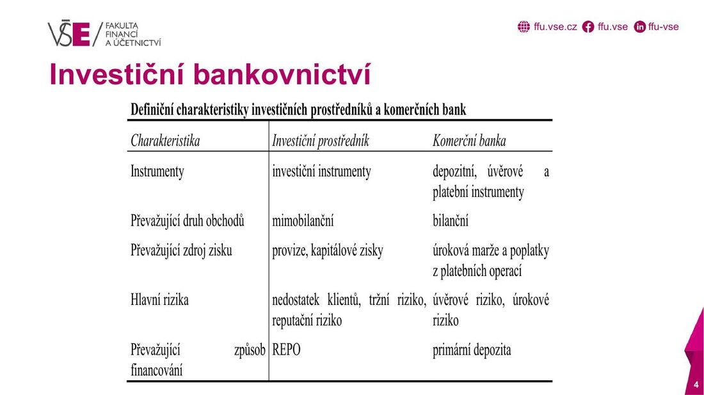
- Čím se živí: provize a kapitálové zisky × úroková marže a poplatky.
- Hlavní riziko: tržní a reputační × úvěrové a úrokové.
- Z čeho se financuje: REPO × vklady.
- Bilance: převážně mimobilanční obchody × bilanční obchody.
Proč se rozdíl před krizí stíral: VaR a casino banking
Před pádem Lehman Brothers komerční banky expandovaly na investiční trhy za nadprůměrnými výnosy a s moderním risk managementem (s. 5). Rozdíl mezi bankou a investičním prostředníkem tak postupně mizel. Jádrem risk managementu byl ukazatel VaR.
Ztráta z úrokových, měnových, akciových nebo komoditních rizik za dané období s předem danou pravděpodobností. Poprvé ho v bankovnictví použila JPMorgan v roce 1994 (s. 6).
VaR zní jako jedno bezpečné číslo, ale má slabiny (s. 7–8). Neříká nejvyšší možnou ztrátu, takže extrémní šoky podceňuje. Zanedbává systémové riziko a předpokládá normální rozdělení. Spoléhá na to, že se minulost bude opakovat. Je také procyklický: když mají všichni banky podobná data, dělají podobná rozhodnutí a chovají se stádně.
Banky s vklady od rizikově averzních střadatelů se plíživě změnily v de facto hedgeové fondy s pákou a nízkým kapitálem. Podle přednášejícího jim úspěch dal spíš dlouhý růst trhů v letech 1985–2008 než kvalita risk managementu (s. 9–10).
Stíraly se rozdíly mezi komerčními a investičními bankami, VaR bezpečí jen předstíral a vklady spořitelů tak nepřímo financovaly sázky na trzích. Tohle je důvod, proč následují pravidla pro investiční služby (MiFID) a pravidla pro oddělení bank (Glass-Steagall, Volcker, Vickers).
Čtyři modely, jak investiční bankovnictví začlenit
Čtyři modely (s. 12, 45) odpovídají na otázku, kde v bance investiční obchody sedí: univerzální bankovnictví (všechno v jedné bance), striktní oddělení investičního a komerčního bankovnictví, holdingová společnost a dceřiná společnost. Oddělení může vzniknout tržně, nebo jako důsledek regulace (s. 33); stejné členění platí pro dceřinou společnost (s. 45).
- Výhody: snižuje informační asymetrii, úspory ze sortimentu, diverzifikace podnikání.
- Nevýhody: konflikt zájmů, alokační neefektivnost, nízká rozvinutost trhu cenných papírů.
Obchodník s cennými papíry (OCP)
V Česku investiční služby provádí hlavně OCP. Je to a.s. nebo s.r.o. s povolením ČNB a platí pro něj kapitálová přiměřenost podobně jako pro banky (s. 18). Minimální vlastní kapitál závisí na tom, co OCP dělá (s. 14).
- dealer (obchoduje na vlastní účet): 730 tis. EUR,
- broker (provádí pokyny na účet zákazníka): 125 tis. EUR,
- přijímání a předávání pokynů: 50 tis. EUR.
Čím víc rizika OCP bere na sebe, tím víc kapitálu musí mít. Dealer riskuje vlastní peníze, proto je jeho minimum nejvyšší. Hlavní služby (s. 15) jsou přijímání a předávání pokynů (zprostředkování), provádění pokynů na účet zákazníka (brokerské obchody), obchodování na vlastní účet (dealerské), obhospodařování majetku, investiční poradenství, provozování MTF a emisní obchody. Doplňkové služby (s. 16) jsou správa a úschova, investiční doporučení a analýzy, úvěry na obchod a administrace fondů.
Po implementaci MiFID byl v ČR zrušen institut makléře. OCP musí zajistit, aby jeho lidé byli důvěryhodní a měli znalosti a zkušenosti, které prokazují doklady (s. 17).
MiFID: jednotná pravidla pro investiční služby v EU
Hlavní regulační iniciativou EU pro trhy finančních nástrojů je MiFID (Markets in Financial Instruments Directive). Patří k ní prováděcí směrnice 2006/73/ES a nařízení Komise č. 1287/2006 (s. 20). Do českého práva ji převedla novela zákona č. 256/2004 Sb., o podnikání na kapitálovém trhu, s přechodným obdobím do 30. 11. 2008 (s. 21). Její cíle (s. 22) jsou harmonizace ochrany investorů, snazší přeshraniční poskytování služeb, větší konkurence a nižší náklady, transparentnost cen a provizí a jednotný evropský kapitálový trh.
| Oblast | Co MiFID přinesla |
|---|---|
| A. Rozsah služeb | do investičních nástrojů přibyly komoditní a exotické deriváty; mezi hlavní služby investiční poradenství a provozování mnohostranného obchodního systému (MTF) |
| B. Způsob obchodování | kategorizace klientů, testování klientů, best execution |
| C. Organizace | přísné požadavky na interní audit, compliance, řízení rizik; podmínky outsourcingu |
| D. Trhy a transparentnost | cenová transparentnost před obchodem i po něm; regulované trhy, MTF, systematická internalizace |
Pro test jsou nejdůležitější tři věci z oblasti B: komu se služby poskytují, jak se zjišťuje, jestli jsou pro klienta vhodné, a jak se plní jeho pokyny. Princip je jednoduchý: čím méně klient rozumí, tím víc ho musí OCP chránit.
- profesionální zákazník: banka, OCP, pojišťovna, penzijní fond, stát, ČNB,
- profesionální zákazník na žádost: musí splnit alespoň 2 ze 3 kritérií: 10 obchodů za čtvrtletí během posledních 4 čtvrtletí; majetek aspoň 500 000 EUR; zkušenost z finančního trhu aspoň 1 rok,
- neprofesionální zákazník (nejširší informace a upozornění na rizika),
- způsobilá protistrana.
Test vhodnosti se dělá u investičního poradenství a obhospodařování portfolia. OCP zjistí znalosti, zkušenosti, cíle a finanční situaci klienta. Pokud informace nezíská, službu nesmí poskytnout.
Test přiměřenosti se dělá u ostatních služeb. Služba se poskytne i bez informací, ale s upozorněním, že je pro klienta nepřiměřená.
Rozdíl je v následku: u testu vhodnosti bez informací služba nejde, u testu přiměřenosti jde, jen s upozorněním. Test vhodnosti je pro poradenství a správu, přiměřenosti pro zbytek.
Povinnost provést pokyn klienta co nejlépe: zohlednit cenu, transakční náklady a rychlost.
MiFID 2, MiFIR 2 a EMIR
MiFID 2 a MiFIR 2 jsou post-lehmanovská novelizace (s. 29–31). Přinášejí nový typ obchodního místa OTF (organizovaný obchodní systém), pravidla před- a po-obchodní transparentnosti pro dluhopisy a deriváty a dohled nad komoditními deriváty a emisními povolenkami. Akcie z regulovaného trhu se musí obchodovat v regulovaných obchodních systémech. Zpřísňuje se správa majetku, poradenství a komplexní produkty (PRIPs) a také vysokofrekvenční a algoritmické obchodování (informační povinnost, řízení rizik). Nově se regulují informační služby APA, ARM a CTP (publikace obchodů, hlášení, konsolidovaná data).
Slajd 31 uvádí transpoziční lhůtu v polovině 2016 a plnou účinnost od počátku 2017. Doplněk: EU účinnost odložila na 3. 1. 2018 (směrnice 2016/1034). Oba údaje si zapamatuj, v testu se hodí 3. 1. 2018 jako skutečné datum.
Nařízení EP a Rady č. 648/2012, v platnosti od března 2013 (s. 32). Vybrané OTC deriváty se musí vypořádat přes centrální protistranu a obchody se hlásí do registrů obchodních údajů.
Oddělování bank v USA: Glass-Steagall a jeho konec (GLBA)
Velký příběh oddělování začíná v USA po krizi 30. let. Glass-Steagall Act (Banking Act 1933) rozdělil komerční a investiční bankovnictví tvrdou zdí. Pokud jste byli komerční bankou a členem Fedu, nesměli jste dělat většinu obchodů s cennými papíry.
Komerčním bankám, které byly členy Fedu, zakázal (s. 34–35):
- ručit, distribuovat a obchodovat s akciemi a dluhopisy na vlastní účet (§ 16, mimo státní a municipální cenné papíry),
- spojovat se s investičními firmami (§ 20),
- a investičním firmám podnikat v komerčním bankovnictví (§ 21),
- personálně se propojovat (§ 32).
Cíle zákona (s. 36) byly obnovit důvěru v komerční bankovnictví, zabránit toku peněz do spekulací, eliminovat konflikty zájmů a omezit moc bank. Zeď ale časem slábla. V 80. a 90. letech směly komerční banky dělat další obchody s cennými papíry (komerční papíry, hypoteční listy, poradenství, makléřství) a Fed povolil bankovním holdingům vlastnit investiční firmy jako dceřiné společnosti (s. 37).
Financial Services Modernization Act zrušil bariéry mezi komerčním a investičním bankovnictvím, kolektivním investováním a pojišťovnictvím. Tyto činnosti smí dělat finanční skupina přes finanční holdingovou společnost (s. 38–39). Kritici namítali, že zákon legalizoval expanzi Citicorp (převzetí Travelers Group 1998) do zakázaných činností (s. 40).
Japonská verze (čl. 65 zákona o cenných papírech a burze, 1948; s. 42–44) byla mírnější: banky směly investovat do cenných papírů do 5 % jednoho emitenta a propojovat se s investičními firmami, ale nesměly dělat akciové makléřské obchody.
Dodd-Frank Act (2010, s. 41) měl podpořit finanční stabilitu (transparentnost Wall Streetu), chránit daňové poplatníky před náklady na záchranu bank, chránit spotřebitele a omezit stínové bankovnictví. K tomu patří Volckerovo pravidlo.
Volckerovo pravidlo: ne zeď, ale zákaz vybraných obchodů
Volckerovo pravidlo je část Dodd-Frank Act (sekce 619), pojmenovaná podle Paula Volckera, bývalého předsedy Fedu. Původní návrh chtěl rizikové obchody bank na vlastní účet zcela zakázat, jako nová verze Glass-Steagall. Přijatá verze je ale výrazně mírnější.
Zakazuje komerčním bankám a jejich dceřiným společnostem krátkodobě obchodovat na vlastní účet s cennými papíry, deriváty a komoditními futures a opcemi. Investice do hedgeových a privátních fondů omezuje na max. 3 % kapitálu Tier I, přičemž podíl banky v jednom fondu nesmí přesáhnout 3 % jeho účastnického kapitálu.
Výjimky platí pro ručitelské obchody a market making (do výše předpokládané krátkodobé poptávky klientů), hedging doložený analýzami, americké vládní a municipální dluhopisy, obchody v zahraničí a brokerské, agentské a depotní obchody.
Výjimky neplatí, pokud má banka konflikt zájmů, výraznou expozici v rizikových aktivech, nebo by expozice ohrozila stabilitu amerického systému. Prováděcí předpisy vyšly v prosinci 2013; platnost od 1. 4. 2014, u velkých bank od 21. 7. 2015, pak další posuny (s. 50, 52).
Vickersovo pravidlo a další evropské verze
Britové zvolili jiný přístup. Neřekli bankám, co smí a nesmí dělat, ale nechali je v jedné skupině a oddělili jen ty části, které slouží běžným střadatelům.
Podle komise vedené prof. J. Vickersem. Podstatou je ring-fencing: vyčlenění maloobchodního bankovnictví od investičních obchodů na vlastní účet, ale uvnitř jedné finanční skupiny. Skupina smí dál obchodovat na vlastní účet, jen to nesmí dělat retailová entita (s. 54).
Pravidlo se netýká zajišťovacích transakcí, ručitelských obchodů, obchodů s centrální bankou, sekuritizací a jednoduchých derivátů. Dopadá jen na velké banky (HSBC, Barclays, RBS, Lloyds, Santander UK), ne na banky s aktivy do 25 mld. GBP, stavební spořitelny a pojišťovny. Plná implementace měla být do 2019 (s. 55).
- Volcker (USA): bankám zakazuje vybrané činnosti (obchodování na vlastní účet, hedge a PE fondy).
- Vickers (UK): nezakazuje nic, ale odděluje retailovou banku od rizikových obchodů uvnitř skupiny.
| Země / orgán | Řešení |
|---|---|
| Francie (2013) | spekulativní obchody velkých bank na vlastní účet přesunout do specializovaných dceřiných společností, mnoho výjimek (market making, hedging); od července 2015 |
| Německo (2013) | velké banky vyčlení vlastní obchody, HFT a úvěrově-garanční obchody s AIF do samostatné instituce |
| Liikanenova zpráva (EU, 2012) | povinné oddělení obchodování na vlastní účet a dalších vysoce rizikových činností do samostatného subjektu v rámci skupiny, jen u bank s významným podílem rizikových obchodů |
| Návrh nařízení EK (1/2014) | kombinace Volckera a Vickerse: zákaz obchodování na vlastní účet a investic do AIF; dohled může nařídit vyčlenit market making, sekuritizace a deriváty. Platí pro největší banky a pro banky, které 3 roky po sobě překračují aktiva 30 mld. EUR a obchodní aktiva a závazky 70 mld. EUR nebo 10 % aktiv. Zákaz se netýká market makingu, peněžního trhu a vládních dluhopisů |
Doplněk (zdroj: Evropská komise, 2018): návrh nařízení Komise v roce 2018 stáhla. Slajd 61 jen uvádí, že se implementace zkomplikovala.
Emise: kdo nese riziko neprodání
Slajd 63 jen vyjmenovává investiční obchody: emisní obchody (vlastní × cizí emise; komisionářské × ručitelské; veřejné × soukromé), obchodování (margin trading, short selling), depotní obchody, majetkovou správu (agent × trustee) a investiční a kapitálové poradenství. Dvě poslední techniky rozebereme podrobně, protože se na ně ptají s výpočtem. U emisí je důležité si zapamatovat jednu věc: kdo nese riziko, že se emise neprodá.
Doplněk (slajdy jen vyjmenovávají; zdroj: Musílek 2011, kap. 7–13):
- ručitelská emise (firm commitment): banka emisi odkoupí za pevnou cenu, riziko neprodání nese banka,
- komisionářská emise (best effort): banka se snaží prodat, co jde, riziko nese emitent.
Margin trading: nákup na dluh a páka
Při margin tradingu (s. 64–70) investor koupí akcie částečně na dluh. Podíl vlastních prostředků na hodnotě investice se nazývá marže. Zbytek mu půjčí broker. Výpůjční náklady se v příkladech zanedbávají. Všechno stojí na jedné myšlence: zisk nebo ztráta z akcií je pro všechny varianty stejná, ale vložené peníze jsou různé. Kdo vloží míň, získá z každé koruny víc procent zisku, ale i víc procent ztráty.
$$\text{rentabilita} = \frac{\text{kapitálový zisk (ztráta)}}{\text{vložené prostředky}}$$
Páka zvyšuje zisk i ztrátu v poměru k vloženým prostředkům. Čím nižší vložené prostředky, tím vyšší páka.

Nákup 100 akcií po 60 Kč je 6 000 Kč. Cena akcie se změní na 70 Kč, resp. na 40 Kč.
Krok 1: zisk a ztráta z akcií (stejné pro všechny varianty). Růst: $100 \cdot (70 - 60) = 1\,000$ Kč. Pokles: $100 \cdot (40 - 60) = -2\,000$ Kč.
Krok 2: vložené prostředky podle marže. 100 % (bez půjčky) 6 000 Kč, marže 90 % 5 400 Kč, marže 70 % 4 200 Kč, marže 60 % 3 600 Kč.
Krok 3: rentabilita. Např. marže 70 %: $1\,000 / 4\,200 = 23{,}81\ \%$ a $-2\,000 / 4\,200 = -47{,}62\ \%$.
| Úplné fin. | Marže 90 % | Marže 70 % | Marže 60 % | |
|---|---|---|---|---|
| Vložené prostředky | 6 000 | 5 400 | 4 200 | 3 600 |
| Růst na 70 Kč: zisk 1 000 Kč | 16,67 % | 18,52 % | 23,81 % | 27,78 % |
| Pokles na 40 Kč: ztráta 2 000 Kč | −33,33 % | −37,04 % | −47,62 % | −55,56 % |
Všechna čísla jsem přepočítal a sedí se slajdy 67 a 69. Vidíš, jak se s klesající marží zvětšují zisk i ztráta.
U varianty „Marže 90 %“ je vypůjčeno „−1 600 Kč“, ale vložené prostředky jsou 5 400 Kč. Správně je 6 000 − 5 400 = 600 Kč (10 % z 6 000 Kč, jak říká i zadání na s. 64). U ostatních variant to sedí: 70 % → 1 800 Kč, 60 % → 2 400 Kč. Rentabilita na s. 67 a 69 je spočtena s 5 400 Kč, takže je správná, chyba je jen v jediném čísle tabulky.
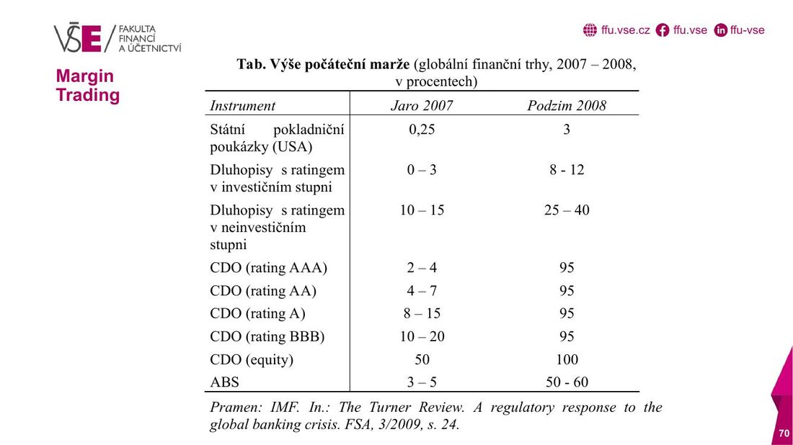
V krizi věřitelé prudce zvýšili požadavky na marži (slajd 70). Investoři museli buď doplnit peníze, nebo prodávat aktiva, což ceny tlačilo dál dolů. Je to stejný mechanismus páky jako v příkladu výše, jen v celé ekonomice.
Short selling: sázka na pokles a short against the box
Při krátkém prodeji (s. 71–73) investor prodá půjčené cenné papíry v očekávání, že cena klesne a on je později levněji koupí zpět. Nejzajímavější je speciální případ, kdy investor prodává krátce akcie, které zároveň sám drží.
Krátký prodej akcií, které investor zároveň drží v dlouhé pozici. Dlouhá a krátká pozice se vzájemně ruší, takže zisk je zafixován: ať kurz půjde nahoru, nebo dolů, výsledek se nemění.
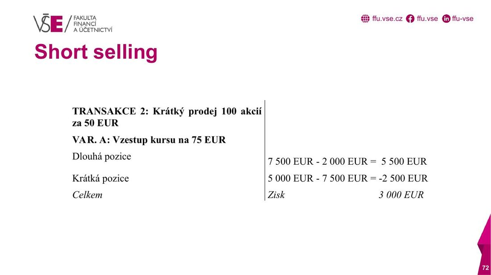
Investor koupil 100 akcií po 20 EUR (2 000 EUR). Kurz vzrostl na 50 EUR, nerealizovaný zisk je $5\,000 - 2\,000 = 3\,000$ EUR. Poté prodá 100 akcií nakrátko za 50 EUR (5 000 EUR).
Varianta A, kurz 75 EUR:
- dlouhá pozice: $7\,500 - 2\,000 = 5\,500$ EUR,
- krátká pozice: $5\,000 - 7\,500 = -2\,500$ EUR,
- celkem $5\,500 - 2\,500 = $ 3 000 EUR.
Varianta B, kurz 35 EUR:
- dlouhá pozice: $3\,500 - 2\,000 = 1\,500$ EUR,
- krátká pozice: $5\,000 - 3\,500 = 1\,500$ EUR,
- celkem $1\,500 + 1\,500 = $ 3 000 EUR.
V obou variantách vyjde 3 000 EUR, přepočítáno, sedí se slajdy. Bez dlouhé pozice by samotný krátký prodej při 75 EUR ztratil 2 500 EUR a při 35 EUR vydělal 1 500 EUR (doplněk, vlastní dopočet).
- Investiční prostředník: provize a kapitálové zisky, financování REPO; komerční banka: úroková marže, vklady. VaR je procyklický a podceňuje extrémy; casino banking = komerční banky jako hedgeové fondy.
- Modely: univerzální, striktní oddělení, holdingová společnost, dceřiná společnost. OCP: povolení ČNB (dealer 730, broker 125, pokyny 50 tis. EUR), makléř zrušen.
- MiFID: 4 kategorie klientů, test vhodnosti (poradenství, správa; bez informací nesmí) × přiměřenosti (jen upozornění), best execution; MiFID 2: OTF, transparentnost, HFT; EMIR: OTC deriváty přes CCP.
- Glass-Steagall 1933 → eroze → GLBA 1999 (finanční holding). Volcker (sekce 619 DFA): zákaz krátkodobého obchodování na vlastní účet, fondy max. 3 % Tier I a 3 % fondu.
- Vickers: ring-fencing retailu uvnitř skupiny, banky nad 25 mld. GBP, do 2019. Liikanen 2012, návrh EK 2014 (stažen 2018).
- Margin trading: rentabilita = zisk / vložené prostředky, páka zesiluje zisk i ztrátu.
- Short against the box zafixuje zisk (dlouhá a krátká pozice se ruší).
13. Sekundární trhy
Přednáška 17. 12. (odhad, spolu s tématem 12) · P. Musílek · zdroj: Sekundární trhy (1BP404_13_prednaska.pptx, čísla slajdů v závorkách); doplňky z Musílek (2011) a obecné literatury jsou označeny
Na sekundárním trhu si investoři prodávají už vydané cenné papíry mezi sebou. Téma se táhne jedním příběhem: burza už není klub, ale firma, která vydělává na obchodování, a obchody se rozutekly mezi desítky platforem. Český trh je v tomto příběhu malý a oslabený, a proto se téma pěkně váže na téma 1.
Burza, burzovní trh a proměna burz
Burzovní trh je organizované shromáždění osob, které obchodují podle burzovních zákonů a pravidel. Dřív to znamenalo sejít se na parketu, dnes se většinou obchoduje v počítačovém systému. Cenný papír navíc musí splnit podmínky připuštění na burzu (s. 4).
Obchoduje se buď na parketu (prezenční burza), v počítačovém systému (elektronická), nebo v obou současně (hybridní). Tradičně se burzy dělí na veřejné, privátní a bankovní. Podle předmětu obchodu jsou burzy peněžní, zbožové a burzy služeb (s. 3–4).
Hlavní změna se jmenuje demutualizace. Burza byla kdysi spolek členů, který zajišťoval technické podmínky obchodování a nešlo mu o zisk. Dnes je to akciová společnost, která sama dělá IPO a její akcie se obchodují na burzách (NYSE, Nasdaq, LSE, Deutsche Börse, Euronext, Hong Kong, Singapur aj.; s. 5). Takové burze jde o to maximalizovat cenu vlastních akcií, a tak přebírá konkurenční burzy, rozšiřuje služby a investuje do burzovního IT (s. 6).
Přeměna burzy ze spolku (veřejné, privátní, bankovní burzy) na ziskově orientovanou akciovou společnost, která samotná provádí IPO. Z poskytovatele technických podmínek se stává firma s diverzifikovanými službami.

Pokud je burza firma, sleduje, kde vydělává. Podíl obchodování ve výnosech roste (39 → 53 %), podíl kótace klesá (18 → 6 %). Proto burzám záleží na velkém objemu obchodů a na doplňkových službách, ne na počtu kótovaných firem. Obchodní objem je proto pro ně důležitější než počet emitentů.
Jak se srovnávají burzy a burzovní firmy
Tabulky ze slajdů 8–11 (stav 2016, WFE) ukazují řády velikosti. Podle tržní kapitalizace vede NYSE Group (19 573 mld. USD) před Nasdaq (8 979), Japan Exchange Group (4 955) a Šanghají (4 091). Euronext a LSE mají kolem 3 450 mld. USD. Pořadí podle objemu obchodů je jiné (Nasdaq 11 071, Šanghaj 7 510, Šen-čen 11 613, BATS 13 683 mld. USD). Nejvíc kótovaných domácích firem má Bombajská burza (5 820), před Tokiem (3 535) a Madridem (3 480), Euronext jen 936 (s. 8–11).
- největší podle kapitalizace: NYSE Group,
- nejvíc se obchoduje: BATS, Šen-čen, Nasdaq,
- nejvíc kótovaných firem: Bombaj.
Velká burza nemusí být nejaktivnější a nejvíc firem nemá ta největší. Navazuje to na téma 1, kde se kapitalizace a likvidita také liší.

Slajdy 12–13 srovnávají i to, jak se na burzách obchoduje. ICE má hybridní trh (PDS + COB + QDS), Nasdaq OMX QDS + COB, Tokio, LSE, Deutsche Börse a Šanghaj COB. Šanghaj je nezisková organizace vzájemnostního typu, ostatní jsou veřejně obchodovatelné korporace. Burzovní IT je pro Deutsche Börse „mimořádně významné“, pro ICE, Nasdaq OMX a LSE „velmi významné“ a u Tokia a Šanghaje nerozvinuté.
- COB (central order book): centrální kniha pokynů, kde se pokyny kupujících a prodávajících párují.
- QDS (quote driven system): ceny kotují tvůrci trhu.
- PDS (price driven system): cenový systém, tedy aukce.
Většina burz dnes používá COB (s. 16).
Doplněk (Musílek 2011, obecná literatura): burzy se spojují do nadnárodních skupin a zisk se přesouvá k datům, clearingu a technologiím.
Fragmentace sekundárních obchodů
Dřív byla burza místo, kde se obchodovalo. Dnes je jen jedna z mnoha platforem. V USA šlo v srpnu 2010 jen 27,9 % objemu přes NYSE Euronext a 22,7 % přes Nasdaq OMX. Investiční banky měly 17,5 % a dark pools 7,9 % (s. 14). Obchody se tedy rozptýlily mezi desítky platforem, tomu se říká fragmentace.
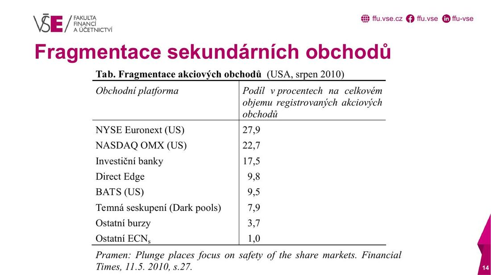
Investiční banky + dark pools: $17{,}5 + 7{,}9 = 25{,}4\ \%$.
Kontrola součtu celé tabulky: $27{,}9 + 22{,}7 + 17{,}5 + 9{,}8 + 9{,}5 + 7{,}9 + 3{,}7 + 1{,}0 = 100{,}0\ \%$ (s. 14).
Dark pools (temná seskupení) jsou systémy, které nezveřejňují pokyny před obchodem. Doplněk (obecná literatura): chrání velké pokyny před pohybem ceny, ale snižují transparentnost.
Doplněk (obecná literatura): v EU patří k alternativám regulovaného trhu MTF (alternativní platforma, kterou smí provozovat i obchodník s cennými papíry, mírnější pravidla pro emitenty) a OTF (od MiFID II, jen dluhopisy, deriváty a povolenky, ne akcie).
Vysokofrekvenční obchodování (HFT)
Když se obchody rozutekly mezi platformy a burzy přešly na elektronické knihy pokynů, přišla hra na rychlost. Počítače obchodují tak rychle, že příležitosti trvají jen několik milisekund.
Počítačově řízené investiční strategie s extrémně krátkou držbou pozice, vysokým denním objemem transakcí a nízkým ziskem z jedné transakce. Algoritmy analyzují obrovské množství tržních dat a hledají příležitosti, které trvají několik milisekund (s. 15).
- elektronický market making: protože většina burz přešla na COB, převzalo HFT roli tvůrců trhu z parketu. Dodává likviditu při minimálních spreadech a vyplatí se jen při obrovských objemech (s. 16),
- arbitráž: využívá cenové rozdíly mezi platformami na fragmentovaném trhu (s. 17),
- statistická arbitráž: sází na předvídatelné korelační vztahy mezi instrumenty nebo trhy při určitých událostech (s. 17).
Fragmentace a HFT spolu souvisí: rozdíly mezi platformami vytvářejí příležitosti pro arbitráž.
Doplněk (obecná literatura): rychlost zajišťuje umístění serverů u burzy (co-location). Rizika jsou „fantomová“ likvidita v krizi a bleskové propady (flash crash 6. 5. 2010). MiFID II vyžaduje testování algoritmů a pojistky.
Burzovní systém
Slajd 18 jen vyjmenovává prvky burzovního systému: burzovní publikum, příkazy, předmět obchodů, standardizace množství, obchodní systém (prezenční: ODS, PDS, aukce; elektronický: QDS, COB, aukce, kombinovaný; hybridní), druhy obchodů (promptní × termínové), vypořádání a burzovní informace. Dobře je znát hlavně rozdělení obchodních systémů.
Burza cenných papírů Praha (BCPP)
Pražská burza je v tématu příklad malé burzy, která ztrácí na významu. Dříve ji vlastnily banky a obchodníci, od 8. 12. 2008 je rozhodujícím akcionářem Wiener Börse (92,74 %). Od 2010 patří přes holding CEESEG AG (Wiener Börse 100 %, Ljubljana 81,01 %, Budapešť 50,45 %, BCPP 92,74 %), jehož management je shodný s managementem Wiener Börse. Cílem bylo zavést systém XETRA (Lublaň 2010, Budapešť a BCPP 2011), kupovat členy a harmonizovat pravidla a vypořádání (s. 20–21).
Na BCPP obchodují členové, ze zákona o podnikání na kapitálovém trhu také ČNB a MF ČR. O přijetí rozhoduje vedení burzy na doporučení burzovního výboru pro členské otázky. Člen jedná vlastním jménem přes svého zaměstnance a musí být členem Garančního fondu burzy (GFB) (s. 22).
Aktivita burzy ale prudce klesla. Členů bylo 17 na začátku, 106 v roce 1996 a jen 16 v roce 2017. Počet akciových emisí spadl z 1028 (1994) na 25 (2016) (s. 23–25). Z investičních certifikátů bylo v roce 2011 34 nepákových a 10 pákových emisí a warranty měly 24 emisí bez jediného obchodu (s. 26).

Členové: $106 \to 16$, tedy pokles o $\frac{106-16}{106} = 84{,}9\ \%$.
Emise: $1028 \to 25$, zbývá $\frac{25}{1028} = 2{,}4\ \%$ (s. 24–25).
Doplněk (Musílek 2011): příčinou je dozvuk kupónové privatizace, kdy bylo kótováno tisíce titulů bez skutečného trhu.
PXE, CDCP a RM-Systém
Kolem burzy stojí další instituce. Každá dělá něco jiného a snadno se pletou.
Dceřiná firma BCPP, na které se obchoduje elektrická energie s dodáním v ČR, SR a Maďarsku, v eurech, 9:00–16:00, futures i spot, s fyzickým nebo finančním vypořádáním. Dozor má MPO a ČNB, systém je elektronický (AOS), centrální protistranou je Central counterparty, a.s. (s. 27). Objem futures klesl z 2 441 mil. EUR (2008) na 1 171 (2010), spot jen 7,1 → 3,9 (s. 28).
Od 7. 7. 2010 po SCP. Provozuje vypořádací systém (burzovní i mimoburzovní obchody) a centrální evidenci zaknihovaných CP, přiděluje ISIN, půjčuje CP, spravuje garanční prostředky, úschovu a vypořádání obchodů PXE (s. 30–31). Investoři, kteří nejsou účastníky, mají účty jen přes účastníky (banky, obchodníci, MF, ČNB, RM-S) za poplatek (s. 32).
Obchodování od 1993, původně zákaznický princip: přímý vstup všech registrovaných zákazníků s jednoduchými podmínkami (s. 33). Od 1. 12. 2009 mají přímý přístup jen licencovaní obchodníci a osoby splňující alespoň 2 ze 3 podmínek: majetek ve finančních nástrojích nad 1 mil. Kč, obchody min. 5 mil. Kč za 12 měsíců, min. 40 transakcí za 12 měsíců (s. 34). Přímí účastníci obchodují přes EasySys, drobní klienti přes zprostředkovatele (v praxi FIO) a pokyny EasyClick ve standardizovaných lotech, s tvůrci trhu pro likviditu (s. 35).
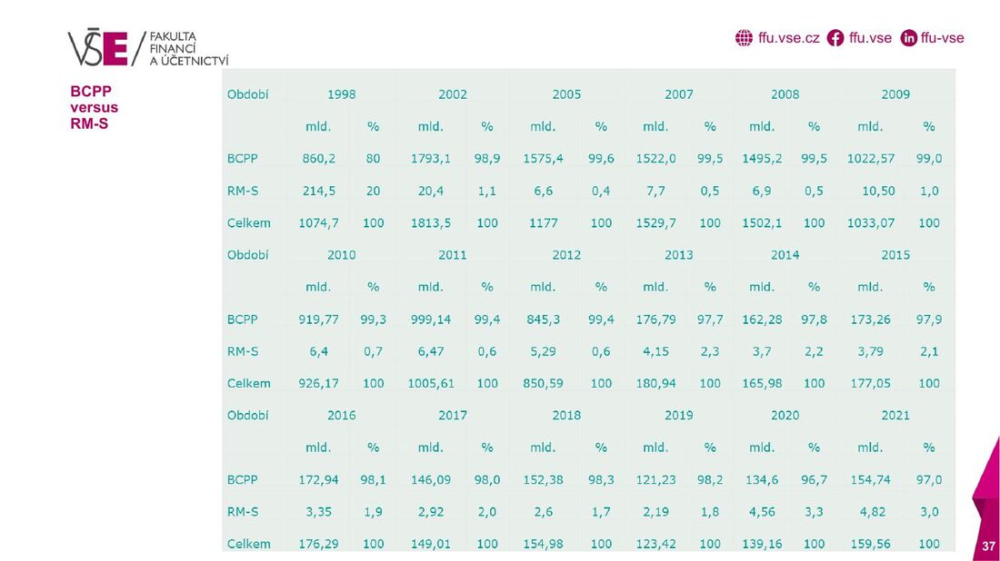
BCPP: $\frac{154{,}74}{159{,}56} = 0{,}970 = 97{,}0\ \%$.
RM-S: $\frac{4{,}82}{159{,}56} = 3{,}0\ \%$. Sedí se slajdem 37.
Údaje na slajdech jsou z různých let (2008–2017 pro BCPP, 2016 pro světové burzy). Neplést zákaznický princip (RM-S před 2009) a členský princip (BCPP). Start Market (2018), PX a aktuální stav trhu na slajdech nejsou, jsou jen v doplňku níže.
Doplněk: inovace, offshore a současný český trh
Doplněk (Musílek 2011, obecná literatura): sylabus tyto pojmy uvádí, slajdy je neobsahují.
- REIT: burzovně obchodovaná nemovitostní společnost, která v USA vyplácí min. 90 % zisku jako dividendy a neplatí daň z příjmů firmy.
- SPAC: prázdná společnost, která na burze získá peníze a obvykle do 2 let převezme soukromou firmu. Boom 2020–2021, pak útlum.
- Offshore centra: nízké daně, mírná regulace, utajení. Tlak na transparentnost přinesly FATCA 2010, CRS od 2017 a globální minimální daň 15 %.
- Český trh dnes: BCPP (od 1993) má segmenty Prime, Standard, Start (2018) a Free Market. Index PX je cenový (bez dividend). Trh je malý, koncentrovaný (ČEZ, banky) a nelikvidní.
- Burzy prošly demutualizací: ze spolků na ziskové akciové společnosti, které samy kotují akcie.
- Výnosy burz se přesouvají z kótace (18 → 6 %) k obchodování (39 → 53 %).
- Systémy: COB (kniha pokynů), QDS (kotace tvůrců trhu), PDS (aukce). ICE je hybridní, ostatní většinou COB.
- Fragmentace: v USA 2010 jen 50,6 % přes NYSE a Nasdaq, 25,4 % banky a dark pools.
- HFT: krátká držba, velké objemy, malý zisk na obchod. Elektronický market making, arbitráž, statistická arbitráž.
- BCPP: Wiener Börse 92,74 %, holding CEESEG, členský princip a GFB. Počet členů i emisí prudce klesl.
- CDCP: evidence, vypořádání, ISIN. PXE: elektřina (futures, spot). RM-Systém: zákaznický princip omezen od 12/2009, dnes malá role.